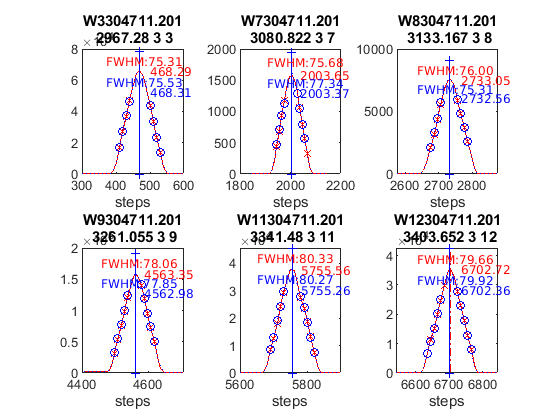

Contents
Brewer Evaluation
clear all;
file_setup='arenos2019_setup';
eval(file_setup);
Cal.n_inst=find(Cal.brw==201);
Cal.file_latex=fullfile('.','latex',Cal.brw_str{Cal.n_inst});
Cal.dir_figs=fullfile('latex',filesep(),Cal.brw_str{Cal.n_inst},...
filesep(),[Cal.brw_str{Cal.n_inst},'_figures'],filesep());
mkdir(Cal.dir_figs);
try
save(Cal.file_save,'-Append','Cal');
catch exception
fprintf('Error: %s\n Initializing data for Brewer %s\n',exception.message,Cal.brw_name{Cal.n_inst});
save(Cal.file_save);
end
ans =
logical
1
ans =
1×1 cell array
{'IZO#185'}
ans =
20×9 cell array
Columns 1 through 5
{'TSK#005'} {[ 5]} {[2]} {[0]} {'005'}
{'IOS#017'} {[ 17]} {[2]} {[0]} {'017'}
{'SCO#033'} {[ 33]} {[2]} {[0]} {'033'}
{'MAD#070'} {[ 70]} {[4]} {[0]} {'070'}
{'UK_#075'} {[ 75]} {[4]} {[0]} {'075'}
{'MUR#117'} {[117]} {[4]} {[0]} {'117'}
{'UK_#126'} {[126]} {[4]} {[0]} {'126'}
{'ARE#150'} {[150]} {[3]} {[0]} {'150'}
{'COR#151'} {[151]} {[4]} {[0]} {'151'}
{'K&Z#158'} {[158]} {[3]} {[0]} {'158'}
{'WRC#163'} {[163]} {[3]} {[0]} {'163'}
{'ZAR#166'} {[166]} {[4]} {[0]} {'166'}
{'UK_#172'} {[172]} {[3]} {[0]} {'172'}
{'JAP#174'} {[174]} {[3]} {[0]} {'174'}
{'IZO#185'} {[185]} {[3]} {[0]} {'185'}
{'MAD#186'} {[186]} {[3]} {[0]} {'186'}
{'CAN#190'} {[190]} {[3]} {[0]} {'190'}
{'TAM#201'} {[201]} {[3]} {[0]} {'201'}
{'DNK#202'} {[202]} {[3]} {[0]} {'202'}
{'DNK#228'} {[228]} {[3]} {[0]} {'228'}
Columns 6 through 9
{'..\005\ICF15117…'} {'..\005\ICF17219…'} {'1838'} {'1838'}
{'..\017\ICF14919…'} {'..\017\ICF14919…'} {'1680'} {'1680'}
{'..\033\ICF15617…'} {'..\033\IOS15617…'} {'2325'} {'2325'}
{'..\070\ICF15617…'} {'..\070\IOS15617…'} {'1685'} {'1685'}
{'..\075\ICF15017…'} {'..\075\ICF17819…'} {'1714'} {'1714'}
{'..\117\ICF15517…'} {'..\117\IOS15517…'} {'1620'} {'1620'}
{'..\126\icf15517…'} {'..\126\ICF17419…'} {'1710'} {'1710'}
{'..\150\ICF15617…'} {'..\150\ICF15617…'} {'0322'} {'0322'}
{'..\151\ICF15317…'} {'..\151\IOS15317…'} {'1880'} {'1880'}
{'..\158\ICF21218…'} {'..\158\ICF21218…'} {'0558'} {'0558'}
{'..\163\ICF21018…'} {'..\163\ICF17519…'} {'0274'} {'0274'}
{'..\166\ICF15217…'} {'..\166\ICF17419…'} {'1955'} {'1955'}
{'..\172\ICF15117…'} {'..\172\ICF17819…'} {'0444'} {'0444'}
{'..\174\ICF20718…'} {'..\174\ICF17819…'} {'0605'} {'0605'}
{'..\185\config18…'} {'..\185\config18…'} {'0365'} {'0367'}
{'..\186\ICF15317…'} {'..\186\IOS15317…'} {'0315'} {'0315'}
{'..\190\ICF11419…'} {'..\190\ICF17519…'} {'0410'} {'0410'}
{'..\201\ICF14315…'} {'..\201\ICF17519…'} {'0320'} {'0320'}
{'..\202\ICF15017…'} {'..\202\ICF17519…'} {'0270'} {'0270'}
{'..\228\ICF15017…'} {'..\228\ICF17419…'} {'0242'} {'0242'}
Cal =
struct with fields:
path_root: '~/CODE/campaigns/are2019'
file_save: 'arenos_2019.mat'
campaign: 'Arenosillo, Huelva (Spain), Jun 27th -- June 05th, 2019'
Station: [1×1 struct]
Date: [1×1 struct]
calibration_days: {20×3 cell}
blind_days: {20×1 cell}
final_days: {20×1 cell}
brw: [1×20 double]
brwM: [2 2 2 4 4 4 4 3 4 3 3 4 3 3 3 3 3 3 3 3]
sl_c: [0 0 0 0 0 0 0 0 0 0 0 0 0 0 0 0 0 0 0 0]
sl_c_blind: [1 0 0 0 0 0 0 0 0 0 0 0 0 0 0 0 0 0 0 0]
no_maint: [0 1 0 0 0 0 0 0 0 1 1 0 0 1 1 0 1 0 1 1]
plt: {1×20 cell}
n_brw: 20
brw_name: {1×20 cell}
brw_str: {1×20 cell}
Tsync: 3.5
brewer_ref: 15
n_ref: [15 15]
events: {1×19 cell}
events_n: {1×19 cell}
events_text: {1×19 cell}
events_raw: {1×19 cell}
incidences_text: {1×19 cell}
ETC_C: {20×1 cell}
check =
20×10 cell array
Columns 1 through 5
{'TSK#005'} {[ 5]} {[2]} {[0]} {'005'}
{'IOS#017'} {[ 17]} {[2]} {[0]} {'017'}
{'SCO#033'} {[ 33]} {[2]} {[0]} {'033'}
{'MAD#070'} {[ 70]} {[4]} {[0]} {'070'}
{'UK_#075'} {[ 75]} {[4]} {[0]} {'075'}
{'MUR#117'} {[117]} {[4]} {[0]} {'117'}
{'UK_#126'} {[126]} {[4]} {[0]} {'126'}
{'ARE#150'} {[150]} {[3]} {[0]} {'150'}
{'COR#151'} {[151]} {[4]} {[0]} {'151'}
{'K&Z#158'} {[158]} {[3]} {[0]} {'158'}
{'WRC#163'} {[163]} {[3]} {[0]} {'163'}
{'ZAR#166'} {[166]} {[4]} {[0]} {'166'}
{'UK_#172'} {[172]} {[3]} {[0]} {'172'}
{'JAP#174'} {[174]} {[3]} {[0]} {'174'}
{'IZO#185'} {[185]} {[3]} {[0]} {'185'}
{'MAD#186'} {[186]} {[3]} {[0]} {'186'}
{'CAN#190'} {[190]} {[3]} {[0]} {'190'}
{'TAM#201'} {[201]} {[3]} {[0]} {'201'}
{'DNK#202'} {[202]} {[3]} {[0]} {'202'}
{'DNK#228'} {[228]} {[3]} {[0]} {'228'}
Columns 6 through 9
{'..\005\ICF15117…'} {'..\005\ICF17219…'} {'1838'} {'1838'}
{'..\017\ICF14919…'} {'..\017\ICF14919…'} {'1680'} {'1680'}
{'..\033\ICF15617…'} {'..\033\IOS15617…'} {'2325'} {'2325'}
{'..\070\ICF15617…'} {'..\070\IOS15617…'} {'1685'} {'1685'}
{'..\075\ICF15017…'} {'..\075\ICF17819…'} {'1714'} {'1714'}
{'..\117\ICF15517…'} {'..\117\IOS15517…'} {'1620'} {'1620'}
{'..\126\icf15517…'} {'..\126\ICF17419…'} {'1710'} {'1710'}
{'..\150\ICF15617…'} {'..\150\ICF15617…'} {'0322'} {'0322'}
{'..\151\ICF15317…'} {'..\151\IOS15317…'} {'1880'} {'1880'}
{'..\158\ICF21218…'} {'..\158\ICF21218…'} {'0558'} {'0558'}
{'..\163\ICF21018…'} {'..\163\ICF17519…'} {'0274'} {'0274'}
{'..\166\ICF15217…'} {'..\166\ICF17419…'} {'1955'} {'1955'}
{'..\172\ICF15117…'} {'..\172\ICF17819…'} {'0444'} {'0444'}
{'..\174\ICF20718…'} {'..\174\ICF17819…'} {'0605'} {'0605'}
{'..\185\config18…'} {'..\185\config18…'} {'0365'} {'0367'}
{'..\186\ICF15317…'} {'..\186\IOS15317…'} {'0315'} {'0315'}
{'..\190\ICF11419…'} {'..\190\ICF17519…'} {'0410'} {'0410'}
{'..\201\ICF14315…'} {'..\201\ICF17519…'} {'0320'} {'0320'}
{'..\202\ICF15017…'} {'..\202\ICF17519…'} {'0270'} {'0270'}
{'..\228\ICF15017…'} {'..\228\ICF17419…'} {'0242'} {'0242'}
Column 10
{1×6 double}
{1×6 double}
{1×6 double}
{1×6 double}
{1×6 double}
{1×6 double}
{1×6 double}
{1×6 double}
{1×6 double}
{1×6 double}
{1×6 double}
{1×6 double}
{1×6 double}
{1×6 double}
{1×6 double}
{1×6 double}
{1×6 double}
{1×6 double}
{1×6 double}
{1×6 double}
configuration files
close all
[config_def,TCdef,DTdef,ETCdef,A1def,ATdef]=read_icf(Cal.brw_config_files{Cal.n_inst,2});
[config_orig,TCorig,DTorig,ETCorig,A1orig,ATorig]=read_icf(Cal.brw_config_files{Cal.n_inst,1});
Station.OSC=680;
Station.name='';
Station.lat=67;
Station.long=50;
Station.meanozo=350;
cal_step={}; sc_avg={}; sc_raw={}; Args={};
Sun_scan: Before Campaign
close all
[cal_step{1},sc_avg{1},sc_raw{1},Args{1}]=sc_report(Cal.brw_str{Cal.n_inst},Cal.brw_config_files{Cal.n_inst,1},...
'date_range',datenum(Cal.Date.cal_year,1,[1 159]),...
'CSN_orig',config_orig(14),'OSC',Station.OSC,...
'control_flag',1,'residual_limit',35,...
'hg_time',35,'one_flag',0);
201
warning Date error in file
ans =
-1 12 30 0 0 0
OK->B00119.201
warning Date error in file
ans =
-1 12 30 0 0 0
OK->B00219.201
warning Date error in file
ans =
-1 12 30 0 0 0
OK->B12819.201

Sun_scan: Campaign
[cal_step{2},sc_avg{2},sc_raw{2},Args{2}]=sc_report(Cal.brw_str{Cal.n_inst},Cal.brw_config_files{Cal.n_inst,2},...
'date_range',datenum(Cal.Date.cal_year,1,Cal.calibration_days{Cal.n_inst,1}([5 end])),...
'CSN_orig',config_def(14),'OSC',Station.OSC,...
'control_flag',1,'residual_limit',55,...
'hg_time',50,'one_flag',1);
201
OK->B17219.201
OK->B17319.201

ix=sort(findobj('tag','SC_INDIVIDUAL')); figure(ix); set(get(gca,'title'),'FontSize',8);
printfiles_report(ix',Cal.dir_figs,'aux_pattern',ix,'FontSize',.9,'Width',8.5,'Height',7);
ix=sort(findobj('tag','Final_SC_Calculation'));
if length(ix)>1
Width=8; Height=6;
for i=1:length(ix), figure(ix(i)); set(get(gca,'title'),'FontSize',8); end
else
Width=13; Height=8;
end
printfiles_report(ix',Cal.dir_figs,'aux_pattern',ix,'Width',Width,'Height',Height);
close all
naux =
1
naux =
1
figura =
'201_figures_Final_SC_Calculation_1'
naux =
2
Definicion de variables: SC
if length(cal_step)>1
d_p=[length(cal_step)-1 length(cal_step)]; tags={'','new'};
else
d_p=1; tags={'new'};
end
idx=1; cal_step_error={};
for t=d_p
cal_step_error{t}=round(mean([abs(cal_step{t}(2)-cal_step{t}(3)),abs(cal_step{t}(2)-cal_step{t}(4))]));
latexcmd(fullfile(Cal.file_latex,['cal_wavelengthSC',tags{idx},'_',Cal.brw_str{Cal.n_inst}]),...
['\numSC',tags{idx}],size(sc_avg{t},1),...
['\CALCSTEP',tags{idx}],round(cal_step{t}(1)),...
['\calsteperror',tags{idx}],cal_step_error{t});
idx=idx+1;
end
load(Cal.file_save,'sunscan');sunscan{Cal.n_inst}.cal_step=cal_step;
sunscan{Cal.n_inst}.cal_step_error=cal_step_error;
sunscan{Cal.n_inst}.sc_avg=sc_avg; sunscan{Cal.n_inst}.sc_raw=sc_raw;
sunscan{Cal.n_inst}.info=Args;
save(Cal.file_save,'-APPEND','sunscan');
dsp calibration
res={}; detail={}; DSP_QUAD={}; QUAD_SUM={}; QUAD_DETAIL={};
CUBIC_SUM={}; CUBIC_DETAIL={}; salida={}; CSN_icf={};
l=dir(fullfile('DSP',[Cal.brw_str{Cal.n_inst},'*']));
ldsp=cellstr(cat(1,l.name));
for jj=1:length(ldsp)
if jj==length(ldsp),confign=2; else confign=1; end
try
[res{jj},detail{jj},DSP_QUAD{jj},QUAD_SUM{jj},QUAD_DETAIL{jj},...
CUBIC_SUM{jj},CUBIC_DETAIL{jj},salida{jj},CSN_icf{jj},...
]=dspreport(Cal,'dsp_dir',fullfile('DSP',ldsp{jj}),'config_n',1);
catch
warning(sprintf('Error en %s. DSP: %s',Cal.brw_name{Cal.n_inst},ldsp{jj}));
res{jj}=NaN*ones(15,9,2); detail{jj}=NaN*ones(7,6,15,2); QUAD_DETAIL{jj}=NaN;
end
datefile =
734551
now:W1004711.201
now:W3004711.201
now:W7004711.201
now:W8004711.201
now:W9004711.201
now:W11004711.201
now:W12004711.201
now:W1104711.201
now:W3104711.201
now:W7104711.201
now:W8104711.201
now:W9104711.201
now:W11104711.201
now:W12104711.201
now:W13104711.201
now:W3204711.201
now:W7204711.201
now:W8204711.201
now:W9204711.201
now:W11204711.201
now:W12204711.201
now:W13204711.201
now:W3304711.201
now:W7304711.201
now:W8304711.201
now:W9304711.201
now:W11304711.201
now:W12304711.201
now:W13304711.201
now:W7404711.201
now:W8404711.201
now:W9404711.201
now:W11404711.201
now:W12404711.201
now:W13404711.201
now:W7504711.201
now:W8504711.201
now:W9504711.201
now:W11504711.201
now:W12504711.201
now:W13504711.201
now:W14504711.201
lines_dsp_04711__201
saving alldsp to DSP/201_11_048/alldsp_04711_201.201
eliminamos la linea slit 6 3403.652000 0.255801
eliminamos la linea slit 4 3403.652000 0.265801
eliminamos la linea slit 2 3499.952000 -0.315810
eliminamos la linea slit 1 2967.280000 -0.258621
eliminamos la linea slit 6 3133.167000 -0.120213
eliminamos la linea slit 5 3403.652000 0.140807
eliminamos la linea slit 4 3341.480000 0.153150
eliminamos la linea slit 3 3499.952000 -0.160477
eliminamos la linea slit 2 3403.652000 -0.175495
eliminamos la linea slit 1 3261.055000 0.179074
eliminamos la linea slit 4 3261.055000 0.124944
eliminamos la linea slit 3 3080.822000 -0.135104
eliminamos la linea slit 2 3341.480000 -0.136371
eliminamos la linea slit 2 2967.280000 -0.138275
saving normaldsp to DSP/201_11_048/dspnorm_04711_201.201 as brewer compatible file
Use polyval(pwl(2,:),wl) for calculating normal wavelengths
Saving ozonecoeffs to DSP/201_11_048/opos04711_201.201
280 WL(A) 3031.36 3062.55 3099.89 3134.39 3167.19 3199.12
Res(A) 11.14 10.95 10.71 10.97 10.73 10.66
O3abs(1/cm) 2.6189 1.7900 1.0073 0.6787 0.3747 0.2989 O3: 0.3519
Daumt O3abs(1/cm) 2.6258 1.7840 0.9993 0.6717 0.3681 0.2981 O3: 0.3606
So2abs(1/cm) 3.5695 5.5016 2.3441 2.0006 1.0404 0.6371
Bremen O3abs(1/cm) 2.6288 1.7874 1.0050 0.6815 0.3731 0.2995 O3: 0.3525
Nicolet 1e4*Rayabs(1/cm) 5054.6 4835.4 4588.6 4374.8 4183.1 4006.7 R: 9.8482
Bates(fix) 1e4*Rayabs(1/cm) 0.0 4870.0 4620.0 4410.0 4220.0 4040.0 R: -1.0000
Bodhaine 1e4*Rayabs(1/cm) 5051.1 4833.4 4588.1 4375.4 4184.7 4009.0 R: 9.4771
I0(mW m^-2nm^-1) 11727.74 9419.50 7419.58 4926.38 4124.81 3274.52 ETC: 1448
Ozone offset due to Rayleigh (RayCOeff/O3Coeff): -2.8 DU
Ozone offset due to Rayleigh (Bodhaine): -3.0 DU
Ratio Ozone for So2(A3)= 1.1729, So2/O3(A2)= 2.7032
O3 factor from Bass & Paur to Daumont = 0.9758
O3 factor from Bass & Paur to Bremen = 0.9983
281 WL(A) 3031.43 3062.62 3099.96 3134.46 3167.26 3199.19
Res(A) 11.14 10.95 10.71 10.97 10.73 10.66
O3abs(1/cm) 2.6162 1.7885 1.0071 0.6786 0.3746 0.2987 O3: 0.3513
Daumt O3abs(1/cm) 2.6230 1.7827 0.9990 0.6717 0.3680 0.2980 O3: 0.3602
So2abs(1/cm) 3.5497 5.5280 2.3503 1.9891 1.0417 0.6353
Bremen O3abs(1/cm) 2.6261 1.7860 1.0046 0.6814 0.3730 0.2993 O3: 0.3520
Nicolet 1e4*Rayabs(1/cm) 5054.1 4834.9 4588.2 4374.3 4182.7 4006.4 R: 9.8452
Bates(fix) 1e4*Rayabs(1/cm) 0.0 4870.0 4620.0 4410.0 4220.0 4040.0 R: -1.0000
Bodhaine 1e4*Rayabs(1/cm) 5050.6 4832.9 4587.7 4375.0 4184.3 4008.6 R: 9.4780
I0(mW m^-2nm^-1) 11721.34 9412.98 7393.11 4924.06 4114.20 3268.73 ETC: 1437
Ozone offset due to Rayleigh (RayCOeff/O3Coeff): -2.8 DU
Ozone offset due to Rayleigh (Bodhaine): -3.0 DU
Ratio Ozone for So2(A3)= 1.1709, So2/O3(A2)= 2.7209
O3 factor from Bass & Paur to Daumont = 0.9755
O3 factor from Bass & Paur to Bremen = 0.9982
282 WL(A) 3031.51 3062.69 3100.03 3134.54 3167.33 3199.26
Res(A) 11.14 10.95 10.71 10.97 10.73 10.66
O3abs(1/cm) 2.6133 1.7870 1.0068 0.6785 0.3746 0.2983 O3: 0.3507
Daumt O3abs(1/cm) 2.6203 1.7813 0.9986 0.6717 0.3679 0.2978 O3: 0.3597
So2abs(1/cm) 3.5303 5.5538 2.3571 1.9778 1.0430 0.6335
Bremen O3abs(1/cm) 2.6235 1.7846 1.0043 0.6814 0.3730 0.2991 O3: 0.3514
Nicolet 1e4*Rayabs(1/cm) 5053.6 4834.4 4587.7 4373.9 4182.3 4006.0 R: 9.8422
Bates(fix) 1e4*Rayabs(1/cm) 0.0 4870.0 4620.0 4410.0 4220.0 4040.0 R: -1.0000
Bodhaine 1e4*Rayabs(1/cm) 5050.1 4832.4 4587.2 4374.6 4183.9 4008.3 R: 9.4718
I0(mW m^-2nm^-1) 11714.95 9406.47 7366.81 4921.16 4103.62 3262.94 ETC: 1425
Ozone offset due to Rayleigh (RayCOeff/O3Coeff): -2.8 DU
Ozone offset due to Rayleigh (Bodhaine): -3.0 DU
Ratio Ozone for So2(A3)= 1.1685, So2/O3(A2)= 2.7389
O3 factor from Bass & Paur to Daumont = 0.9751
O3 factor from Bass & Paur to Bremen = 0.9979
283 WL(A) 3031.58 3062.77 3100.11 3134.61 3167.40 3199.33
Res(A) 11.14 10.94 10.71 10.97 10.73 10.66
O3abs(1/cm) 2.6104 1.7855 1.0066 0.6783 0.3746 0.2980 O3: 0.3500
Daumt O3abs(1/cm) 2.6175 1.7800 0.9983 0.6717 0.3678 0.2976 O3: 0.3591
So2abs(1/cm) 3.5109 5.5796 2.3640 1.9665 1.0443 0.6316
Bremen O3abs(1/cm) 2.6208 1.7831 1.0039 0.6813 0.3729 0.2988 O3: 0.3509
Nicolet 1e4*Rayabs(1/cm) 5053.0 4833.9 4587.3 4373.5 4181.9 4005.6 R: 9.8391
Bates(fix) 1e4*Rayabs(1/cm) 0.0 4870.0 4620.0 4410.0 4220.0 4040.0 R: -1.0000
Bodhaine 1e4*Rayabs(1/cm) 5049.6 4831.9 4586.8 4374.1 4183.5 4007.9 R: 9.4672
I0(mW m^-2nm^-1) 11708.57 9399.97 7340.66 4917.08 4093.07 3257.54 ETC: 1415
Ozone offset due to Rayleigh (RayCOeff/O3Coeff): -2.8 DU
Ozone offset due to Rayleigh (Bodhaine): -3.0 DU
Ratio Ozone for So2(A3)= 1.1659, So2/O3(A2)= 2.7572
O3 factor from Bass & Paur to Daumont = 0.9745
O3 factor from Bass & Paur to Bremen = 0.9975
284 WL(A) 3031.65 3062.84 3100.18 3134.68 3167.47 3199.40
Res(A) 11.14 10.94 10.71 10.97 10.73 10.66
O3abs(1/cm) 2.6078 1.7840 1.0063 0.6781 0.3746 0.2976 O3: 0.3492
Daumt O3abs(1/cm) 2.6148 1.7786 0.9980 0.6716 0.3678 0.2973 O3: 0.3586
So2abs(1/cm) 3.4915 5.6034 2.3709 1.9547 1.0456 0.6297
Bremen O3abs(1/cm) 2.6182 1.7817 1.0036 0.6812 0.3729 0.2986 O3: 0.3503
Nicolet 1e4*Rayabs(1/cm) 5052.5 4833.4 4586.8 4373.0 4181.5 4005.2 R: 9.8361
Bates(fix) 1e4*Rayabs(1/cm) 0.0 4870.0 4620.0 4410.0 4220.0 4040.0 R: -1.0000
Bodhaine 1e4*Rayabs(1/cm) 5049.0 4831.4 4586.3 4373.7 4183.1 4007.5 R: 9.4681
I0(mW m^-2nm^-1) 11702.20 9393.48 7314.67 4913.00 4082.54 3252.71 ETC: 1406
Ozone offset due to Rayleigh (RayCOeff/O3Coeff): -2.8 DU
Ozone offset due to Rayleigh (Bodhaine): -3.0 DU
Ratio Ozone for So2(A3)= 1.1632, So2/O3(A2)= 2.7741
O3 factor from Bass & Paur to Daumont = 0.9738
O3 factor from Bass & Paur to Bremen = 0.9969
285 WL(A) 3031.73 3062.91 3100.25 3134.75 3167.54 3199.47
Res(A) 11.14 10.94 10.71 10.97 10.72 10.66
O3abs(1/cm) 2.6052 1.7825 1.0060 0.6779 0.3746 0.2973 O3: 0.3483
Daumt O3abs(1/cm) 2.6121 1.7772 0.9976 0.6715 0.3677 0.2971 O3: 0.3580
So2abs(1/cm) 3.4741 5.6268 2.3778 1.9429 1.0469 0.6278
Bremen O3abs(1/cm) 2.6156 1.7802 1.0032 0.6810 0.3729 0.2983 O3: 0.3496
Nicolet 1e4*Rayabs(1/cm) 5052.0 4832.9 4586.3 4372.6 4181.1 4004.9 R: 9.8331
Bates(fix) 1e4*Rayabs(1/cm) 0.0 4870.0 4620.0 4410.0 4220.0 4040.0 R: -1.0000
Bodhaine 1e4*Rayabs(1/cm) 5048.5 4830.9 4585.8 4373.3 4182.7 4007.2 R: 9.4648
I0(mW m^-2nm^-1) 11695.84 9387.00 7288.83 4908.93 4072.03 3247.76 ETC: 1397
Ozone offset due to Rayleigh (RayCOeff/O3Coeff): -2.8 DU
Ozone offset due to Rayleigh (Bodhaine): -3.0 DU
Ratio Ozone for So2(A3)= 1.1605, So2/O3(A2)= 2.7907
O3 factor from Bass & Paur to Daumont = 0.9731
O3 factor from Bass & Paur to Bremen = 0.9964
286 WL(A) 3031.80 3062.99 3100.32 3134.82 3167.62 3199.54
Res(A) 11.14 10.94 10.71 10.97 10.72 10.66
O3abs(1/cm) 2.6026 1.7809 1.0056 0.6776 0.3746 0.2969 O3: 0.3475
Daumt O3abs(1/cm) 2.6095 1.7758 0.9973 0.6714 0.3677 0.2968 O3: 0.3573
So2abs(1/cm) 3.4571 5.6493 2.3855 1.9313 1.0482 0.6258
Bremen O3abs(1/cm) 2.6130 1.7786 1.0029 0.6809 0.3729 0.2981 O3: 0.3489
Nicolet 1e4*Rayabs(1/cm) 5051.4 4832.4 4585.9 4372.2 4180.7 4004.5 R: 9.8301
Bates(fix) 1e4*Rayabs(1/cm) 0.0 4870.0 4620.0 4410.0 4220.0 4040.0 R: -1.0000
Bodhaine 1e4*Rayabs(1/cm) 5048.0 4830.4 4585.4 4372.8 4182.3 4006.8 R: 9.4587
I0(mW m^-2nm^-1) 11689.49 9380.53 7263.14 4904.86 4061.55 3242.68 ETC: 1388
Ozone offset due to Rayleigh (RayCOeff/O3Coeff): -2.8 DU
Ozone offset due to Rayleigh (Bodhaine): -3.0 DU
Ratio Ozone for So2(A3)= 1.1578, So2/O3(A2)= 2.8063
O3 factor from Bass & Paur to Daumont = 0.9726
O3 factor from Bass & Paur to Bremen = 0.9961
287 WL(A) 3031.87 3063.06 3100.39 3134.89 3167.69 3199.61
Res(A) 11.14 10.94 10.71 10.97 10.72 10.66
O3abs(1/cm) 2.6001 1.7794 1.0054 0.6773 0.3746 0.2966 O3: 0.3468
Daumt O3abs(1/cm) 2.6069 1.7743 0.9970 0.6713 0.3677 0.2966 O3: 0.3566
So2abs(1/cm) 3.4402 5.6718 2.3932 1.9197 1.0495 0.6237
Bremen O3abs(1/cm) 2.6105 1.7771 1.0026 0.6807 0.3729 0.2978 O3: 0.3481
Nicolet 1e4*Rayabs(1/cm) 5050.9 4831.9 4585.4 4371.8 4180.3 4004.1 R: 9.8271
Bates(fix) 1e4*Rayabs(1/cm) 0.0 4870.0 4620.0 4410.0 4220.0 4040.0 R: -1.0000
Bodhaine 1e4*Rayabs(1/cm) 5047.4 4829.9 4584.9 4372.4 4181.9 4006.4 R: 9.4579
I0(mW m^-2nm^-1) 11683.15 9374.07 7242.89 4900.80 4051.10 3237.48 ETC: 1384
Ozone offset due to Rayleigh (RayCOeff/O3Coeff): -2.8 DU
Ozone offset due to Rayleigh (Bodhaine): -3.0 DU
Ratio Ozone for So2(A3)= 1.1551, So2/O3(A2)= 2.8219
O3 factor from Bass & Paur to Daumont = 0.9725
O3 factor from Bass & Paur to Bremen = 0.9961
288 WL(A) 3031.95 3063.13 3100.47 3134.96 3167.76 3199.68
Res(A) 11.14 10.94 10.71 10.97 10.72 10.66
O3abs(1/cm) 2.5975 1.7778 1.0051 0.6770 0.3746 0.2962 O3: 0.3460
Daumt O3abs(1/cm) 2.6043 1.7729 0.9966 0.6712 0.3677 0.2963 O3: 0.3558
So2abs(1/cm) 3.4233 5.6924 2.4010 1.9079 1.0508 0.6217
Bremen O3abs(1/cm) 2.6080 1.7756 1.0022 0.6805 0.3729 0.2975 O3: 0.3473
Nicolet 1e4*Rayabs(1/cm) 5050.4 4831.4 4585.0 4371.3 4179.9 4003.8 R: 9.8241
Bates(fix) 1e4*Rayabs(1/cm) 0.0 4870.0 4620.0 4410.0 4220.0 4040.0 R: -1.0000
Bodhaine 1e4*Rayabs(1/cm) 5046.9 4829.4 4584.5 4372.0 4181.5 4006.0 R: 9.4574
I0(mW m^-2nm^-1) 11676.81 9367.62 7227.13 4896.74 4040.67 3231.39 ETC: 1383
Ozone offset due to Rayleigh (RayCOeff/O3Coeff): -2.8 DU
Ozone offset due to Rayleigh (Bodhaine): -3.0 DU
Ratio Ozone for So2(A3)= 1.1522, So2/O3(A2)= 2.8366
O3 factor from Bass & Paur to Daumont = 0.9723
O3 factor from Bass & Paur to Bremen = 0.9961
289 WL(A) 3032.02 3063.21 3100.54 3135.04 3167.83 3199.75
Res(A) 11.14 10.94 10.71 10.97 10.72 10.66
O3abs(1/cm) 2.5948 1.7761 1.0049 0.6767 0.3746 0.2957 O3: 0.3450
Daumt O3abs(1/cm) 2.6017 1.7714 0.9963 0.6710 0.3677 0.2960 O3: 0.3550
So2abs(1/cm) 3.4084 5.7125 2.4086 1.8959 1.0521 0.6195
Bremen O3abs(1/cm) 2.6055 1.7740 1.0019 0.6803 0.3729 0.2971 O3: 0.3465
Nicolet 1e4*Rayabs(1/cm) 5049.8 4830.9 4584.5 4370.9 4179.5 4003.4 R: 9.8211
Bates(fix) 1e4*Rayabs(1/cm) 0.0 4870.0 4620.0 4410.0 4220.0 4040.0 R: -1.0000
Bodhaine 1e4*Rayabs(1/cm) 5046.4 4828.9 4584.0 4371.6 4181.1 4005.7 R: 9.4506
I0(mW m^-2nm^-1) 11670.49 9361.18 7211.83 4892.68 4030.26 3221.26 ETC: 1375
Ozone offset due to Rayleigh (RayCOeff/O3Coeff): -2.8 DU
Ozone offset due to Rayleigh (Bodhaine): -3.0 DU
Ratio Ozone for So2(A3)= 1.1489, So2/O3(A2)= 2.8514
O3 factor from Bass & Paur to Daumont = 0.9718
O3 factor from Bass & Paur to Bremen = 0.9957
290 WL(A) 3032.10 3063.28 3100.61 3135.11 3167.90 3199.82
Res(A) 11.13 10.94 10.71 10.97 10.72 10.66
O3abs(1/cm) 2.5921 1.7745 1.0046 0.6763 0.3747 0.2952 O3: 0.3440
Daumt O3abs(1/cm) 2.5992 1.7699 0.9960 0.6708 0.3677 0.2957 O3: 0.3542
So2abs(1/cm) 3.3940 5.7316 2.4170 1.8841 1.0534 0.6174
Bremen O3abs(1/cm) 2.6031 1.7724 1.0016 0.6800 0.3730 0.2968 O3: 0.3456
Nicolet 1e4*Rayabs(1/cm) 5049.3 4830.4 4584.0 4370.5 4179.1 4003.0 R: 9.8180
Bates(fix) 1e4*Rayabs(1/cm) 0.0 4870.0 4620.0 4410.0 4220.0 4040.0 R: -1.0000
Bodhaine 1e4*Rayabs(1/cm) 5045.9 4828.4 4583.6 4371.1 4180.7 4005.3 R: 9.4472
I0(mW m^-2nm^-1) 11664.17 9354.75 7196.98 4888.62 4019.88 3211.16 ETC: 1368
Ozone offset due to Rayleigh (RayCOeff/O3Coeff): -2.9 DU
Ozone offset due to Rayleigh (Bodhaine): -3.0 DU
Ratio Ozone for So2(A3)= 1.1455, So2/O3(A2)= 2.8660
O3 factor from Bass & Paur to Daumont = 0.9713
O3 factor from Bass & Paur to Bremen = 0.9954
saving powfiu7 to DSP/201_11_048/dsp_04711_201.201
freecoef =
4
freecoef =
9
freecoef =
9
freecoef =
9
freecoef =
9
freecoef =
9
freecoef =
9
freecoef =
9
freecoef =
9
freecoef =
9
saving data to file:DSP/201_11_048/dsp_04711_201.201
Use brstps2 to calculate steps and wavelengths
Saving ozonecoeffs to DSP/201_11_048/opos_pow7_04711_201.201
280 WL(A) 3031.56 3062.62 3100.07 3134.45 3167.31 3199.22
Res(A) 11.13 10.93 10.70 10.95 10.72 10.64
O3abs(1/cm) 2.6111 1.7886 1.0067 0.6787 0.3746 0.2986 O3: 0.3509
Daumt O3abs(1/cm) 2.6182 1.7827 0.9985 0.6718 0.3679 0.2979 O3: 0.3597
So2abs(1/cm) 3.5157 5.5282 2.3603 1.9920 1.0427 0.6346
Bremen O3abs(1/cm) 2.6215 1.7861 1.0041 0.6815 0.3730 0.2992 O3: 0.3514
Nicolet 1e4*Rayabs(1/cm) 5053.2 4834.9 4587.5 4374.4 4182.4 4006.2 R: 9.4861
Bates(fix) 1e4*Rayabs(1/cm) 0.0 4870.0 4620.0 4410.0 4220.0 4040.0 R: -1.0000
Bodhaine 1e4*Rayabs(1/cm) 5049.7 4832.9 4587.0 4375.1 4184.0 4008.5 R: 9.1154
I0(mW m^-2nm^-1) 11710.39 9413.12 7354.62 4924.33 4106.57 3265.90 ETC: 1410
Ozone offset due to Rayleigh (RayCOeff/O3Coeff): -2.7 DU
Ozone offset due to Rayleigh (Bodhaine): -2.9 DU
Ratio Ozone for So2(A3)= 1.1708, So2/O3(A2)= 2.7161
O3 factor from Bass & Paur to Daumont = 0.9755
O3 factor from Bass & Paur to Bremen = 0.9983
281 WL(A) 3031.63 3062.69 3100.14 3134.52 3167.38 3199.29
Res(A) 11.13 10.93 10.70 10.95 10.72 10.64
O3abs(1/cm) 2.6085 1.7871 1.0064 0.6786 0.3745 0.2982 O3: 0.3501
Daumt O3abs(1/cm) 2.6155 1.7814 0.9981 0.6718 0.3678 0.2977 O3: 0.3592
So2abs(1/cm) 3.4962 5.5541 2.3672 1.9807 1.0439 0.6328
Bremen O3abs(1/cm) 2.6189 1.7846 1.0037 0.6814 0.3729 0.2990 O3: 0.3509
Nicolet 1e4*Rayabs(1/cm) 5052.6 4834.4 4587.0 4374.0 4182.0 4005.8 R: 9.4837
Bates(fix) 1e4*Rayabs(1/cm) 0.0 4870.0 4620.0 4410.0 4220.0 4040.0 R: -1.0000
Bodhaine 1e4*Rayabs(1/cm) 5049.2 4832.4 4586.5 4374.7 4183.6 4008.1 R: 9.1175
I0(mW m^-2nm^-1) 11704.02 9406.61 7328.53 4921.96 4096.01 3260.11 ETC: 1399
Ozone offset due to Rayleigh (RayCOeff/O3Coeff): -2.7 DU
Ozone offset due to Rayleigh (Bodhaine): -2.9 DU
Ratio Ozone for So2(A3)= 1.1683, So2/O3(A2)= 2.7344
O3 factor from Bass & Paur to Daumont = 0.9748
O3 factor from Bass & Paur to Bremen = 0.9978
282 WL(A) 3031.71 3062.77 3100.21 3134.59 3167.45 3199.36
Res(A) 11.13 10.93 10.70 10.95 10.72 10.64
O3abs(1/cm) 2.6059 1.7856 1.0061 0.6784 0.3746 0.2979 O3: 0.3493
Daumt O3abs(1/cm) 2.6128 1.7800 0.9978 0.6717 0.3678 0.2975 O3: 0.3586
So2abs(1/cm) 3.4783 5.5799 2.3741 1.9693 1.0452 0.6309
Bremen O3abs(1/cm) 2.6163 1.7832 1.0034 0.6814 0.3729 0.2988 O3: 0.3503
Nicolet 1e4*Rayabs(1/cm) 5052.1 4833.9 4586.6 4373.6 4181.6 4005.5 R: 9.4814
Bates(fix) 1e4*Rayabs(1/cm) 0.0 4870.0 4620.0 4410.0 4220.0 4040.0 R: -1.0000
Bodhaine 1e4*Rayabs(1/cm) 5048.6 4831.9 4586.1 4374.2 4183.2 4007.7 R: 9.1161
I0(mW m^-2nm^-1) 11697.65 9400.10 7302.59 4918.01 4085.47 3255.09 ETC: 1389
Ozone offset due to Rayleigh (RayCOeff/O3Coeff): -2.7 DU
Ozone offset due to Rayleigh (Bodhaine): -2.9 DU
Ratio Ozone for So2(A3)= 1.1656, So2/O3(A2)= 2.7529
O3 factor from Bass & Paur to Daumont = 0.9740
O3 factor from Bass & Paur to Bremen = 0.9971
283 WL(A) 3031.78 3062.84 3100.28 3134.66 3167.53 3199.43
Res(A) 11.13 10.93 10.70 10.95 10.72 10.64
O3abs(1/cm) 2.6033 1.7841 1.0058 0.6782 0.3746 0.2975 O3: 0.3484
Daumt O3abs(1/cm) 2.6102 1.7787 0.9975 0.6717 0.3677 0.2973 O3: 0.3580
So2abs(1/cm) 3.4613 5.6036 2.3814 1.9578 1.0466 0.6290
Bremen O3abs(1/cm) 2.6137 1.7817 1.0031 0.6813 0.3729 0.2985 O3: 0.3496
Nicolet 1e4*Rayabs(1/cm) 5051.6 4833.4 4586.1 4373.2 4181.2 4005.1 R: 9.4790
Bates(fix) 1e4*Rayabs(1/cm) 0.0 4870.0 4620.0 4410.0 4220.0 4040.0 R: -1.0000
Bodhaine 1e4*Rayabs(1/cm) 5048.1 4831.4 4585.6 4373.8 4182.8 4007.4 R: 9.1092
I0(mW m^-2nm^-1) 11691.29 9393.61 7276.81 4913.92 4074.96 3250.20 ETC: 1380
Ozone offset due to Rayleigh (RayCOeff/O3Coeff): -2.7 DU
Ozone offset due to Rayleigh (Bodhaine): -2.9 DU
Ratio Ozone for So2(A3)= 1.1629, So2/O3(A2)= 2.7696
O3 factor from Bass & Paur to Daumont = 0.9733
O3 factor from Bass & Paur to Bremen = 0.9966
284 WL(A) 3031.85 3062.91 3100.36 3134.73 3167.60 3199.50
Res(A) 11.13 10.93 10.70 10.95 10.72 10.64
O3abs(1/cm) 2.6007 1.7825 1.0055 0.6780 0.3746 0.2972 O3: 0.3476
Daumt O3abs(1/cm) 2.6076 1.7773 0.9971 0.6716 0.3677 0.2970 O3: 0.3574
So2abs(1/cm) 3.4444 5.6270 2.3891 1.9459 1.0479 0.6270
Bremen O3abs(1/cm) 2.6112 1.7802 1.0027 0.6811 0.3729 0.2983 O3: 0.3489
Nicolet 1e4*Rayabs(1/cm) 5051.0 4832.9 4585.7 4372.7 4180.8 4004.7 R: 9.4767
Bates(fix) 1e4*Rayabs(1/cm) 0.0 4870.0 4620.0 4410.0 4220.0 4040.0 R: -1.0000
Bodhaine 1e4*Rayabs(1/cm) 5047.6 4830.9 4585.2 4373.4 4182.4 4007.0 R: 9.1088
I0(mW m^-2nm^-1) 11684.94 9387.12 7251.73 4909.83 4064.47 3245.18 ETC: 1372
Ozone offset due to Rayleigh (RayCOeff/O3Coeff): -2.7 DU
Ozone offset due to Rayleigh (Bodhaine): -2.9 DU
Ratio Ozone for So2(A3)= 1.1602, So2/O3(A2)= 2.7861
O3 factor from Bass & Paur to Daumont = 0.9727
O3 factor from Bass & Paur to Bremen = 0.9962
285 WL(A) 3031.93 3062.98 3100.43 3134.80 3167.67 3199.57
Res(A) 11.13 10.93 10.70 10.95 10.72 10.64
O3abs(1/cm) 2.5982 1.7810 1.0052 0.6777 0.3746 0.2968 O3: 0.3469
Daumt O3abs(1/cm) 2.6050 1.7758 0.9968 0.6715 0.3677 0.2968 O3: 0.3567
So2abs(1/cm) 3.4274 5.6497 2.3968 1.9342 1.0492 0.6250
Bremen O3abs(1/cm) 2.6087 1.7787 1.0024 0.6810 0.3729 0.2980 O3: 0.3482
Nicolet 1e4*Rayabs(1/cm) 5050.5 4832.4 4585.2 4372.3 4180.4 4004.3 R: 9.4743
Bates(fix) 1e4*Rayabs(1/cm) 0.0 4870.0 4620.0 4410.0 4220.0 4040.0 R: -1.0000
Bodhaine 1e4*Rayabs(1/cm) 5047.1 4830.4 4584.7 4373.0 4182.0 4006.6 R: 9.1106
I0(mW m^-2nm^-1) 11678.60 9380.64 7235.71 4905.75 4054.01 3240.04 ETC: 1372
Ozone offset due to Rayleigh (RayCOeff/O3Coeff): -2.7 DU
Ozone offset due to Rayleigh (Bodhaine): -2.9 DU
Ratio Ozone for So2(A3)= 1.1575, So2/O3(A2)= 2.8018
O3 factor from Bass & Paur to Daumont = 0.9725
O3 factor from Bass & Paur to Bremen = 0.9961
286 WL(A) 3032.00 3063.06 3100.50 3134.87 3167.74 3199.64
Res(A) 11.13 10.93 10.70 10.95 10.72 10.64
O3abs(1/cm) 2.5955 1.7795 1.0050 0.6775 0.3746 0.2964 O3: 0.3461
Daumt O3abs(1/cm) 2.6024 1.7744 0.9965 0.6714 0.3677 0.2965 O3: 0.3559
So2abs(1/cm) 3.4119 5.6722 2.4045 1.9227 1.0505 0.6230
Bremen O3abs(1/cm) 2.6062 1.7772 1.0021 0.6808 0.3729 0.2977 O3: 0.3474
Nicolet 1e4*Rayabs(1/cm) 5050.0 4831.9 4584.7 4371.9 4180.0 4004.0 R: 9.4720
Bates(fix) 1e4*Rayabs(1/cm) 0.0 4870.0 4620.0 4410.0 4220.0 4040.0 R: -1.0000
Bodhaine 1e4*Rayabs(1/cm) 5046.5 4829.9 4584.3 4372.5 4181.6 4006.3 R: 9.1030
I0(mW m^-2nm^-1) 11672.27 9374.18 7220.16 4901.67 4043.57 3234.78 ETC: 1373
Ozone offset due to Rayleigh (RayCOeff/O3Coeff): -2.7 DU
Ozone offset due to Rayleigh (Bodhaine): -2.9 DU
Ratio Ozone for So2(A3)= 1.1548, So2/O3(A2)= 2.8176
O3 factor from Bass & Paur to Daumont = 0.9724
O3 factor from Bass & Paur to Bremen = 0.9962
287 WL(A) 3032.08 3063.13 3100.57 3134.95 3167.81 3199.71
Res(A) 11.13 10.93 10.70 10.95 10.72 10.64
O3abs(1/cm) 2.5928 1.7779 1.0047 0.6772 0.3746 0.2960 O3: 0.3452
Daumt O3abs(1/cm) 2.5998 1.7730 0.9962 0.6713 0.3677 0.2962 O3: 0.3551
So2abs(1/cm) 3.3975 5.6927 2.4124 1.9110 1.0518 0.6209
Bremen O3abs(1/cm) 2.6037 1.7756 1.0018 0.6806 0.3729 0.2974 O3: 0.3466
Nicolet 1e4*Rayabs(1/cm) 5049.4 4831.4 4584.3 4371.4 4179.6 4003.6 R: 9.4696
Bates(fix) 1e4*Rayabs(1/cm) 0.0 4870.0 4620.0 4410.0 4220.0 4040.0 R: -1.0000
Bodhaine 1e4*Rayabs(1/cm) 5046.0 4829.4 4583.8 4372.1 4181.2 4005.9 R: 9.1010
I0(mW m^-2nm^-1) 11665.95 9367.72 7205.06 4897.59 4033.16 3227.29 ETC: 1370
Ozone offset due to Rayleigh (RayCOeff/O3Coeff): -2.7 DU
Ozone offset due to Rayleigh (Bodhaine): -2.9 DU
Ratio Ozone for So2(A3)= 1.1517, So2/O3(A2)= 2.8323
O3 factor from Bass & Paur to Daumont = 0.9721
O3 factor from Bass & Paur to Bremen = 0.9961
288 WL(A) 3032.15 3063.20 3100.64 3135.02 3167.88 3199.78
Res(A) 11.13 10.93 10.70 10.95 10.72 10.64
O3abs(1/cm) 2.5904 1.7762 1.0045 0.6769 0.3747 0.2956 O3: 0.3442
Daumt O3abs(1/cm) 2.5973 1.7715 0.9958 0.6711 0.3677 0.2959 O3: 0.3543
So2abs(1/cm) 3.3831 5.7128 2.4210 1.8990 1.0530 0.6187
Bremen O3abs(1/cm) 2.6013 1.7741 1.0014 0.6804 0.3729 0.2970 O3: 0.3457
Nicolet 1e4*Rayabs(1/cm) 5048.9 4830.9 4583.8 4371.0 4179.2 4003.2 R: 9.4673
Bates(fix) 1e4*Rayabs(1/cm) 0.0 4870.0 4620.0 4410.0 4220.0 4040.0 R: -1.0000
Bodhaine 1e4*Rayabs(1/cm) 5045.5 4828.9 4583.3 4371.7 4180.8 4005.5 R: 9.1034
I0(mW m^-2nm^-1) 11659.64 9361.27 7190.41 4893.52 4022.77 3217.14 ETC: 1363
Ozone offset due to Rayleigh (RayCOeff/O3Coeff): -2.8 DU
Ozone offset due to Rayleigh (Bodhaine): -2.9 DU
Ratio Ozone for So2(A3)= 1.1484, So2/O3(A2)= 2.8474
O3 factor from Bass & Paur to Daumont = 0.9715
O3 factor from Bass & Paur to Bremen = 0.9956
289 WL(A) 3032.22 3063.28 3100.72 3135.09 3167.95 3199.85
Res(A) 11.13 10.93 10.70 10.95 10.72 10.64
O3abs(1/cm) 2.5880 1.7745 1.0042 0.6765 0.3747 0.2951 O3: 0.3431
Daumt O3abs(1/cm) 2.5948 1.7700 0.9955 0.6709 0.3678 0.2956 O3: 0.3534
So2abs(1/cm) 3.3687 5.7320 2.4295 1.8871 1.0543 0.6166
Bremen O3abs(1/cm) 2.5989 1.7725 1.0011 0.6802 0.3730 0.2967 O3: 0.3448
Nicolet 1e4*Rayabs(1/cm) 5048.4 4830.4 4583.4 4370.6 4178.8 4002.9 R: 9.4649
Bates(fix) 1e4*Rayabs(1/cm) 0.0 4870.0 4620.0 4410.0 4220.0 4040.0 R: -1.0000
Bodhaine 1e4*Rayabs(1/cm) 5044.9 4828.4 4582.9 4371.2 4180.4 4005.1 R: 9.0981
I0(mW m^-2nm^-1) 11653.34 9354.83 7175.24 4889.45 4012.40 3207.01 ETC: 1355
Ozone offset due to Rayleigh (RayCOeff/O3Coeff): -2.8 DU
Ozone offset due to Rayleigh (Bodhaine): -2.9 DU
Ratio Ozone for So2(A3)= 1.1448, So2/O3(A2)= 2.8623
O3 factor from Bass & Paur to Daumont = 0.9709
O3 factor from Bass & Paur to Bremen = 0.9951
290 WL(A) 3032.30 3063.35 3100.79 3135.16 3168.02 3199.92
Res(A) 11.13 10.93 10.70 10.95 10.72 10.64
O3abs(1/cm) 2.5856 1.7729 1.0038 0.6761 0.3748 0.2946 O3: 0.3420
Daumt O3abs(1/cm) 2.5924 1.7685 0.9952 0.6707 0.3678 0.2952 O3: 0.3525
So2abs(1/cm) 3.3557 5.7509 2.4380 1.8754 1.0556 0.6144
Bremen O3abs(1/cm) 2.5965 1.7708 1.0008 0.6799 0.3731 0.2963 O3: 0.3438
Nicolet 1e4*Rayabs(1/cm) 5047.9 4829.9 4582.9 4370.2 4178.4 4002.5 R: 9.4626
Bates(fix) 1e4*Rayabs(1/cm) 0.0 4870.0 4620.0 4410.0 4220.0 4040.0 R: -1.0000
Bodhaine 1e4*Rayabs(1/cm) 5044.4 4828.0 4582.4 4370.8 4180.0 4004.8 R: 9.0933
I0(mW m^-2nm^-1) 11647.04 9348.40 7157.96 4885.38 4002.06 3196.91 ETC: 1345
Ozone offset due to Rayleigh (RayCOeff/O3Coeff): -2.8 DU
Ozone offset due to Rayleigh (Bodhaine): -3.0 DU
Ratio Ozone for So2(A3)= 1.1413, So2/O3(A2)= 2.8770
O3 factor from Bass & Paur to Daumont = 0.9703
O3 factor from Bass & Paur to Bremen = 0.9947


datefile =
735400
now:W1016513.201
now:W3016513.201
now:W7016513.201
now:W8016513.201
now:W9016513.201
now:W11016513.201
now:W12016513.201
now:W1116513.201
now:W3116513.201
now:W7116513.201
now:W8116513.201
now:W9116513.201
now:W11116513.201
now:W12116513.201
now:W13116513.201
now:W3216513.201
now:W7216513.201
now:W8216513.201
now:W9216513.201
now:W11216513.201
now:W12216513.201
now:W13216513.201
now:W3316513.201
now:W7316513.201
now:W8316513.201
now:W9316513.201
now:W11316513.201
now:W12316513.201
now:W13316513.201
now:W7416513.201
now:W8416513.201
now:W9416513.201
now:W11416513.201
now:W12416513.201
now:W13416513.201
now:W7516513.201
now:W8516513.201
now:W9516513.201
now:W11516513.201
now:W12516513.201
now:W13516513.201
now:W14516513.201
lines_dsp_16513__201
saving alldsp to DSP/201_13_166/alldsp_16513_201.201
eliminamos la linea slit 2 3499.952000 -0.387178
eliminamos la linea slit 4 3499.952000 -0.193947
eliminamos la linea slit 3 3499.952000 -0.208074
eliminamos la linea slit 2 3403.652000 -0.164755
eliminamos la linea slit 1 3403.652000 -0.150722
eliminamos la linea slit 4 3261.055000 0.127351
eliminamos la linea slit 3 3261.055000 0.176687
eliminamos la linea slit 2 3261.055000 0.156239
eliminamos la linea slit 1 3261.055000 0.129210
eliminamos la linea slit 1 2967.280000 -0.141594
saving normaldsp to DSP/201_13_166/dspnorm_16513_201.201 as brewer compatible file
Use polyval(pwl(2,:),wl) for calculating normal wavelengths
Saving ozonecoeffs to DSP/201_13_166/opos16513_201.201
280 WL(A) 3031.66 3062.74 3100.26 3134.76 3167.53 3199.47
Res(A) 11.14 10.98 10.63 10.99 10.82 10.60
O3abs(1/cm) 2.6077 1.7860 1.0060 0.6778 0.3747 0.2974 O3: 0.3484
Daumt O3abs(1/cm) 2.6147 1.7804 0.9976 0.6715 0.3679 0.2972 O3: 0.3578
So2abs(1/cm) 3.4909 5.5667 2.3773 1.9419 1.0467 0.6282
Bremen O3abs(1/cm) 2.6181 1.7836 1.0032 0.6810 0.3730 0.2985 O3: 0.3495
Nicolet 1e4*Rayabs(1/cm) 5052.5 4834.1 4586.3 4372.6 4181.2 4004.9 R: 9.7049
Bates(fix) 1e4*Rayabs(1/cm) 0.0 4870.0 4620.0 4410.0 4220.0 4040.0 R: -1.0000
Bodhaine 1e4*Rayabs(1/cm) 5049.0 4832.1 4585.8 4373.2 4182.8 4007.2 R: 9.3353
I0(mW m^-2nm^-1) 11701.89 9402.63 7289.73 4908.70 4073.90 3246.23 ETC: 1391
Ozone offset due to Rayleigh (RayCOeff/O3Coeff): -2.8 DU
Ozone offset due to Rayleigh (Bodhaine): -3.0 DU
Ratio Ozone for So2(A3)= 1.1641, So2/O3(A2)= 2.7326
O3 factor from Bass & Paur to Daumont = 0.9736
O3 factor from Bass & Paur to Bremen = 0.9969
281 WL(A) 3031.73 3062.81 3100.33 3134.83 3167.60 3199.54
Res(A) 11.14 10.98 10.63 10.99 10.82 10.60
O3abs(1/cm) 2.6051 1.7845 1.0057 0.6775 0.3747 0.2971 O3: 0.3476
Daumt O3abs(1/cm) 2.6120 1.7791 0.9973 0.6714 0.3678 0.2970 O3: 0.3572
So2abs(1/cm) 3.4736 5.5917 2.3848 1.9303 1.0479 0.6262
Bremen O3abs(1/cm) 2.6155 1.7822 1.0029 0.6808 0.3730 0.2982 O3: 0.3488
Nicolet 1e4*Rayabs(1/cm) 5051.9 4833.6 4585.8 4372.2 4180.8 4004.5 R: 9.7015
Bates(fix) 1e4*Rayabs(1/cm) 0.0 4870.0 4620.0 4410.0 4220.0 4040.0 R: -1.0000
Bodhaine 1e4*Rayabs(1/cm) 5048.5 4831.6 4585.3 4372.8 4182.4 4006.8 R: 9.3305
I0(mW m^-2nm^-1) 11695.53 9396.18 7265.02 4904.66 4063.59 3241.09 ETC: 1383
Ozone offset due to Rayleigh (RayCOeff/O3Coeff): -2.8 DU
Ozone offset due to Rayleigh (Bodhaine): -3.0 DU
Ratio Ozone for So2(A3)= 1.1614, So2/O3(A2)= 2.7502
O3 factor from Bass & Paur to Daumont = 0.9731
O3 factor from Bass & Paur to Bremen = 0.9965
282 WL(A) 3031.80 3062.88 3100.40 3134.90 3167.67 3199.61
Res(A) 11.14 10.98 10.63 10.99 10.82 10.60
O3abs(1/cm) 2.6025 1.7830 1.0054 0.6772 0.3747 0.2967 O3: 0.3468
Daumt O3abs(1/cm) 2.6094 1.7777 0.9969 0.6712 0.3678 0.2967 O3: 0.3565
So2abs(1/cm) 3.4566 5.6151 2.3926 1.9188 1.0492 0.6241
Bremen O3abs(1/cm) 2.6129 1.7807 1.0025 0.6806 0.3730 0.2979 O3: 0.3481
Nicolet 1e4*Rayabs(1/cm) 5051.4 4833.1 4585.4 4371.7 4180.4 4004.2 R: 9.6980
Bates(fix) 1e4*Rayabs(1/cm) 0.0 4870.0 4620.0 4410.0 4220.0 4040.0 R: -1.0000
Bodhaine 1e4*Rayabs(1/cm) 5047.9 4831.1 4584.9 4372.4 4182.0 4006.4 R: 9.3269
I0(mW m^-2nm^-1) 11689.17 9389.73 7248.47 4900.61 4053.31 3235.83 ETC: 1382
Ozone offset due to Rayleigh (RayCOeff/O3Coeff): -2.8 DU
Ozone offset due to Rayleigh (Bodhaine): -3.0 DU
Ratio Ozone for So2(A3)= 1.1587, So2/O3(A2)= 2.7665
O3 factor from Bass & Paur to Daumont = 0.9729
O3 factor from Bass & Paur to Bremen = 0.9964
283 WL(A) 3031.88 3062.96 3100.47 3134.97 3167.74 3199.68
Res(A) 11.14 10.98 10.63 10.99 10.82 10.60
O3abs(1/cm) 2.6000 1.7815 1.0051 0.6770 0.3747 0.2963 O3: 0.3461
Daumt O3abs(1/cm) 2.6068 1.7763 0.9966 0.6711 0.3678 0.2964 O3: 0.3558
So2abs(1/cm) 3.4397 5.6377 2.4004 1.9069 1.0505 0.6221
Bremen O3abs(1/cm) 2.6104 1.7792 1.0022 0.6804 0.3730 0.2976 O3: 0.3473
Nicolet 1e4*Rayabs(1/cm) 5050.9 4832.6 4584.9 4371.3 4180.0 4003.8 R: 9.6946
Bates(fix) 1e4*Rayabs(1/cm) 0.0 4870.0 4620.0 4410.0 4220.0 4040.0 R: -1.0000
Bodhaine 1e4*Rayabs(1/cm) 5047.4 4830.6 4584.4 4372.0 4181.6 4006.1 R: 9.3255
I0(mW m^-2nm^-1) 11682.83 9383.29 7232.43 4896.58 4043.05 3230.43 ETC: 1381
Ozone offset due to Rayleigh (RayCOeff/O3Coeff): -2.8 DU
Ozone offset due to Rayleigh (Bodhaine): -3.0 DU
Ratio Ozone for So2(A3)= 1.1560, So2/O3(A2)= 2.7822
O3 factor from Bass & Paur to Daumont = 0.9727
O3 factor from Bass & Paur to Bremen = 0.9964
284 WL(A) 3031.95 3063.03 3100.54 3135.04 3167.81 3199.75
Res(A) 11.14 10.98 10.63 10.99 10.82 10.60
O3abs(1/cm) 2.5974 1.7799 1.0049 0.6766 0.3747 0.2959 O3: 0.3452
Daumt O3abs(1/cm) 2.6042 1.7748 0.9963 0.6709 0.3678 0.2961 O3: 0.3550
So2abs(1/cm) 3.4228 5.6600 2.4082 1.8950 1.0518 0.6199
Bremen O3abs(1/cm) 2.6079 1.7776 1.0019 0.6802 0.3730 0.2973 O3: 0.3465
Nicolet 1e4*Rayabs(1/cm) 5050.3 4832.1 4584.4 4370.9 4179.6 4003.4 R: 9.6912
Bates(fix) 1e4*Rayabs(1/cm) 0.0 4870.0 4620.0 4410.0 4220.0 4040.0 R: -1.0000
Bodhaine 1e4*Rayabs(1/cm) 5046.9 4830.1 4584.0 4371.5 4181.2 4005.7 R: 9.3221
I0(mW m^-2nm^-1) 11676.49 9376.87 7216.86 4892.54 4032.82 3221.90 ETC: 1376
Ozone offset due to Rayleigh (RayCOeff/O3Coeff): -2.8 DU
Ozone offset due to Rayleigh (Bodhaine): -3.0 DU
Ratio Ozone for So2(A3)= 1.1529, So2/O3(A2)= 2.7985
O3 factor from Bass & Paur to Daumont = 0.9723
O3 factor from Bass & Paur to Bremen = 0.9961
285 WL(A) 3032.03 3063.10 3100.62 3135.11 3167.88 3199.82
Res(A) 11.14 10.98 10.63 10.99 10.82 10.60
O3abs(1/cm) 2.5946 1.7783 1.0046 0.6762 0.3748 0.2954 O3: 0.3442
Daumt O3abs(1/cm) 2.6016 1.7734 0.9960 0.6707 0.3679 0.2958 O3: 0.3542
So2abs(1/cm) 3.4079 5.6819 2.4164 1.8831 1.0531 0.6178
Bremen O3abs(1/cm) 2.6054 1.7761 1.0016 0.6800 0.3731 0.2970 O3: 0.3457
Nicolet 1e4*Rayabs(1/cm) 5049.8 4831.6 4584.0 4370.4 4179.2 4003.0 R: 9.6877
Bates(fix) 1e4*Rayabs(1/cm) 0.0 4870.0 4620.0 4410.0 4220.0 4040.0 R: -1.0000
Bodhaine 1e4*Rayabs(1/cm) 5046.4 4829.6 4583.5 4371.1 4180.8 4005.3 R: 9.3149
I0(mW m^-2nm^-1) 11670.17 9370.45 7201.75 4888.51 4022.61 3211.64 ETC: 1368
Ozone offset due to Rayleigh (RayCOeff/O3Coeff): -2.8 DU
Ozone offset due to Rayleigh (Bodhaine): -3.0 DU
Ratio Ozone for So2(A3)= 1.1496, So2/O3(A2)= 2.8149
O3 factor from Bass & Paur to Daumont = 0.9719
O3 factor from Bass & Paur to Bremen = 0.9959
286 WL(A) 3032.10 3063.18 3100.69 3135.18 3167.96 3199.89
Res(A) 11.14 10.98 10.63 10.99 10.82 10.60
O3abs(1/cm) 2.5920 1.7767 1.0044 0.6758 0.3748 0.2949 O3: 0.3432
Daumt O3abs(1/cm) 2.5990 1.7719 0.9956 0.6705 0.3679 0.2955 O3: 0.3533
So2abs(1/cm) 3.3935 5.7019 2.4251 1.8715 1.0543 0.6156
Bremen O3abs(1/cm) 2.6030 1.7745 1.0013 0.6797 0.3731 0.2966 O3: 0.3448
Nicolet 1e4*Rayabs(1/cm) 5049.3 4831.1 4583.5 4370.0 4178.8 4002.7 R: 9.6843
Bates(fix) 1e4*Rayabs(1/cm) 0.0 4870.0 4620.0 4410.0 4220.0 4040.0 R: -1.0000
Bodhaine 1e4*Rayabs(1/cm) 5045.8 4829.1 4583.1 4370.7 4180.4 4005.0 R: 9.3153
I0(mW m^-2nm^-1) 11663.85 9364.04 7187.07 4884.48 4012.42 3201.40 ETC: 1360
Ozone offset due to Rayleigh (RayCOeff/O3Coeff): -2.8 DU
Ozone offset due to Rayleigh (Bodhaine): -3.0 DU
Ratio Ozone for So2(A3)= 1.1461, So2/O3(A2)= 2.8302
O3 factor from Bass & Paur to Daumont = 0.9714
O3 factor from Bass & Paur to Bremen = 0.9955
287 WL(A) 3032.17 3063.25 3100.76 3135.26 3168.03 3199.95
Res(A) 11.14 10.98 10.63 10.99 10.82 10.60
O3abs(1/cm) 2.5896 1.7750 1.0040 0.6753 0.3749 0.2944 O3: 0.3421
Daumt O3abs(1/cm) 2.5965 1.7704 0.9953 0.6702 0.3679 0.2951 O3: 0.3524
So2abs(1/cm) 3.3791 5.7211 2.4337 1.8596 1.0556 0.6134
Bremen O3abs(1/cm) 2.6005 1.7729 1.0009 0.6794 0.3732 0.2962 O3: 0.3438
Nicolet 1e4*Rayabs(1/cm) 5048.7 4830.6 4583.1 4369.6 4178.4 4002.3 R: 9.6809
Bates(fix) 1e4*Rayabs(1/cm) 0.0 4870.0 4620.0 4410.0 4220.0 4040.0 R: -1.0000
Bodhaine 1e4*Rayabs(1/cm) 5045.3 4828.6 4582.6 4370.3 4180.0 4004.6 R: 9.3124
I0(mW m^-2nm^-1) 11657.54 9357.64 7169.59 4880.45 4002.26 3191.18 ETC: 1349
Ozone offset due to Rayleigh (RayCOeff/O3Coeff): -2.8 DU
Ozone offset due to Rayleigh (Bodhaine): -3.0 DU
Ratio Ozone for So2(A3)= 1.1427, So2/O3(A2)= 2.8447
O3 factor from Bass & Paur to Daumont = 0.9708
O3 factor from Bass & Paur to Bremen = 0.9951
288 WL(A) 3032.25 3063.32 3100.83 3135.33 3168.10 3200.02
Res(A) 11.14 10.98 10.63 10.99 10.82 10.59
O3abs(1/cm) 2.5872 1.7733 1.0037 0.6749 0.3750 0.2940 O3: 0.3410
Daumt O3abs(1/cm) 2.5941 1.7689 0.9950 0.6699 0.3680 0.2947 O3: 0.3515
So2abs(1/cm) 3.3649 5.7398 2.4422 1.8476 1.0568 0.6111
Bremen O3abs(1/cm) 2.5981 1.7713 1.0006 0.6791 0.3732 0.2958 O3: 0.3428
Nicolet 1e4*Rayabs(1/cm) 5048.2 4830.1 4582.6 4369.2 4178.0 4001.9 R: 9.6775
Bates(fix) 1e4*Rayabs(1/cm) 0.0 4870.0 4620.0 4410.0 4220.0 4040.0 R: -1.0000
Bodhaine 1e4*Rayabs(1/cm) 5044.8 4828.1 4582.1 4369.8 4179.6 4004.2 R: 9.3062
I0(mW m^-2nm^-1) 11651.24 9351.24 7152.10 4876.43 3992.12 3180.98 ETC: 1339
Ozone offset due to Rayleigh (RayCOeff/O3Coeff): -2.8 DU
Ozone offset due to Rayleigh (Bodhaine): -3.0 DU
Ratio Ozone for So2(A3)= 1.1391, So2/O3(A2)= 2.8591
O3 factor from Bass & Paur to Daumont = 0.9703
O3 factor from Bass & Paur to Bremen = 0.9948
289 WL(A) 3032.32 3063.40 3100.91 3135.40 3168.17 3200.09
Res(A) 11.14 10.98 10.63 10.99 10.82 10.59
O3abs(1/cm) 2.5848 1.7717 1.0034 0.6744 0.3751 0.2935 O3: 0.3400
Daumt O3abs(1/cm) 2.5916 1.7674 0.9947 0.6696 0.3681 0.2943 O3: 0.3505
So2abs(1/cm) 3.3525 5.7584 2.4510 1.8356 1.0580 0.6089
Bremen O3abs(1/cm) 2.5957 1.7697 1.0003 0.6787 0.3733 0.2954 O3: 0.3418
Nicolet 1e4*Rayabs(1/cm) 5047.7 4829.6 4582.1 4368.7 4177.6 4001.5 R: 9.6740
Bates(fix) 1e4*Rayabs(1/cm) 0.0 4870.0 4620.0 4410.0 4220.0 4040.0 R: -1.0000
Bodhaine 1e4*Rayabs(1/cm) 5044.2 4827.6 4581.7 4369.4 4179.2 4003.8 R: 9.3031
I0(mW m^-2nm^-1) 11644.95 9344.86 7134.67 4872.41 3982.00 3170.81 ETC: 1328
Ozone offset due to Rayleigh (RayCOeff/O3Coeff): -2.8 DU
Ozone offset due to Rayleigh (Bodhaine): -3.0 DU
Ratio Ozone for So2(A3)= 1.1356, So2/O3(A2)= 2.8735
O3 factor from Bass & Paur to Daumont = 0.9701
O3 factor from Bass & Paur to Bremen = 0.9947
290 WL(A) 3032.39 3063.47 3100.98 3135.47 3168.24 3200.16
Res(A) 11.14 10.98 10.63 10.99 10.82 10.59
O3abs(1/cm) 2.5824 1.7700 1.0031 0.6739 0.3751 0.2930 O3: 0.3389
Daumt O3abs(1/cm) 2.5892 1.7658 0.9943 0.6693 0.3681 0.2939 O3: 0.3494
So2abs(1/cm) 3.3408 5.7749 2.4605 1.8241 1.0592 0.6065
Bremen O3abs(1/cm) 2.5934 1.7680 0.9999 0.6783 0.3734 0.2950 O3: 0.3407
Nicolet 1e4*Rayabs(1/cm) 5047.1 4829.1 4581.7 4368.3 4177.2 4001.2 R: 9.6706
Bates(fix) 1e4*Rayabs(1/cm) 0.0 4870.0 4620.0 4410.0 4220.0 4040.0 R: -1.0000
Bodhaine 1e4*Rayabs(1/cm) 5043.7 4827.1 4581.2 4369.0 4178.8 4003.5 R: 9.3027
I0(mW m^-2nm^-1) 11638.67 9338.49 7117.31 4868.40 3971.90 3160.66 ETC: 1318
Ozone offset due to Rayleigh (RayCOeff/O3Coeff): -2.9 DU
Ozone offset due to Rayleigh (Bodhaine): -3.0 DU
Ratio Ozone for So2(A3)= 1.1320, So2/O3(A2)= 2.8861
O3 factor from Bass & Paur to Daumont = 0.9699
O3 factor from Bass & Paur to Bremen = 0.9947
saving powfiu7 to DSP/201_13_166/dsp_16513_201.201
freecoef =
4
freecoef =
9
freecoef =
9
freecoef =
9
freecoef =
9
freecoef =
9
freecoef =
9
freecoef =
9
freecoef =
9
freecoef =
9
saving data to file:DSP/201_13_166/dsp_16513_201.201
Use brstps2 to calculate steps and wavelengths
Saving ozonecoeffs to DSP/201_13_166/opos_pow7_16513_201.201
280 WL(A) 3031.84 3062.89 3100.33 3134.77 3167.65 3199.57
Res(A) 11.12 10.96 10.62 10.98 10.83 10.60
O3abs(1/cm) 2.6010 1.7829 1.0057 0.6778 0.3747 0.2969 O3: 0.3471
Daumt O3abs(1/cm) 2.6079 1.7776 0.9973 0.6715 0.3679 0.2968 O3: 0.3569
So2abs(1/cm) 3.4461 5.6185 2.3843 1.9398 1.0488 0.6251
Bremen O3abs(1/cm) 2.6115 1.7806 1.0029 0.6810 0.3730 0.2981 O3: 0.3484
Nicolet 1e4*Rayabs(1/cm) 5051.1 4833.0 4585.8 4372.5 4180.5 4004.3 R: 9.8004
Bates(fix) 1e4*Rayabs(1/cm) 0.0 4870.0 4620.0 4410.0 4220.0 4040.0 R: -1.0000
Bodhaine 1e4*Rayabs(1/cm) 5047.7 4831.1 4585.4 4373.2 4182.1 4006.6 R: 9.4288
I0(mW m^-2nm^-1) 11685.87 9389.07 7266.78 4907.86 4056.53 3238.26 ETC: 1394
Ozone offset due to Rayleigh (RayCOeff/O3Coeff): -2.8 DU
Ozone offset due to Rayleigh (Bodhaine): -3.0 DU
Ratio Ozone for So2(A3)= 1.1591, So2/O3(A2)= 2.7725
O3 factor from Bass & Paur to Daumont = 0.9726
O3 factor from Bass & Paur to Bremen = 0.9962
281 WL(A) 3031.92 3062.96 3100.40 3134.84 3167.72 3199.64
Res(A) 11.12 10.96 10.62 10.98 10.83 10.60
O3abs(1/cm) 2.5985 1.7814 1.0054 0.6775 0.3747 0.2965 O3: 0.3463
Daumt O3abs(1/cm) 2.6053 1.7762 0.9969 0.6714 0.3678 0.2966 O3: 0.3562
So2abs(1/cm) 3.4291 5.6410 2.3922 1.9282 1.0501 0.6230
Bremen O3abs(1/cm) 2.6090 1.7791 1.0026 0.6808 0.3730 0.2978 O3: 0.3477
Nicolet 1e4*Rayabs(1/cm) 5050.6 4832.5 4585.4 4372.1 4180.1 4004.0 R: 9.7980
Bates(fix) 1e4*Rayabs(1/cm) 0.0 4870.0 4620.0 4410.0 4220.0 4040.0 R: -1.0000
Bodhaine 1e4*Rayabs(1/cm) 5047.1 4830.6 4584.9 4372.7 4181.7 4006.2 R: 9.4286
I0(mW m^-2nm^-1) 11679.52 9382.62 7250.18 4903.81 4046.27 3232.92 ETC: 1392
Ozone offset due to Rayleigh (RayCOeff/O3Coeff): -2.8 DU
Ozone offset due to Rayleigh (Bodhaine): -3.0 DU
Ratio Ozone for So2(A3)= 1.1564, So2/O3(A2)= 2.7882
O3 factor from Bass & Paur to Daumont = 0.9724
O3 factor from Bass & Paur to Bremen = 0.9962
282 WL(A) 3031.99 3063.04 3100.47 3134.91 3167.79 3199.71
Res(A) 11.12 10.96 10.62 10.98 10.83 10.60
O3abs(1/cm) 2.5958 1.7798 1.0052 0.6772 0.3747 0.2961 O3: 0.3455
Daumt O3abs(1/cm) 2.6027 1.7747 0.9966 0.6713 0.3678 0.2963 O3: 0.3554
So2abs(1/cm) 3.4133 5.6634 2.4000 1.9167 1.0514 0.6209
Bremen O3abs(1/cm) 2.6065 1.7775 1.0022 0.6807 0.3730 0.2974 O3: 0.3469
Nicolet 1e4*Rayabs(1/cm) 5050.0 4832.0 4584.9 4371.6 4179.7 4003.6 R: 9.7956
Bates(fix) 1e4*Rayabs(1/cm) 0.0 4870.0 4620.0 4410.0 4220.0 4040.0 R: -1.0000
Bodhaine 1e4*Rayabs(1/cm) 5046.6 4830.1 4584.4 4372.3 4181.3 4005.9 R: 9.4236
I0(mW m^-2nm^-1) 11673.18 9376.19 7234.09 4899.75 4036.04 3226.64 ETC: 1390
Ozone offset due to Rayleigh (RayCOeff/O3Coeff): -2.8 DU
Ozone offset due to Rayleigh (Bodhaine): -3.0 DU
Ratio Ozone for So2(A3)= 1.1535, So2/O3(A2)= 2.8041
O3 factor from Bass & Paur to Daumont = 0.9722
O3 factor from Bass & Paur to Bremen = 0.9960
283 WL(A) 3032.07 3063.11 3100.54 3134.98 3167.86 3199.78
Res(A) 11.12 10.96 10.62 10.98 10.83 10.60
O3abs(1/cm) 2.5931 1.7782 1.0049 0.6770 0.3748 0.2956 O3: 0.3445
Daumt O3abs(1/cm) 2.6001 1.7733 0.9963 0.6711 0.3679 0.2960 O3: 0.3546
So2abs(1/cm) 3.3989 5.6849 2.4078 1.9048 1.0527 0.6188
Bremen O3abs(1/cm) 2.6040 1.7760 1.0019 0.6805 0.3731 0.2971 O3: 0.3460
Nicolet 1e4*Rayabs(1/cm) 5049.5 4831.6 4584.5 4371.2 4179.3 4003.2 R: 9.7932
Bates(fix) 1e4*Rayabs(1/cm) 0.0 4870.0 4620.0 4410.0 4220.0 4040.0 R: -1.0000
Bodhaine 1e4*Rayabs(1/cm) 5046.1 4829.6 4584.0 4371.9 4180.9 4005.5 R: 9.4218
I0(mW m^-2nm^-1) 11666.85 9369.76 7218.47 4895.70 4025.83 3216.37 ETC: 1382
Ozone offset due to Rayleigh (RayCOeff/O3Coeff): -2.8 DU
Ozone offset due to Rayleigh (Bodhaine): -3.0 DU
Ratio Ozone for So2(A3)= 1.1502, So2/O3(A2)= 2.8202
O3 factor from Bass & Paur to Daumont = 0.9716
O3 factor from Bass & Paur to Bremen = 0.9956
284 WL(A) 3032.14 3063.18 3100.61 3135.05 3167.93 3199.85
Res(A) 11.12 10.96 10.62 10.97 10.83 10.59
O3abs(1/cm) 2.5907 1.7766 1.0046 0.6766 0.3748 0.2952 O3: 0.3435
Daumt O3abs(1/cm) 2.5976 1.7718 0.9960 0.6709 0.3679 0.2956 O3: 0.3537
So2abs(1/cm) 3.3845 5.7050 2.4159 1.8928 1.0539 0.6166
Bremen O3abs(1/cm) 2.6016 1.7744 1.0016 0.6802 0.3731 0.2968 O3: 0.3451
Nicolet 1e4*Rayabs(1/cm) 5049.0 4831.1 4584.0 4370.8 4178.9 4002.8 R: 9.7909
Bates(fix) 1e4*Rayabs(1/cm) 0.0 4870.0 4620.0 4410.0 4220.0 4040.0 R: -1.0000
Bodhaine 1e4*Rayabs(1/cm) 5045.5 4829.1 4583.5 4371.5 4180.5 4005.1 R: 9.4202
I0(mW m^-2nm^-1) 11660.53 9363.34 7203.31 4891.66 4015.64 3206.11 ETC: 1373
Ozone offset due to Rayleigh (RayCOeff/O3Coeff): -2.9 DU
Ozone offset due to Rayleigh (Bodhaine): -3.0 DU
Ratio Ozone for So2(A3)= 1.1468, So2/O3(A2)= 2.8354
O3 factor from Bass & Paur to Daumont = 0.9712
O3 factor from Bass & Paur to Bremen = 0.9953
285 WL(A) 3032.21 3063.26 3100.69 3135.13 3168.00 3199.92
Res(A) 11.12 10.96 10.62 10.97 10.83 10.59
O3abs(1/cm) 2.5883 1.7749 1.0044 0.6762 0.3749 0.2947 O3: 0.3425
Daumt O3abs(1/cm) 2.5951 1.7703 0.9957 0.6707 0.3679 0.2953 O3: 0.3528
So2abs(1/cm) 3.3701 5.7241 2.4246 1.8811 1.0552 0.6144
Bremen O3abs(1/cm) 2.5992 1.7728 1.0013 0.6800 0.3732 0.2964 O3: 0.3442
Nicolet 1e4*Rayabs(1/cm) 5048.5 4830.6 4583.5 4370.4 4178.5 4002.5 R: 9.7885
Bates(fix) 1e4*Rayabs(1/cm) 0.0 4870.0 4620.0 4410.0 4220.0 4040.0 R: -1.0000
Bodhaine 1e4*Rayabs(1/cm) 5045.0 4828.6 4583.1 4371.0 4180.1 4004.8 R: 9.4190
I0(mW m^-2nm^-1) 11654.21 9356.93 7188.60 4887.61 4005.48 3195.88 ETC: 1366
Ozone offset due to Rayleigh (RayCOeff/O3Coeff): -2.9 DU
Ozone offset due to Rayleigh (Bodhaine): -3.0 DU
Ratio Ozone for So2(A3)= 1.1433, So2/O3(A2)= 2.8501
O3 factor from Bass & Paur to Daumont = 0.9707
O3 factor from Bass & Paur to Bremen = 0.9950
286 WL(A) 3032.29 3063.33 3100.76 3135.20 3168.07 3199.99
Res(A) 11.12 10.96 10.62 10.97 10.83 10.59
O3abs(1/cm) 2.5858 1.7733 1.0040 0.6758 0.3750 0.2942 O3: 0.3414
Daumt O3abs(1/cm) 2.5927 1.7688 0.9953 0.6705 0.3680 0.2949 O3: 0.3519
So2abs(1/cm) 3.3568 5.7429 2.4332 1.8695 1.0564 0.6121
Bremen O3abs(1/cm) 2.5968 1.7712 1.0009 0.6797 0.3732 0.2960 O3: 0.3432
Nicolet 1e4*Rayabs(1/cm) 5047.9 4830.1 4583.1 4369.9 4178.1 4002.1 R: 9.7861
Bates(fix) 1e4*Rayabs(1/cm) 0.0 4870.0 4620.0 4410.0 4220.0 4040.0 R: -1.0000
Bodhaine 1e4*Rayabs(1/cm) 5044.5 4828.1 4582.6 4370.6 4179.7 4004.4 R: 9.4142
I0(mW m^-2nm^-1) 11647.91 9350.53 7171.14 4883.57 3995.33 3185.68 ETC: 1355
Ozone offset due to Rayleigh (RayCOeff/O3Coeff): -2.9 DU
Ozone offset due to Rayleigh (Bodhaine): -3.1 DU
Ratio Ozone for So2(A3)= 1.1398, So2/O3(A2)= 2.8644
O3 factor from Bass & Paur to Daumont = 0.9702
O3 factor from Bass & Paur to Bremen = 0.9946
287 WL(A) 3032.36 3063.40 3100.83 3135.27 3168.14 3200.06
Res(A) 11.12 10.96 10.62 10.97 10.82 10.59
O3abs(1/cm) 2.5835 1.7716 1.0037 0.6753 0.3750 0.2937 O3: 0.3403
Daumt O3abs(1/cm) 2.5902 1.7673 0.9950 0.6702 0.3681 0.2945 O3: 0.3509
So2abs(1/cm) 3.3450 5.7611 2.4417 1.8576 1.0576 0.6099
Bremen O3abs(1/cm) 2.5944 1.7696 1.0006 0.6794 0.3733 0.2956 O3: 0.3422
Nicolet 1e4*Rayabs(1/cm) 5047.4 4829.6 4582.6 4369.5 4177.7 4001.7 R: 9.7837
Bates(fix) 1e4*Rayabs(1/cm) 0.0 4870.0 4620.0 4410.0 4220.0 4040.0 R: -1.0000
Bodhaine 1e4*Rayabs(1/cm) 5044.0 4827.6 4582.1 4370.2 4179.3 4004.0 R: 9.4132
I0(mW m^-2nm^-1) 11641.61 9344.14 7153.62 4879.54 3985.22 3175.49 ETC: 1345
Ozone offset due to Rayleigh (RayCOeff/O3Coeff): -2.9 DU
Ozone offset due to Rayleigh (Bodhaine): -3.1 DU
Ratio Ozone for So2(A3)= 1.1363, So2/O3(A2)= 2.8785
O3 factor from Bass & Paur to Daumont = 0.9699
O3 factor from Bass & Paur to Bremen = 0.9945
288 WL(A) 3032.43 3063.47 3100.90 3135.34 3168.22 3200.13
Res(A) 11.12 10.96 10.62 10.97 10.82 10.59
O3abs(1/cm) 2.5811 1.7699 1.0034 0.6748 0.3751 0.2932 O3: 0.3392
Daumt O3abs(1/cm) 2.5878 1.7657 0.9947 0.6699 0.3681 0.2941 O3: 0.3498
So2abs(1/cm) 3.3333 5.7776 2.4504 1.8455 1.0588 0.6076
Bremen O3abs(1/cm) 2.5921 1.7679 1.0003 0.6790 0.3734 0.2952 O3: 0.3411
Nicolet 1e4*Rayabs(1/cm) 5046.9 4829.1 4582.2 4369.1 4177.3 4001.3 R: 9.7813
Bates(fix) 1e4*Rayabs(1/cm) 0.0 4870.0 4620.0 4410.0 4220.0 4040.0 R: -1.0000
Bodhaine 1e4*Rayabs(1/cm) 5043.4 4827.1 4581.7 4369.8 4178.9 4003.6 R: 9.4123
I0(mW m^-2nm^-1) 11635.33 9337.76 7136.17 4875.50 3975.12 3165.33 ETC: 1334
Ozone offset due to Rayleigh (RayCOeff/O3Coeff): -2.9 DU
Ozone offset due to Rayleigh (Bodhaine): -3.1 DU
Ratio Ozone for So2(A3)= 1.1327, So2/O3(A2)= 2.8912
O3 factor from Bass & Paur to Daumont = 0.9697
O3 factor from Bass & Paur to Bremen = 0.9944
289 WL(A) 3032.51 3063.55 3100.98 3135.41 3168.29 3200.20
Res(A) 11.12 10.96 10.62 10.97 10.82 10.59
O3abs(1/cm) 2.5786 1.7682 1.0031 0.6744 0.3752 0.2927 O3: 0.3381
Daumt O3abs(1/cm) 2.5854 1.7642 0.9943 0.6696 0.3682 0.2937 O3: 0.3487
So2abs(1/cm) 3.3215 5.7932 2.4599 1.8337 1.0600 0.6053
Bremen O3abs(1/cm) 2.5897 1.7663 1.0000 0.6787 0.3735 0.2948 O3: 0.3400
Nicolet 1e4*Rayabs(1/cm) 5046.3 4828.6 4581.7 4368.7 4176.9 4001.0 R: 9.7789
Bates(fix) 1e4*Rayabs(1/cm) 0.0 4870.0 4620.0 4410.0 4220.0 4040.0 R: -1.0000
Bodhaine 1e4*Rayabs(1/cm) 5042.9 4826.6 4581.2 4369.3 4178.5 4003.3 R: 9.4069
I0(mW m^-2nm^-1) 11629.05 9331.39 7118.78 4871.47 3965.05 3155.19 ETC: 1324
Ozone offset due to Rayleigh (RayCOeff/O3Coeff): -2.9 DU
Ozone offset due to Rayleigh (Bodhaine): -3.1 DU
Ratio Ozone for So2(A3)= 1.1290, So2/O3(A2)= 2.9034
O3 factor from Bass & Paur to Daumont = 0.9694
O3 factor from Bass & Paur to Bremen = 0.9943
290 WL(A) 3032.58 3063.62 3101.05 3135.48 3168.36 3200.27
Res(A) 11.12 10.96 10.62 10.97 10.82 10.59
O3abs(1/cm) 2.5761 1.7664 1.0028 0.6739 0.3753 0.2921 O3: 0.3368
Daumt O3abs(1/cm) 2.5831 1.7626 0.9940 0.6693 0.3683 0.2933 O3: 0.3476
So2abs(1/cm) 3.3108 5.8082 2.4693 1.8220 1.0612 0.6028
Bremen O3abs(1/cm) 2.5874 1.7646 0.9996 0.6783 0.3736 0.2943 O3: 0.3388
Nicolet 1e4*Rayabs(1/cm) 5045.8 4828.1 4581.2 4368.2 4176.5 4000.6 R: 9.7765
Bates(fix) 1e4*Rayabs(1/cm) 0.0 4870.0 4620.0 4410.0 4220.0 4040.0 R: -1.0000
Bodhaine 1e4*Rayabs(1/cm) 5042.4 4826.1 4580.8 4368.9 4178.1 4002.9 R: 9.4063
I0(mW m^-2nm^-1) 11622.78 9325.02 7101.47 4867.45 3955.00 3145.07 ETC: 1313
Ozone offset due to Rayleigh (RayCOeff/O3Coeff): -2.9 DU
Ozone offset due to Rayleigh (Bodhaine): -3.1 DU
Ratio Ozone for So2(A3)= 1.1249, So2/O3(A2)= 2.9161
O3 factor from Bass & Paur to Daumont = 0.9689
O3 factor from Bass & Paur to Bremen = 0.9939

datefile =
736110
now:W1014715.201
now:W3014715.201
now:W7014515.201
now:W8014515.201
now:W9014515.201
now:W11014715.201
now:W12014515.201
now:W1114715.201
now:W3114715.201
now:W7114515.201
now:W8114515.201
now:W9114515.201
now:W11114715.201
now:W12114515.201
now:W13114515.201
now:W3214715.201
now:W7214515.201
now:W8214515.201
now:W9214515.201
now:W11214715.201
now:W12214515.201
now:W13214515.201
now:W3314715.201
now:W7314515.201
now:W8314515.201
now:W9314515.201
now:W11314715.201
now:W12314515.201
now:W13314515.201
now:W7414515.201
now:W8414515.201
now:W9414515.201
now:W11414715.201
now:W12414515.201
now:W13414515.201
now:W7514515.201
now:W8514515.201
now:W9514515.201
now:W11514715.201
now:W12514515.201
now:W13514515.201
now:W14514515.201
lines_dsp_14515__201
saving alldsp to DSP/201_15_146/alldsp_14515_201.201
eliminamos la linea slit 4 3403.652000 0.271808
eliminamos la linea slit 3 3403.652000 0.270134
eliminamos la linea slit 2 3499.952000 -0.329138
eliminamos la linea slit 6 3403.652000 0.199667
eliminamos la linea slit 5 3403.652000 0.203406
eliminamos la linea slit 4 3261.055000 0.150017
eliminamos la linea slit 3 3133.167000 -0.190138
eliminamos la linea slit 2 3261.055000 0.176159
eliminamos la linea slit 1 3261.055000 0.173779
eliminamos la linea slit 2 2893.600000 0.130305
eliminamos la linea slit 1 2893.600000 0.139191
saving normaldsp to DSP/201_15_146/dspnorm_14515_201.201 as brewer compatible file
Use polyval(pwl(2,:),wl) for calculating normal wavelengths
Saving ozonecoeffs to DSP/201_15_146/opos14515_201.201
280 WL(A) 3031.59 3062.60 3099.91 3134.51 3167.42 3199.41
Res(A) 11.04 11.01 10.66 11.03 10.74 10.67
O3abs(1/cm) 2.6100 1.7888 1.0073 0.6784 0.3746 0.2976 O3: 0.3498
Daumt O3abs(1/cm) 2.6170 1.7830 0.9992 0.6716 0.3678 0.2973 O3: 0.3596
So2abs(1/cm) 3.5036 5.5149 2.3455 1.9809 1.0446 0.6294
Bremen O3abs(1/cm) 2.6204 1.7864 1.0048 0.6813 0.3729 0.2986 O3: 0.3513
Nicolet 1e4*Rayabs(1/cm) 5053.0 4835.1 4588.5 4374.0 4181.8 4005.2 R: 10.2382
Bates(fix) 1e4*Rayabs(1/cm) 0.0 4870.0 4620.0 4410.0 4220.0 4040.0 R: -1.0000
Bodhaine 1e4*Rayabs(1/cm) 5049.5 4833.1 4588.0 4374.7 4183.4 4007.5 R: 9.8621
I0(mW m^-2nm^-1) 11709.31 9415.23 7413.68 4922.47 4090.91 3252.43 ETC: 1482
Ozone offset due to Rayleigh (RayCOeff/O3Coeff): -2.9 DU
Ozone offset due to Rayleigh (Bodhaine): -3.1 DU
Ratio Ozone for So2(A3)= 1.1678, So2/O3(A2)= 2.6904
O3 factor from Bass & Paur to Daumont = 0.9729
O3 factor from Bass & Paur to Bremen = 0.9960
281 WL(A) 3031.66 3062.67 3099.99 3134.59 3167.49 3199.48
Res(A) 11.04 11.01 10.66 11.03 10.74 10.67
O3abs(1/cm) 2.6074 1.7873 1.0070 0.6782 0.3746 0.2972 O3: 0.3491
Daumt O3abs(1/cm) 2.6143 1.7816 0.9988 0.6716 0.3678 0.2971 O3: 0.3590
So2abs(1/cm) 3.4851 5.5403 2.3518 1.9697 1.0459 0.6275
Bremen O3abs(1/cm) 2.6177 1.7849 1.0045 0.6812 0.3729 0.2983 O3: 0.3506
Nicolet 1e4*Rayabs(1/cm) 5052.5 4834.6 4588.0 4373.6 4181.4 4004.8 R: 10.2358
Bates(fix) 1e4*Rayabs(1/cm) 0.0 4870.0 4620.0 4410.0 4220.0 4040.0 R: -1.0000
Bodhaine 1e4*Rayabs(1/cm) 5049.0 4832.6 4587.5 4374.3 4183.0 4007.1 R: 9.8643
I0(mW m^-2nm^-1) 11702.84 9408.80 7386.96 4918.44 4080.40 3247.47 ETC: 1472
Ozone offset due to Rayleigh (RayCOeff/O3Coeff): -2.9 DU
Ozone offset due to Rayleigh (Bodhaine): -3.1 DU
Ratio Ozone for So2(A3)= 1.1651, So2/O3(A2)= 2.7083
O3 factor from Bass & Paur to Daumont = 0.9724
O3 factor from Bass & Paur to Bremen = 0.9957
282 WL(A) 3031.73 3062.74 3100.06 3134.66 3167.56 3199.55
Res(A) 11.04 11.01 10.66 11.03 10.74 10.67
O3abs(1/cm) 2.6048 1.7859 1.0067 0.6780 0.3746 0.2968 O3: 0.3483
Daumt O3abs(1/cm) 2.6117 1.7803 0.9985 0.6715 0.3677 0.2968 O3: 0.3583
So2abs(1/cm) 3.4677 5.5657 2.3587 1.9580 1.0472 0.6255
Bremen O3abs(1/cm) 2.6152 1.7835 1.0041 0.6811 0.3729 0.2980 O3: 0.3499
Nicolet 1e4*Rayabs(1/cm) 5051.9 4834.1 4587.6 4373.2 4181.0 4004.4 R: 10.2334
Bates(fix) 1e4*Rayabs(1/cm) 0.0 4870.0 4620.0 4410.0 4220.0 4040.0 R: -1.0000
Bodhaine 1e4*Rayabs(1/cm) 5048.5 4832.1 4587.1 4373.8 4182.6 4006.7 R: 9.8622
I0(mW m^-2nm^-1) 11696.39 9402.38 7360.41 4914.42 4069.92 3242.40 ETC: 1461
Ozone offset due to Rayleigh (RayCOeff/O3Coeff): -2.9 DU
Ozone offset due to Rayleigh (Bodhaine): -3.1 DU
Ratio Ozone for So2(A3)= 1.1625, So2/O3(A2)= 2.7260
O3 factor from Bass & Paur to Daumont = 0.9721
O3 factor from Bass & Paur to Bremen = 0.9955
283 WL(A) 3031.81 3062.82 3100.13 3134.73 3167.63 3199.62
Res(A) 11.04 11.01 10.66 11.03 10.74 10.67
O3abs(1/cm) 2.6021 1.7844 1.0065 0.6778 0.3746 0.2965 O3: 0.3475
Daumt O3abs(1/cm) 2.6090 1.7789 0.9982 0.6714 0.3677 0.2965 O3: 0.3576
So2abs(1/cm) 3.4505 5.5909 2.3657 1.9463 1.0485 0.6234
Bremen O3abs(1/cm) 2.6126 1.7820 1.0038 0.6810 0.3729 0.2977 O3: 0.3491
Nicolet 1e4*Rayabs(1/cm) 5051.4 4833.6 4587.1 4372.7 4180.6 4004.1 R: 10.2311
Bates(fix) 1e4*Rayabs(1/cm) 0.0 4870.0 4620.0 4410.0 4220.0 4040.0 R: -1.0000
Bodhaine 1e4*Rayabs(1/cm) 5047.9 4831.6 4586.6 4373.4 4182.2 4006.4 R: 9.8530
I0(mW m^-2nm^-1) 11689.95 9395.97 7334.02 4910.41 4059.46 3237.20 ETC: 1451
Ozone offset due to Rayleigh (RayCOeff/O3Coeff): -2.9 DU
Ozone offset due to Rayleigh (Bodhaine): -3.1 DU
Ratio Ozone for So2(A3)= 1.1598, So2/O3(A2)= 2.7436
O3 factor from Bass & Paur to Daumont = 0.9719
O3 factor from Bass & Paur to Bremen = 0.9955
284 WL(A) 3031.88 3062.89 3100.20 3134.80 3167.70 3199.69
Res(A) 11.04 11.01 10.66 11.03 10.74 10.67
O3abs(1/cm) 2.5995 1.7829 1.0062 0.6775 0.3746 0.2961 O3: 0.3467
Daumt O3abs(1/cm) 2.6064 1.7775 0.9978 0.6713 0.3677 0.2962 O3: 0.3568
So2abs(1/cm) 3.4333 5.6141 2.3726 1.9346 1.0498 0.6213
Bremen O3abs(1/cm) 2.6101 1.7805 1.0034 0.6808 0.3729 0.2974 O3: 0.3483
Nicolet 1e4*Rayabs(1/cm) 5050.9 4833.1 4586.6 4372.3 4180.2 4003.7 R: 10.2287
Bates(fix) 1e4*Rayabs(1/cm) 0.0 4870.0 4620.0 4410.0 4220.0 4040.0 R: -1.0000
Bodhaine 1e4*Rayabs(1/cm) 5047.4 4831.1 4586.1 4373.0 4181.8 4006.0 R: 9.8559
I0(mW m^-2nm^-1) 11683.52 9389.57 7307.78 4906.39 4049.02 3230.06 ETC: 1438
Ozone offset due to Rayleigh (RayCOeff/O3Coeff): -3.0 DU
Ozone offset due to Rayleigh (Bodhaine): -3.1 DU
Ratio Ozone for So2(A3)= 1.1570, So2/O3(A2)= 2.7598
O3 factor from Bass & Paur to Daumont = 0.9716
O3 factor from Bass & Paur to Bremen = 0.9953
285 WL(A) 3031.95 3062.96 3100.27 3134.87 3167.77 3199.76
Res(A) 11.04 11.01 10.66 11.03 10.73 10.67
O3abs(1/cm) 2.5969 1.7813 1.0059 0.6773 0.3746 0.2956 O3: 0.3456
Daumt O3abs(1/cm) 2.6038 1.7761 0.9975 0.6712 0.3677 0.2959 O3: 0.3560
So2abs(1/cm) 3.4170 5.6363 2.3796 1.9231 1.0511 0.6192
Bremen O3abs(1/cm) 2.6076 1.7790 1.0031 0.6806 0.3729 0.2971 O3: 0.3474
Nicolet 1e4*Rayabs(1/cm) 5050.3 4832.6 4586.2 4371.9 4179.8 4003.3 R: 10.2264
Bates(fix) 1e4*Rayabs(1/cm) 0.0 4870.0 4620.0 4410.0 4220.0 4040.0 R: -1.0000
Bodhaine 1e4*Rayabs(1/cm) 5046.9 4830.6 4585.7 4372.5 4181.4 4005.6 R: 9.8579
I0(mW m^-2nm^-1) 11677.09 9383.18 7281.70 4902.38 4038.61 3219.97 ETC: 1420
Ozone offset due to Rayleigh (RayCOeff/O3Coeff): -3.0 DU
Ozone offset due to Rayleigh (Bodhaine): -3.1 DU
Ratio Ozone for So2(A3)= 1.1539, So2/O3(A2)= 2.7759
O3 factor from Bass & Paur to Daumont = 0.9708
O3 factor from Bass & Paur to Bremen = 0.9948
286 WL(A) 3032.03 3063.03 3100.35 3134.94 3167.84 3199.83
Res(A) 11.03 11.01 10.66 11.03 10.73 10.67
O3abs(1/cm) 2.5942 1.7797 1.0056 0.6770 0.3747 0.2951 O3: 0.3446
Daumt O3abs(1/cm) 2.6013 1.7747 0.9972 0.6711 0.3677 0.2956 O3: 0.3551
So2abs(1/cm) 3.4022 5.6584 2.3874 1.9114 1.0524 0.6171
Bremen O3abs(1/cm) 2.6051 1.7775 1.0028 0.6804 0.3729 0.2967 O3: 0.3465
Nicolet 1e4*Rayabs(1/cm) 5049.8 4832.1 4585.7 4371.5 4179.4 4003.0 R: 10.2240
Bates(fix) 1e4*Rayabs(1/cm) 0.0 4870.0 4620.0 4410.0 4220.0 4040.0 R: -1.0000
Bodhaine 1e4*Rayabs(1/cm) 5046.3 4830.1 4585.2 4372.1 4181.0 4005.2 R: 9.8478
I0(mW m^-2nm^-1) 11670.68 9376.80 7257.75 4898.38 4028.23 3209.90 ETC: 1403
Ozone offset due to Rayleigh (RayCOeff/O3Coeff): -3.0 DU
Ozone offset due to Rayleigh (Bodhaine): -3.1 DU
Ratio Ozone for So2(A3)= 1.1506, So2/O3(A2)= 2.7925
O3 factor from Bass & Paur to Daumont = 0.9702
O3 factor from Bass & Paur to Bremen = 0.9943
287 WL(A) 3032.10 3063.11 3100.42 3135.01 3167.91 3199.90
Res(A) 11.03 11.01 10.66 11.03 10.73 10.67
O3abs(1/cm) 2.5918 1.7781 1.0053 0.6767 0.3747 0.2947 O3: 0.3435
Daumt O3abs(1/cm) 2.5987 1.7732 0.9969 0.6709 0.3678 0.2952 O3: 0.3542
So2abs(1/cm) 3.3876 5.6805 2.3952 1.8995 1.0537 0.6149
Bremen O3abs(1/cm) 2.6027 1.7759 1.0025 0.6802 0.3730 0.2964 O3: 0.3456
Nicolet 1e4*Rayabs(1/cm) 5049.3 4831.6 4585.3 4371.0 4179.0 4002.6 R: 10.2216
Bates(fix) 1e4*Rayabs(1/cm) 0.0 4870.0 4620.0 4410.0 4220.0 4040.0 R: -1.0000
Bodhaine 1e4*Rayabs(1/cm) 5045.8 4829.6 4584.8 4371.7 4180.6 4004.9 R: 9.8473
I0(mW m^-2nm^-1) 11664.27 9370.43 7241.49 4894.37 4017.87 3199.86 ETC: 1395
Ozone offset due to Rayleigh (RayCOeff/O3Coeff): -3.0 DU
Ozone offset due to Rayleigh (Bodhaine): -3.2 DU
Ratio Ozone for So2(A3)= 1.1472, So2/O3(A2)= 2.8092
O3 factor from Bass & Paur to Daumont = 0.9697
O3 factor from Bass & Paur to Bremen = 0.9940
288 WL(A) 3032.17 3063.18 3100.49 3135.09 3167.98 3199.97
Res(A) 11.03 11.01 10.66 11.03 10.73 10.67
O3abs(1/cm) 2.5894 1.7765 1.0051 0.6762 0.3748 0.2942 O3: 0.3425
Daumt O3abs(1/cm) 2.5962 1.7718 0.9965 0.6707 0.3678 0.2949 O3: 0.3533
So2abs(1/cm) 3.3730 5.7004 2.4029 1.8876 1.0549 0.6126
Bremen O3abs(1/cm) 2.6002 1.7744 1.0021 0.6800 0.3730 0.2960 O3: 0.3446
Nicolet 1e4*Rayabs(1/cm) 5048.7 4831.1 4584.8 4370.6 4178.6 4002.2 R: 10.2193
Bates(fix) 1e4*Rayabs(1/cm) 0.0 4870.0 4620.0 4410.0 4220.0 4040.0 R: -1.0000
Bodhaine 1e4*Rayabs(1/cm) 5045.3 4829.1 4584.3 4371.3 4180.2 4004.5 R: 9.8495
I0(mW m^-2nm^-1) 11657.87 9364.07 7225.72 4890.37 4007.53 3189.84 ETC: 1387
Ozone offset due to Rayleigh (RayCOeff/O3Coeff): -3.0 DU
Ozone offset due to Rayleigh (Bodhaine): -3.2 DU
Ratio Ozone for So2(A3)= 1.1437, So2/O3(A2)= 2.8242
O3 factor from Bass & Paur to Daumont = 0.9694
O3 factor from Bass & Paur to Bremen = 0.9938
289 WL(A) 3032.25 3063.25 3100.56 3135.16 3168.05 3200.04
Res(A) 11.03 11.01 10.66 11.03 10.73 10.67
O3abs(1/cm) 2.5869 1.7749 1.0048 0.6758 0.3749 0.2937 O3: 0.3415
Daumt O3abs(1/cm) 2.5938 1.7703 0.9962 0.6705 0.3679 0.2945 O3: 0.3523
So2abs(1/cm) 3.3591 5.7192 2.4106 1.8760 1.0562 0.6104
Bremen O3abs(1/cm) 2.5978 1.7728 1.0018 0.6797 0.3731 0.2956 O3: 0.3436
Nicolet 1e4*Rayabs(1/cm) 5048.2 4830.6 4584.3 4370.2 4178.2 4001.8 R: 10.2169
Bates(fix) 1e4*Rayabs(1/cm) 0.0 4870.0 4620.0 4410.0 4220.0 4040.0 R: -1.0000
Bodhaine 1e4*Rayabs(1/cm) 5044.8 4828.6 4583.9 4370.8 4179.8 4004.1 R: 9.8441
I0(mW m^-2nm^-1) 11651.49 9357.71 7210.41 4886.38 3997.22 3179.84 ETC: 1379
Ozone offset due to Rayleigh (RayCOeff/O3Coeff): -3.0 DU
Ozone offset due to Rayleigh (Bodhaine): -3.2 DU
Ratio Ozone for So2(A3)= 1.1403, So2/O3(A2)= 2.8384
O3 factor from Bass & Paur to Daumont = 0.9692
O3 factor from Bass & Paur to Bremen = 0.9938
290 WL(A) 3032.32 3063.33 3100.63 3135.23 3168.12 3200.11
Res(A) 11.03 11.01 10.66 11.03 10.73 10.67
O3abs(1/cm) 2.5845 1.7732 1.0045 0.6754 0.3749 0.2932 O3: 0.3404
Daumt O3abs(1/cm) 2.5913 1.7688 0.9959 0.6702 0.3679 0.2941 O3: 0.3513
So2abs(1/cm) 3.3468 5.7378 2.4191 1.8642 1.0574 0.6081
Bremen O3abs(1/cm) 2.5955 1.7712 1.0015 0.6794 0.3732 0.2952 O3: 0.3425
Nicolet 1e4*Rayabs(1/cm) 5047.7 4830.1 4583.9 4369.7 4177.8 4001.5 R: 10.2146
Bates(fix) 1e4*Rayabs(1/cm) 0.0 4870.0 4620.0 4410.0 4220.0 4040.0 R: -1.0000
Bodhaine 1e4*Rayabs(1/cm) 5044.2 4828.1 4583.4 4370.4 4179.4 4003.8 R: 9.8386
I0(mW m^-2nm^-1) 11645.11 9351.37 7195.55 4882.39 3986.93 3169.86 ETC: 1372
Ozone offset due to Rayleigh (RayCOeff/O3Coeff): -3.0 DU
Ozone offset due to Rayleigh (Bodhaine): -3.2 DU
Ratio Ozone for So2(A3)= 1.1368, So2/O3(A2)= 2.8525
O3 factor from Bass & Paur to Daumont = 0.9692
O3 factor from Bass & Paur to Bremen = 0.9939
saving powfiu7 to DSP/201_15_146/dsp_14515_201.201
freecoef =
4
freecoef =
9
freecoef =
9
freecoef =
9
freecoef =
9
freecoef =
9
freecoef =
9
freecoef =
9
freecoef =
9
freecoef =
9
saving data to file:DSP/201_15_146/dsp_14515_201.201
Use brstps2 to calculate steps and wavelengths
Saving ozonecoeffs to DSP/201_15_146/opos_pow7_14515_201.201
280 WL(A) 3031.61 3062.69 3100.16 3134.59 3167.48 3199.44
Res(A) 11.05 11.02 10.67 11.01 10.73 10.66
O3abs(1/cm) 2.6093 1.7870 1.0064 0.6782 0.3746 0.2975 O3: 0.3489
Daumt O3abs(1/cm) 2.6163 1.7813 0.9980 0.6716 0.3678 0.2972 O3: 0.3585
So2abs(1/cm) 3.4987 5.5457 2.3684 1.9686 1.0456 0.6288
Bremen O3abs(1/cm) 2.6196 1.7846 1.0037 0.6812 0.3729 0.2985 O3: 0.3501
Nicolet 1e4*Rayabs(1/cm) 5052.8 4834.4 4586.9 4373.6 4181.5 4005.1 R: 9.4141
Bates(fix) 1e4*Rayabs(1/cm) 0.0 4870.0 4620.0 4410.0 4220.0 4040.0 R: -1.0000
Bodhaine 1e4*Rayabs(1/cm) 5049.4 4832.4 4586.4 4374.2 4183.1 4007.3 R: 9.0466
I0(mW m^-2nm^-1) 11707.20 9407.35 7323.76 4917.99 4082.26 3250.21 ETC: 1409
Ozone offset due to Rayleigh (RayCOeff/O3Coeff): -2.7 DU
Ozone offset due to Rayleigh (Bodhaine): -2.9 DU
Ratio Ozone for So2(A3)= 1.1657, So2/O3(A2)= 2.7161
O3 factor from Bass & Paur to Daumont = 0.9733
O3 factor from Bass & Paur to Bremen = 0.9966
281 WL(A) 3031.68 3062.76 3100.23 3134.66 3167.55 3199.51
Res(A) 11.05 11.02 10.67 11.01 10.73 10.66
O3abs(1/cm) 2.6066 1.7855 1.0061 0.6780 0.3746 0.2971 O3: 0.3481
Daumt O3abs(1/cm) 2.6136 1.7800 0.9977 0.6715 0.3677 0.2970 O3: 0.3578
So2abs(1/cm) 3.4806 5.5711 2.3753 1.9569 1.0470 0.6268
Bremen O3abs(1/cm) 2.6170 1.7831 1.0033 0.6811 0.3729 0.2982 O3: 0.3494
Nicolet 1e4*Rayabs(1/cm) 5052.3 4833.9 4586.5 4373.1 4181.1 4004.7 R: 9.4118
Bates(fix) 1e4*Rayabs(1/cm) 0.0 4870.0 4620.0 4410.0 4220.0 4040.0 R: -1.0000
Bodhaine 1e4*Rayabs(1/cm) 5048.8 4832.0 4586.0 4373.8 4182.7 4007.0 R: 9.0411
I0(mW m^-2nm^-1) 11700.75 9400.94 7297.60 4913.96 4071.77 3245.21 ETC: 1400
Ozone offset due to Rayleigh (RayCOeff/O3Coeff): -2.7 DU
Ozone offset due to Rayleigh (Bodhaine): -2.9 DU
Ratio Ozone for So2(A3)= 1.1630, So2/O3(A2)= 2.7340
O3 factor from Bass & Paur to Daumont = 0.9727
O3 factor from Bass & Paur to Bremen = 0.9961
282 WL(A) 3031.76 3062.83 3100.30 3134.74 3167.62 3199.58
Res(A) 11.05 11.02 10.67 11.01 10.73 10.66
O3abs(1/cm) 2.6040 1.7840 1.0057 0.6778 0.3746 0.2967 O3: 0.3472
Daumt O3abs(1/cm) 2.6109 1.7786 0.9974 0.6715 0.3677 0.2967 O3: 0.3571
So2abs(1/cm) 3.4634 5.5958 2.3826 1.9452 1.0483 0.6248
Bremen O3abs(1/cm) 2.6144 1.7817 1.0030 0.6810 0.3729 0.2979 O3: 0.3487
Nicolet 1e4*Rayabs(1/cm) 5051.8 4833.4 4586.0 4372.7 4180.7 4004.3 R: 9.4095
Bates(fix) 1e4*Rayabs(1/cm) 0.0 4870.0 4620.0 4410.0 4220.0 4040.0 R: -1.0000
Bodhaine 1e4*Rayabs(1/cm) 5048.3 4831.5 4585.5 4373.4 4182.3 4006.6 R: 9.0421
I0(mW m^-2nm^-1) 11694.31 9394.53 7271.60 4909.93 4061.30 3240.08 ETC: 1390
Ozone offset due to Rayleigh (RayCOeff/O3Coeff): -2.7 DU
Ozone offset due to Rayleigh (Bodhaine): -2.9 DU
Ratio Ozone for So2(A3)= 1.1603, So2/O3(A2)= 2.7513
O3 factor from Bass & Paur to Daumont = 0.9722
O3 factor from Bass & Paur to Bremen = 0.9958
283 WL(A) 3031.83 3062.91 3100.37 3134.81 3167.69 3199.65
Res(A) 11.05 11.02 10.67 11.01 10.73 10.66
O3abs(1/cm) 2.6014 1.7825 1.0055 0.6775 0.3746 0.2964 O3: 0.3465
Daumt O3abs(1/cm) 2.6083 1.7772 0.9971 0.6714 0.3677 0.2964 O3: 0.3564
So2abs(1/cm) 3.4462 5.6188 2.3904 1.9335 1.0496 0.6228
Bremen O3abs(1/cm) 2.6119 1.7802 1.0027 0.6808 0.3729 0.2976 O3: 0.3479
Nicolet 1e4*Rayabs(1/cm) 5051.2 4832.9 4585.5 4372.3 4180.3 4003.9 R: 9.4071
Bates(fix) 1e4*Rayabs(1/cm) 0.0 4870.0 4620.0 4410.0 4220.0 4040.0 R: -1.0000
Bodhaine 1e4*Rayabs(1/cm) 5047.8 4831.0 4585.1 4372.9 4181.9 4006.2 R: 9.0409
I0(mW m^-2nm^-1) 11687.88 9388.14 7251.09 4905.91 4050.85 3234.82 ETC: 1385
Ozone offset due to Rayleigh (RayCOeff/O3Coeff): -2.7 DU
Ozone offset due to Rayleigh (Bodhaine): -2.9 DU
Ratio Ozone for So2(A3)= 1.1577, So2/O3(A2)= 2.7671
O3 factor from Bass & Paur to Daumont = 0.9721
O3 factor from Bass & Paur to Bremen = 0.9958
284 WL(A) 3031.90 3062.98 3100.45 3134.88 3167.76 3199.72
Res(A) 11.05 11.02 10.67 11.01 10.73 10.66
O3abs(1/cm) 2.5988 1.7810 1.0052 0.6773 0.3746 0.2960 O3: 0.3456
Daumt O3abs(1/cm) 2.6057 1.7758 0.9967 0.6712 0.3677 0.2961 O3: 0.3556
So2abs(1/cm) 3.4290 5.6409 2.3982 1.9220 1.0508 0.6206
Bremen O3abs(1/cm) 2.6094 1.7787 1.0023 0.6807 0.3729 0.2973 O3: 0.3471
Nicolet 1e4*Rayabs(1/cm) 5050.7 4832.5 4585.1 4371.8 4179.9 4003.6 R: 9.4048
Bates(fix) 1e4*Rayabs(1/cm) 0.0 4870.0 4620.0 4410.0 4220.0 4040.0 R: -1.0000
Bodhaine 1e4*Rayabs(1/cm) 5047.2 4830.5 4584.6 4372.5 4181.5 4005.9 R: 9.0365
I0(mW m^-2nm^-1) 11681.45 9381.75 7235.03 4901.89 4040.43 3226.49 ETC: 1380
Ozone offset due to Rayleigh (RayCOeff/O3Coeff): -2.7 DU
Ozone offset due to Rayleigh (Bodhaine): -2.9 DU
Ratio Ozone for So2(A3)= 1.1547, So2/O3(A2)= 2.7829
O3 factor from Bass & Paur to Daumont = 0.9717
O3 factor from Bass & Paur to Bremen = 0.9956
285 WL(A) 3031.98 3063.05 3100.52 3134.95 3167.83 3199.79
Res(A) 11.05 11.02 10.67 11.01 10.73 10.66
O3abs(1/cm) 2.5962 1.7793 1.0050 0.6770 0.3746 0.2955 O3: 0.3446
Daumt O3abs(1/cm) 2.6031 1.7743 0.9964 0.6711 0.3677 0.2958 O3: 0.3548
So2abs(1/cm) 3.4132 5.6630 2.4059 1.9103 1.0521 0.6185
Bremen O3abs(1/cm) 2.6069 1.7771 1.0020 0.6805 0.3729 0.2970 O3: 0.3462
Nicolet 1e4*Rayabs(1/cm) 5050.2 4832.0 4584.6 4371.4 4179.5 4003.2 R: 9.4024
Bates(fix) 1e4*Rayabs(1/cm) 0.0 4870.0 4620.0 4410.0 4220.0 4040.0 R: -1.0000
Bodhaine 1e4*Rayabs(1/cm) 5046.7 4830.0 4584.1 4372.1 4181.1 4005.5 R: 9.0332
I0(mW m^-2nm^-1) 11675.04 9375.37 7219.45 4897.88 4030.04 3216.38 ETC: 1372
Ozone offset due to Rayleigh (RayCOeff/O3Coeff): -2.7 DU
Ozone offset due to Rayleigh (Bodhaine): -2.9 DU
Ratio Ozone for So2(A3)= 1.1514, So2/O3(A2)= 2.7994
O3 factor from Bass & Paur to Daumont = 0.9712
O3 factor from Bass & Paur to Bremen = 0.9952
286 WL(A) 3032.05 3063.12 3100.59 3135.02 3167.90 3199.85
Res(A) 11.05 11.02 10.67 11.01 10.73 10.66
O3abs(1/cm) 2.5935 1.7777 1.0047 0.6767 0.3747 0.2950 O3: 0.3435
Daumt O3abs(1/cm) 2.6005 1.7729 0.9961 0.6709 0.3677 0.2955 O3: 0.3539
So2abs(1/cm) 3.3986 5.6847 2.4139 1.8984 1.0534 0.6164
Bremen O3abs(1/cm) 2.6044 1.7756 1.0017 0.6802 0.3730 0.2966 O3: 0.3453
Nicolet 1e4*Rayabs(1/cm) 5049.6 4831.5 4584.2 4371.0 4179.1 4002.8 R: 9.4001
Bates(fix) 1e4*Rayabs(1/cm) 0.0 4870.0 4620.0 4410.0 4220.0 4040.0 R: -1.0000
Bodhaine 1e4*Rayabs(1/cm) 5046.2 4829.5 4583.7 4371.7 4180.7 4005.1 R: 9.0335
I0(mW m^-2nm^-1) 11668.63 9369.00 7204.33 4893.86 4019.66 3206.29 ETC: 1365
Ozone offset due to Rayleigh (RayCOeff/O3Coeff): -2.7 DU
Ozone offset due to Rayleigh (Bodhaine): -2.9 DU
Ratio Ozone for So2(A3)= 1.1480, So2/O3(A2)= 2.8159
O3 factor from Bass & Paur to Daumont = 0.9706
O3 factor from Bass & Paur to Bremen = 0.9948
287 WL(A) 3032.12 3063.20 3100.66 3135.09 3167.97 3199.92
Res(A) 11.05 11.02 10.67 11.01 10.73 10.65
O3abs(1/cm) 2.5911 1.7761 1.0044 0.6763 0.3748 0.2945 O3: 0.3425
Daumt O3abs(1/cm) 2.5980 1.7714 0.9958 0.6707 0.3678 0.2951 O3: 0.3530
So2abs(1/cm) 3.3840 5.7044 2.4225 1.8865 1.0547 0.6142
Bremen O3abs(1/cm) 2.6020 1.7740 1.0014 0.6800 0.3730 0.2963 O3: 0.3444
Nicolet 1e4*Rayabs(1/cm) 5049.1 4831.0 4583.7 4370.6 4178.7 4002.4 R: 9.3977
Bates(fix) 1e4*Rayabs(1/cm) 0.0 4870.0 4620.0 4410.0 4220.0 4040.0 R: -1.0000
Bodhaine 1e4*Rayabs(1/cm) 5045.7 4829.0 4583.2 4371.2 4180.3 4004.7 R: 9.0310
I0(mW m^-2nm^-1) 11662.24 9362.65 7189.65 4889.85 4009.32 3196.23 ETC: 1358
Ozone offset due to Rayleigh (RayCOeff/O3Coeff): -2.7 DU
Ozone offset due to Rayleigh (Bodhaine): -2.9 DU
Ratio Ozone for So2(A3)= 1.1445, So2/O3(A2)= 2.8308
O3 factor from Bass & Paur to Daumont = 0.9702
O3 factor from Bass & Paur to Bremen = 0.9946
288 WL(A) 3032.20 3063.27 3100.73 3135.16 3168.04 3199.99
Res(A) 11.05 11.02 10.67 11.01 10.73 10.65
O3abs(1/cm) 2.5886 1.7745 1.0041 0.6758 0.3748 0.2940 O3: 0.3414
Daumt O3abs(1/cm) 2.5955 1.7699 0.9954 0.6705 0.3678 0.2948 O3: 0.3521
So2abs(1/cm) 3.3694 5.7230 2.4311 1.8749 1.0559 0.6119
Bremen O3abs(1/cm) 2.5995 1.7724 1.0010 0.6797 0.3731 0.2959 O3: 0.3434
Nicolet 1e4*Rayabs(1/cm) 5048.6 4830.5 4583.2 4370.1 4178.3 4002.1 R: 9.3954
Bates(fix) 1e4*Rayabs(1/cm) 0.0 4870.0 4620.0 4410.0 4220.0 4040.0 R: -1.0000
Bodhaine 1e4*Rayabs(1/cm) 5045.1 4828.5 4582.8 4370.8 4179.9 4004.4 R: 9.0255
I0(mW m^-2nm^-1) 11655.85 9356.30 7173.51 4885.85 3998.99 3186.19 ETC: 1349
Ozone offset due to Rayleigh (RayCOeff/O3Coeff): -2.8 DU
Ozone offset due to Rayleigh (Bodhaine): -2.9 DU
Ratio Ozone for So2(A3)= 1.1410, So2/O3(A2)= 2.8448
O3 factor from Bass & Paur to Daumont = 0.9698
O3 factor from Bass & Paur to Bremen = 0.9943
289 WL(A) 3032.27 3063.34 3100.81 3135.23 3168.11 3200.06
Res(A) 11.05 11.02 10.67 11.01 10.73 10.65
O3abs(1/cm) 2.5862 1.7728 1.0038 0.6754 0.3749 0.2936 O3: 0.3403
Daumt O3abs(1/cm) 2.5930 1.7684 0.9951 0.6702 0.3679 0.2944 O3: 0.3510
So2abs(1/cm) 3.3560 5.7416 2.4396 1.8632 1.0572 0.6097
Bremen O3abs(1/cm) 2.5971 1.7708 1.0007 0.6794 0.3732 0.2955 O3: 0.3423
Nicolet 1e4*Rayabs(1/cm) 5048.0 4830.0 4582.8 4369.7 4177.9 4001.7 R: 9.3931
Bates(fix) 1e4*Rayabs(1/cm) 0.0 4870.0 4620.0 4410.0 4220.0 4040.0 R: -1.0000
Bodhaine 1e4*Rayabs(1/cm) 5044.6 4828.0 4582.3 4370.4 4179.5 4004.0 R: 9.0261
I0(mW m^-2nm^-1) 11649.48 9349.95 7156.12 4881.85 3988.69 3176.17 ETC: 1340
Ozone offset due to Rayleigh (RayCOeff/O3Coeff): -2.8 DU
Ozone offset due to Rayleigh (Bodhaine): -2.9 DU
Ratio Ozone for So2(A3)= 1.1375, So2/O3(A2)= 2.8591
O3 factor from Bass & Paur to Daumont = 0.9694
O3 factor from Bass & Paur to Bremen = 0.9941
290 WL(A) 3032.34 3063.42 3100.88 3135.31 3168.18 3200.13
Res(A) 11.05 11.02 10.66 11.01 10.73 10.65
O3abs(1/cm) 2.5838 1.7711 1.0035 0.6750 0.3750 0.2931 O3: 0.3392
Daumt O3abs(1/cm) 2.5906 1.7669 0.9948 0.6700 0.3680 0.2940 O3: 0.3500
So2abs(1/cm) 3.3440 5.7599 2.4482 1.8512 1.0584 0.6074
Bremen O3abs(1/cm) 2.5948 1.7692 1.0004 0.6791 0.3732 0.2950 O3: 0.3412
Nicolet 1e4*Rayabs(1/cm) 5047.5 4829.5 4582.3 4369.3 4177.5 4001.3 R: 9.3907
Bates(fix) 1e4*Rayabs(1/cm) 0.0 4870.0 4620.0 4410.0 4220.0 4040.0 R: -1.0000
Bodhaine 1e4*Rayabs(1/cm) 5044.1 4827.5 4581.8 4370.0 4179.1 4003.6 R: 9.0241
I0(mW m^-2nm^-1) 11643.11 9343.62 7138.80 4877.85 3978.42 3166.17 ETC: 1330
Ozone offset due to Rayleigh (RayCOeff/O3Coeff): -2.8 DU
Ozone offset due to Rayleigh (Bodhaine): -3.0 DU
Ratio Ozone for So2(A3)= 1.1340, So2/O3(A2)= 2.8730
O3 factor from Bass & Paur to Daumont = 0.9693
O3 factor from Bass & Paur to Bremen = 0.9941


datefile =
737600
now:W1017419.201
now:W3017419.201
now:W7017419.201
now:W8017419.201
now:W9017419.201
now:W11017419.201
now:W12017419.201
now:W1117419.201
now:W3117419.201
now:W7117419.201
now:W8117419.201
now:W9117419.201
now:W11117419.201
now:W12117419.201
now:W13117419.201
now:W3217419.201
now:W7217419.201
now:W8217419.201
now:W9217419.201
now:W11217419.201
now:W12217419.201
now:W13217419.201
now:W3317419.201
now:W7317419.201
now:W8317419.201
now:W9317419.201
now:W11317419.201
now:W12317419.201
now:W13317419.201
now:W7417419.201
now:W8417419.201
now:W9417419.201
now:W11417419.201
now:W12417419.201
now:W13417419.201
now:W7517419.201
now:W8517419.201
now:W9517419.201
now:W11517419.201
now:W12517419.201
now:W13517419.201
now:W14517419.201
lines_dsp_17419__201
saving alldsp to DSP/201_19_175/alldsp_17419_201.201
eliminamos la linea slit 2 3341.480000 0.381118
eliminamos la linea slit 1 3341.480000 0.261022
eliminamos la linea slit 6 3403.652000 0.126366
eliminamos la linea slit 4 3499.952000 -0.130991
eliminamos la linea slit 3 3499.952000 -0.122843
eliminamos la linea slit 2 3499.952000 -0.181294
eliminamos la linea slit 1 3261.055000 0.145365
eliminamos la linea slit 4 3261.055000 0.141143
eliminamos la linea slit 3 3403.652000 -0.122041
eliminamos la linea slit 2 3261.055000 0.217493
eliminamos la linea slit 1 2967.280000 -0.137999
eliminamos la linea slit 2 2967.280000 -0.190548
saving normaldsp to DSP/201_19_175/dspnorm_17419_201.201 as brewer compatible file
Use polyval(pwl(2,:),wl) for calculating normal wavelengths
Saving ozonecoeffs to DSP/201_19_175/opos17419_201.201
280 WL(A) 3031.43 3062.53 3100.08 3134.58 3167.42 3199.43
Res(A) 11.17 10.91 10.56 11.03 10.71 10.66
O3abs(1/cm) 2.6166 1.7905 1.0067 0.6782 0.3745 0.2975 O3: 0.3493
Daumt O3abs(1/cm) 2.6234 1.7844 0.9984 0.6715 0.3678 0.2973 O3: 0.3588
So2abs(1/cm) 3.5531 5.4961 2.3587 1.9699 1.0445 0.6290
Bremen O3abs(1/cm) 2.6265 1.7879 1.0040 0.6812 0.3729 0.2985 O3: 0.3505
Nicolet 1e4*Rayabs(1/cm) 5054.1 4835.5 4587.4 4373.6 4181.9 4005.1 R: 9.2374
Bates(fix) 1e4*Rayabs(1/cm) 0.0 4870.0 4620.0 4410.0 4220.0 4040.0 R: -1.0000
Bodhaine 1e4*Rayabs(1/cm) 5050.7 4833.5 4586.9 4374.3 4183.4 4007.4 R: 8.8652
I0(mW m^-2nm^-1) 11721.30 9421.38 7359.80 4918.57 4091.31 3251.15 ETC: 1427
Ozone offset due to Rayleigh (RayCOeff/O3Coeff): -2.6 DU
Ozone offset due to Rayleigh (Bodhaine): -2.8 DU
Ratio Ozone for So2(A3)= 1.1694, So2/O3(A2)= 2.6697
O3 factor from Bass & Paur to Daumont = 0.9736
O3 factor from Bass & Paur to Bremen = 0.9967
281 WL(A) 3031.50 3062.60 3100.15 3134.66 3167.49 3199.50
Res(A) 11.17 10.91 10.56 11.03 10.71 10.66
O3abs(1/cm) 2.6137 1.7890 1.0064 0.6780 0.3745 0.2971 O3: 0.3486
Daumt O3abs(1/cm) 2.6206 1.7831 0.9981 0.6715 0.3677 0.2970 O3: 0.3582
So2abs(1/cm) 3.5338 5.5229 2.3658 1.9583 1.0458 0.6271
Bremen O3abs(1/cm) 2.6238 1.7865 1.0037 0.6811 0.3729 0.2982 O3: 0.3499
Nicolet 1e4*Rayabs(1/cm) 5053.6 4835.0 4587.0 4373.2 4181.5 4004.7 R: 9.2342
Bates(fix) 1e4*Rayabs(1/cm) 0.0 4870.0 4620.0 4410.0 4220.0 4040.0 R: -1.0000
Bodhaine 1e4*Rayabs(1/cm) 5050.1 4833.0 4586.5 4373.8 4183.0 4007.0 R: 8.8664
I0(mW m^-2nm^-1) 11714.95 9414.82 7332.66 4914.56 4080.77 3246.17 ETC: 1416
Ozone offset due to Rayleigh (RayCOeff/O3Coeff): -2.6 DU
Ozone offset due to Rayleigh (Bodhaine): -2.8 DU
Ratio Ozone for So2(A3)= 1.1668, So2/O3(A2)= 2.6886
O3 factor from Bass & Paur to Daumont = 0.9730
O3 factor from Bass & Paur to Bremen = 0.9963
282 WL(A) 3031.57 3062.67 3100.22 3134.73 3167.56 3199.57
Res(A) 11.17 10.91 10.56 11.03 10.71 10.66
O3abs(1/cm) 2.6107 1.7875 1.0062 0.6778 0.3746 0.2968 O3: 0.3478
Daumt O3abs(1/cm) 2.6179 1.7818 0.9977 0.6714 0.3677 0.2967 O3: 0.3576
So2abs(1/cm) 3.5145 5.5490 2.3728 1.9466 1.0472 0.6250
Bremen O3abs(1/cm) 2.6211 1.7851 1.0034 0.6809 0.3728 0.2980 O3: 0.3492
Nicolet 1e4*Rayabs(1/cm) 5053.1 4834.5 4586.5 4372.8 4181.1 4004.4 R: 9.2311
Bates(fix) 1e4*Rayabs(1/cm) 0.0 4870.0 4620.0 4410.0 4220.0 4040.0 R: -1.0000
Bodhaine 1e4*Rayabs(1/cm) 5049.6 4832.5 4586.0 4373.4 4182.6 4006.7 R: 8.8674
I0(mW m^-2nm^-1) 11708.61 9408.26 7305.69 4910.55 4070.25 3241.06 ETC: 1406
Ozone offset due to Rayleigh (RayCOeff/O3Coeff): -2.7 DU
Ozone offset due to Rayleigh (Bodhaine): -2.8 DU
Ratio Ozone for So2(A3)= 1.1641, So2/O3(A2)= 2.7069
O3 factor from Bass & Paur to Daumont = 0.9725
O3 factor from Bass & Paur to Bremen = 0.9960
283 WL(A) 3031.65 3062.75 3100.29 3134.80 3167.63 3199.64
Res(A) 11.17 10.91 10.56 11.03 10.71 10.66
O3abs(1/cm) 2.6081 1.7860 1.0058 0.6775 0.3746 0.2964 O3: 0.3470
Daumt O3abs(1/cm) 2.6151 1.7804 0.9974 0.6713 0.3677 0.2965 O3: 0.3569
So2abs(1/cm) 3.4952 5.5750 2.3799 1.9349 1.0485 0.6230
Bremen O3abs(1/cm) 2.6185 1.7836 1.0030 0.6808 0.3728 0.2977 O3: 0.3484
Nicolet 1e4*Rayabs(1/cm) 5052.5 4834.0 4586.0 4372.3 4180.7 4004.0 R: 9.2279
Bates(fix) 1e4*Rayabs(1/cm) 0.0 4870.0 4620.0 4410.0 4220.0 4040.0 R: -1.0000
Bodhaine 1e4*Rayabs(1/cm) 5049.1 4832.0 4585.6 4373.0 4182.2 4006.3 R: 8.8571
I0(mW m^-2nm^-1) 11702.28 9401.72 7280.44 4906.54 4059.76 3235.83 ETC: 1397
Ozone offset due to Rayleigh (RayCOeff/O3Coeff): -2.7 DU
Ozone offset due to Rayleigh (Bodhaine): -2.8 DU
Ratio Ozone for So2(A3)= 1.1614, So2/O3(A2)= 2.7252
O3 factor from Bass & Paur to Daumont = 0.9722
O3 factor from Bass & Paur to Bremen = 0.9958
284 WL(A) 3031.72 3062.82 3100.37 3134.87 3167.70 3199.71
Res(A) 11.17 10.91 10.56 11.03 10.71 10.66
O3abs(1/cm) 2.6055 1.7845 1.0056 0.6772 0.3746 0.2960 O3: 0.3461
Daumt O3abs(1/cm) 2.6125 1.7791 0.9971 0.6712 0.3677 0.2962 O3: 0.3561
So2abs(1/cm) 3.4773 5.5990 2.3876 1.9234 1.0498 0.6209
Bremen O3abs(1/cm) 2.6159 1.7822 1.0027 0.6806 0.3728 0.2973 O3: 0.3476
Nicolet 1e4*Rayabs(1/cm) 5052.0 4833.5 4585.6 4371.9 4180.3 4003.6 R: 9.2248
Bates(fix) 1e4*Rayabs(1/cm) 0.0 4870.0 4620.0 4410.0 4220.0 4040.0 R: -1.0000
Bodhaine 1e4*Rayabs(1/cm) 5048.5 4831.5 4585.1 4372.6 4181.8 4005.9 R: 8.8553
I0(mW m^-2nm^-1) 11695.95 9395.19 7263.32 4902.54 4049.29 3227.90 ETC: 1391
Ozone offset due to Rayleigh (RayCOeff/O3Coeff): -2.7 DU
Ozone offset due to Rayleigh (Bodhaine): -2.8 DU
Ratio Ozone for So2(A3)= 1.1585, So2/O3(A2)= 2.7422
O3 factor from Bass & Paur to Daumont = 0.9719
O3 factor from Bass & Paur to Bremen = 0.9956
285 WL(A) 3031.79 3062.89 3100.44 3134.94 3167.77 3199.78
Res(A) 11.17 10.91 10.56 11.03 10.71 10.66
O3abs(1/cm) 2.6029 1.7830 1.0053 0.6770 0.3746 0.2955 O3: 0.3451
Daumt O3abs(1/cm) 2.6098 1.7777 0.9968 0.6710 0.3677 0.2959 O3: 0.3553
So2abs(1/cm) 3.4604 5.6228 2.3954 1.9117 1.0510 0.6188
Bremen O3abs(1/cm) 2.6133 1.7807 1.0024 0.6804 0.3729 0.2970 O3: 0.3468
Nicolet 1e4*Rayabs(1/cm) 5051.5 4833.0 4585.1 4371.5 4179.9 4003.2 R: 9.2216
Bates(fix) 1e4*Rayabs(1/cm) 0.0 4870.0 4620.0 4410.0 4220.0 4040.0 R: -1.0000
Bodhaine 1e4*Rayabs(1/cm) 5048.0 4831.0 4584.6 4372.1 4181.4 4005.5 R: 8.8568
I0(mW m^-2nm^-1) 11689.64 9388.66 7246.72 4898.54 4038.85 3217.81 ETC: 1382
Ozone offset due to Rayleigh (RayCOeff/O3Coeff): -2.7 DU
Ozone offset due to Rayleigh (Bodhaine): -2.9 DU
Ratio Ozone for So2(A3)= 1.1554, So2/O3(A2)= 2.7597
O3 factor from Bass & Paur to Daumont = 0.9712
O3 factor from Bass & Paur to Bremen = 0.9952
286 WL(A) 3031.87 3062.97 3100.51 3135.01 3167.84 3199.85
Res(A) 11.17 10.91 10.56 11.03 10.71 10.66
O3abs(1/cm) 2.6004 1.7814 1.0051 0.6766 0.3746 0.2950 O3: 0.3441
Daumt O3abs(1/cm) 2.6072 1.7763 0.9965 0.6709 0.3677 0.2955 O3: 0.3545
So2abs(1/cm) 3.4436 5.6458 2.4033 1.8998 1.0523 0.6166
Bremen O3abs(1/cm) 2.6108 1.7791 1.0021 0.6802 0.3729 0.2967 O3: 0.3459
Nicolet 1e4*Rayabs(1/cm) 5050.9 4832.5 4584.7 4371.0 4179.5 4002.9 R: 9.2185
Bates(fix) 1e4*Rayabs(1/cm) 0.0 4870.0 4620.0 4410.0 4220.0 4040.0 R: -1.0000
Bodhaine 1e4*Rayabs(1/cm) 5047.5 4830.6 4584.2 4371.7 4181.0 4005.2 R: 8.8502
I0(mW m^-2nm^-1) 11683.33 9382.15 7230.63 4894.54 4028.44 3207.73 ETC: 1374
Ozone offset due to Rayleigh (RayCOeff/O3Coeff): -2.7 DU
Ozone offset due to Rayleigh (Bodhaine): -2.9 DU
Ratio Ozone for So2(A3)= 1.1521, So2/O3(A2)= 2.7767
O3 factor from Bass & Paur to Daumont = 0.9708
O3 factor from Bass & Paur to Bremen = 0.9949
287 WL(A) 3031.94 3063.04 3100.58 3135.08 3167.91 3199.91
Res(A) 11.17 10.91 10.56 11.03 10.71 10.66
O3abs(1/cm) 2.5978 1.7800 1.0048 0.6762 0.3747 0.2946 O3: 0.3431
Daumt O3abs(1/cm) 2.6046 1.7748 0.9961 0.6707 0.3677 0.2952 O3: 0.3536
So2abs(1/cm) 3.4269 5.6684 2.4112 1.8880 1.0536 0.6144
Bremen O3abs(1/cm) 2.6083 1.7776 1.0018 0.6800 0.3729 0.2963 O3: 0.3450
Nicolet 1e4*Rayabs(1/cm) 5050.4 4832.0 4584.2 4370.6 4179.1 4002.5 R: 9.2154
Bates(fix) 1e4*Rayabs(1/cm) 0.0 4870.0 4620.0 4410.0 4220.0 4040.0 R: -1.0000
Bodhaine 1e4*Rayabs(1/cm) 5047.0 4830.1 4583.7 4371.3 4180.6 4004.8 R: 8.8447
I0(mW m^-2nm^-1) 11677.04 9375.64 7215.02 4890.55 4018.05 3197.68 ETC: 1366
Ozone offset due to Rayleigh (RayCOeff/O3Coeff): -2.7 DU
Ozone offset due to Rayleigh (Bodhaine): -2.9 DU
Ratio Ozone for So2(A3)= 1.1489, So2/O3(A2)= 2.7934
O3 factor from Bass & Paur to Daumont = 0.9703
O3 factor from Bass & Paur to Bremen = 0.9946
288 WL(A) 3032.02 3063.11 3100.65 3135.15 3167.98 3199.98
Res(A) 11.17 10.91 10.56 11.03 10.71 10.66
O3abs(1/cm) 2.5951 1.7783 1.0045 0.6758 0.3748 0.2941 O3: 0.3421
Daumt O3abs(1/cm) 2.6020 1.7734 0.9958 0.6705 0.3678 0.2948 O3: 0.3527
So2abs(1/cm) 3.4114 5.6893 2.4195 1.8763 1.0549 0.6122
Bremen O3abs(1/cm) 2.6058 1.7761 1.0014 0.6797 0.3730 0.2959 O3: 0.3440
Nicolet 1e4*Rayabs(1/cm) 5049.9 4831.5 4583.7 4370.2 4178.7 4002.1 R: 9.2122
Bates(fix) 1e4*Rayabs(1/cm) 0.0 4870.0 4620.0 4410.0 4220.0 4040.0 R: -1.0000
Bodhaine 1e4*Rayabs(1/cm) 5046.4 4829.6 4583.3 4370.9 4180.2 4004.4 R: 8.8459
I0(mW m^-2nm^-1) 11670.75 9369.15 7199.87 4886.56 4007.68 3187.66 ETC: 1359
Ozone offset due to Rayleigh (RayCOeff/O3Coeff): -2.7 DU
Ozone offset due to Rayleigh (Bodhaine): -2.9 DU
Ratio Ozone for So2(A3)= 1.1454, So2/O3(A2)= 2.8092
O3 factor from Bass & Paur to Daumont = 0.9699
O3 factor from Bass & Paur to Bremen = 0.9943
289 WL(A) 3032.09 3063.18 3100.73 3135.23 3168.05 3200.05
Res(A) 11.17 10.91 10.56 11.03 10.71 10.66
O3abs(1/cm) 2.5924 1.7767 1.0043 0.6754 0.3748 0.2936 O3: 0.3410
Daumt O3abs(1/cm) 2.5994 1.7719 0.9955 0.6702 0.3678 0.2944 O3: 0.3517
So2abs(1/cm) 3.3971 5.7096 2.4282 1.8645 1.0561 0.6099
Bremen O3abs(1/cm) 2.6033 1.7745 1.0011 0.6794 0.3731 0.2955 O3: 0.3430
Nicolet 1e4*Rayabs(1/cm) 5049.3 4831.0 4583.3 4369.8 4178.3 4001.8 R: 9.2091
Bates(fix) 1e4*Rayabs(1/cm) 0.0 4870.0 4620.0 4410.0 4220.0 4040.0 R: -1.0000
Bodhaine 1e4*Rayabs(1/cm) 5045.9 4829.1 4582.8 4370.4 4179.8 4004.0 R: 8.8432
I0(mW m^-2nm^-1) 11664.47 9362.66 7183.38 4882.58 3997.34 3177.65 ETC: 1350
Ozone offset due to Rayleigh (RayCOeff/O3Coeff): -2.7 DU
Ozone offset due to Rayleigh (Bodhaine): -2.9 DU
Ratio Ozone for So2(A3)= 1.1419, So2/O3(A2)= 2.8247
O3 factor from Bass & Paur to Daumont = 0.9697
O3 factor from Bass & Paur to Bremen = 0.9942
290 WL(A) 3032.16 3063.26 3100.80 3135.30 3168.12 3200.12
Res(A) 11.17 10.91 10.56 11.03 10.71 10.66
O3abs(1/cm) 2.5900 1.7750 1.0039 0.6750 0.3749 0.2931 O3: 0.3400
Daumt O3abs(1/cm) 2.5969 1.7704 0.9952 0.6699 0.3679 0.2940 O3: 0.3507
So2abs(1/cm) 3.3828 5.7293 2.4369 1.8526 1.0574 0.6076
Bremen O3abs(1/cm) 2.6009 1.7729 1.0008 0.6791 0.3732 0.2951 O3: 0.3420
Nicolet 1e4*Rayabs(1/cm) 5048.8 4830.5 4582.8 4369.3 4177.9 4001.4 R: 9.2060
Bates(fix) 1e4*Rayabs(1/cm) 0.0 4870.0 4620.0 4410.0 4220.0 4040.0 R: -1.0000
Bodhaine 1e4*Rayabs(1/cm) 5045.4 4828.6 4582.4 4370.0 4179.4 4003.7 R: 8.8363
I0(mW m^-2nm^-1) 11658.20 9356.18 7165.62 4878.60 3987.02 3167.67 ETC: 1340
Ozone offset due to Rayleigh (RayCOeff/O3Coeff): -2.7 DU
Ozone offset due to Rayleigh (Bodhaine): -2.9 DU
Ratio Ozone for So2(A3)= 1.1384, So2/O3(A2)= 2.8397
O3 factor from Bass & Paur to Daumont = 0.9694
O3 factor from Bass & Paur to Bremen = 0.9942
saving powfiu7 to DSP/201_19_175/dsp_17419_201.201
freecoef =
4
freecoef =
9
freecoef =
9
freecoef =
9
freecoef =
9
freecoef =
9
freecoef =
9
freecoef =
9
freecoef =
9
freecoef =
9
saving data to file:DSP/201_19_175/dsp_17419_201.201
Use brstps2 to calculate steps and wavelengths
Saving ozonecoeffs to DSP/201_19_175/opos_pow7_17419_201.201
280 WL(A) 3031.67 3062.69 3100.15 3134.59 3167.49 3199.44
Res(A) 11.16 10.89 10.56 11.02 10.72 10.66
O3abs(1/cm) 2.6074 1.7872 1.0064 0.6782 0.3746 0.2975 O3: 0.3490
Daumt O3abs(1/cm) 2.6144 1.7815 0.9980 0.6716 0.3677 0.2972 O3: 0.3585
So2abs(1/cm) 3.4895 5.5570 2.3662 1.9689 1.0459 0.6288
Bremen O3abs(1/cm) 2.6178 1.7848 1.0037 0.6812 0.3729 0.2985 O3: 0.3502
Nicolet 1e4*Rayabs(1/cm) 5052.4 4834.4 4586.9 4373.6 4181.4 4005.1 R: 9.5969
Bates(fix) 1e4*Rayabs(1/cm) 0.0 4870.0 4620.0 4410.0 4220.0 4040.0 R: -1.0000
Bodhaine 1e4*Rayabs(1/cm) 5048.9 4832.4 4586.4 4374.2 4183.0 4007.4 R: 9.2257
I0(mW m^-2nm^-1) 11700.80 9406.63 7330.97 4918.14 4080.41 3250.35 ETC: 1421
Ozone offset due to Rayleigh (RayCOeff/O3Coeff): -2.8 DU
Ozone offset due to Rayleigh (Bodhaine): -2.9 DU
Ratio Ozone for So2(A3)= 1.1660, So2/O3(A2)= 2.7243
O3 factor from Bass & Paur to Daumont = 0.9733
O3 factor from Bass & Paur to Bremen = 0.9965
281 WL(A) 3031.74 3062.76 3100.23 3134.66 3167.56 3199.51
Res(A) 11.16 10.89 10.56 11.02 10.72 10.66
O3abs(1/cm) 2.6048 1.7857 1.0061 0.6780 0.3746 0.2971 O3: 0.3482
Daumt O3abs(1/cm) 2.6117 1.7802 0.9977 0.6715 0.3677 0.2970 O3: 0.3579
So2abs(1/cm) 3.4723 5.5824 2.3732 1.9572 1.0472 0.6269
Bremen O3abs(1/cm) 2.6152 1.7833 1.0033 0.6811 0.3729 0.2982 O3: 0.3495
Nicolet 1e4*Rayabs(1/cm) 5051.9 4833.9 4586.5 4373.1 4181.0 4004.7 R: 9.5945
Bates(fix) 1e4*Rayabs(1/cm) 0.0 4870.0 4620.0 4410.0 4220.0 4040.0 R: -1.0000
Bodhaine 1e4*Rayabs(1/cm) 5048.4 4831.9 4586.0 4373.8 4182.6 4007.0 R: 9.2273
I0(mW m^-2nm^-1) 11694.47 9400.07 7303.99 4914.12 4069.90 3245.35 ETC: 1410
Ozone offset due to Rayleigh (RayCOeff/O3Coeff): -2.8 DU
Ozone offset due to Rayleigh (Bodhaine): -2.9 DU
Ratio Ozone for So2(A3)= 1.1633, So2/O3(A2)= 2.7423
O3 factor from Bass & Paur to Daumont = 0.9728
O3 factor from Bass & Paur to Bremen = 0.9962
282 WL(A) 3031.81 3062.84 3100.30 3134.73 3167.63 3199.57
Res(A) 11.16 10.89 10.56 11.02 10.72 10.66
O3abs(1/cm) 2.6022 1.7842 1.0058 0.6778 0.3746 0.2967 O3: 0.3473
Daumt O3abs(1/cm) 2.6091 1.7788 0.9974 0.6714 0.3677 0.2967 O3: 0.3572
So2abs(1/cm) 3.4554 5.6062 2.3803 1.9456 1.0485 0.6248
Bremen O3abs(1/cm) 2.6127 1.7818 1.0030 0.6810 0.3728 0.2979 O3: 0.3488
Nicolet 1e4*Rayabs(1/cm) 5051.3 4833.4 4586.0 4372.7 4180.6 4004.3 R: 9.5921
Bates(fix) 1e4*Rayabs(1/cm) 0.0 4870.0 4620.0 4410.0 4220.0 4040.0 R: -1.0000
Bodhaine 1e4*Rayabs(1/cm) 5047.9 4831.4 4585.5 4373.4 4182.2 4006.6 R: 9.2235
I0(mW m^-2nm^-1) 11688.15 9393.53 7279.62 4910.10 4059.42 3240.23 ETC: 1402
Ozone offset due to Rayleigh (RayCOeff/O3Coeff): -2.8 DU
Ozone offset due to Rayleigh (Bodhaine): -2.9 DU
Ratio Ozone for So2(A3)= 1.1606, So2/O3(A2)= 2.7590
O3 factor from Bass & Paur to Daumont = 0.9723
O3 factor from Bass & Paur to Bremen = 0.9959
283 WL(A) 3031.89 3062.91 3100.37 3134.80 3167.70 3199.64
Res(A) 11.16 10.89 10.56 11.02 10.72 10.66
O3abs(1/cm) 2.5997 1.7826 1.0056 0.6775 0.3746 0.2964 O3: 0.3466
Daumt O3abs(1/cm) 2.6065 1.7774 0.9971 0.6713 0.3677 0.2964 O3: 0.3565
So2abs(1/cm) 3.4386 5.6299 2.3880 1.9339 1.0498 0.6228
Bremen O3abs(1/cm) 2.6101 1.7804 1.0027 0.6808 0.3729 0.2976 O3: 0.3480
Nicolet 1e4*Rayabs(1/cm) 5050.8 4832.9 4585.6 4372.3 4180.2 4004.0 R: 9.5898
Bates(fix) 1e4*Rayabs(1/cm) 0.0 4870.0 4620.0 4410.0 4220.0 4040.0 R: -1.0000
Bodhaine 1e4*Rayabs(1/cm) 5047.3 4830.9 4585.1 4372.9 4181.8 4006.2 R: 9.2192
I0(mW m^-2nm^-1) 11681.84 9387.00 7262.52 4906.09 4048.96 3234.98 ETC: 1401
Ozone offset due to Rayleigh (RayCOeff/O3Coeff): -2.8 DU
Ozone offset due to Rayleigh (Bodhaine): -2.9 DU
Ratio Ozone for So2(A3)= 1.1579, So2/O3(A2)= 2.7755
O3 factor from Bass & Paur to Daumont = 0.9722
O3 factor from Bass & Paur to Bremen = 0.9960
284 WL(A) 3031.96 3062.98 3100.44 3134.88 3167.77 3199.71
Res(A) 11.16 10.89 10.56 11.02 10.72 10.66
O3abs(1/cm) 2.5971 1.7811 1.0053 0.6773 0.3746 0.2960 O3: 0.3457
Daumt O3abs(1/cm) 2.6039 1.7760 0.9968 0.6712 0.3677 0.2961 O3: 0.3557
So2abs(1/cm) 3.4219 5.6529 2.3959 1.9224 1.0511 0.6207
Bremen O3abs(1/cm) 2.6076 1.7788 1.0024 0.6806 0.3729 0.2973 O3: 0.3472
Nicolet 1e4*Rayabs(1/cm) 5050.3 4832.4 4585.1 4371.9 4179.8 4003.6 R: 9.5874
Bates(fix) 1e4*Rayabs(1/cm) 0.0 4870.0 4620.0 4410.0 4220.0 4040.0 R: -1.0000
Bodhaine 1e4*Rayabs(1/cm) 5046.8 4830.4 4584.6 4372.5 4181.4 4005.9 R: 9.2184
I0(mW m^-2nm^-1) 11675.54 9380.47 7245.95 4902.07 4038.52 3226.71 ETC: 1396
Ozone offset due to Rayleigh (RayCOeff/O3Coeff): -2.8 DU
Ozone offset due to Rayleigh (Bodhaine): -3.0 DU
Ratio Ozone for So2(A3)= 1.1549, So2/O3(A2)= 2.7920
O3 factor from Bass & Paur to Daumont = 0.9718
O3 factor from Bass & Paur to Bremen = 0.9957
285 WL(A) 3032.03 3063.06 3100.52 3134.95 3167.84 3199.78
Res(A) 11.16 10.89 10.56 11.02 10.72 10.66
O3abs(1/cm) 2.5944 1.7797 1.0050 0.6770 0.3746 0.2955 O3: 0.3447
Daumt O3abs(1/cm) 2.6013 1.7745 0.9964 0.6711 0.3677 0.2958 O3: 0.3549
So2abs(1/cm) 3.4071 5.6752 2.4038 1.9107 1.0524 0.6185
Bremen O3abs(1/cm) 2.6052 1.7773 1.0021 0.6804 0.3729 0.2970 O3: 0.3463
Nicolet 1e4*Rayabs(1/cm) 5049.7 4831.9 4584.6 4371.4 4179.4 4003.2 R: 9.5850
Bates(fix) 1e4*Rayabs(1/cm) 0.0 4870.0 4620.0 4410.0 4220.0 4040.0 R: -1.0000
Bodhaine 1e4*Rayabs(1/cm) 5046.3 4829.9 4584.2 4372.1 4181.0 4005.5 R: 9.2166
I0(mW m^-2nm^-1) 11669.25 9373.96 7229.88 4898.07 4028.12 3216.61 ETC: 1387
Ozone offset due to Rayleigh (RayCOeff/O3Coeff): -2.8 DU
Ozone offset due to Rayleigh (Bodhaine): -3.0 DU
Ratio Ozone for So2(A3)= 1.1518, So2/O3(A2)= 2.8082
O3 factor from Bass & Paur to Daumont = 0.9713
O3 factor from Bass & Paur to Bremen = 0.9953
286 WL(A) 3032.11 3063.13 3100.59 3135.02 3167.91 3199.85
Res(A) 11.16 10.89 10.56 11.02 10.72 10.66
O3abs(1/cm) 2.5917 1.7780 1.0048 0.6767 0.3747 0.2950 O3: 0.3436
Daumt O3abs(1/cm) 2.5988 1.7731 0.9961 0.6709 0.3677 0.2955 O3: 0.3540
So2abs(1/cm) 3.3928 5.6956 2.4116 1.8988 1.0537 0.6164
Bremen O3abs(1/cm) 2.6027 1.7758 1.0017 0.6802 0.3730 0.2966 O3: 0.3454
Nicolet 1e4*Rayabs(1/cm) 5049.2 4831.4 4584.2 4371.0 4179.0 4002.8 R: 9.5827
Bates(fix) 1e4*Rayabs(1/cm) 0.0 4870.0 4620.0 4410.0 4220.0 4040.0 R: -1.0000
Bodhaine 1e4*Rayabs(1/cm) 5045.8 4829.4 4583.7 4371.7 4180.6 4005.1 R: 9.2131
I0(mW m^-2nm^-1) 11662.97 9367.45 7214.30 4894.06 4017.73 3206.52 ETC: 1379
Ozone offset due to Rayleigh (RayCOeff/O3Coeff): -2.8 DU
Ozone offset due to Rayleigh (Bodhaine): -3.0 DU
Ratio Ozone for So2(A3)= 1.1483, So2/O3(A2)= 2.8239
O3 factor from Bass & Paur to Daumont = 0.9706
O3 factor from Bass & Paur to Bremen = 0.9948
287 WL(A) 3032.18 3063.20 3100.66 3135.09 3167.98 3199.92
Res(A) 11.16 10.89 10.56 11.02 10.72 10.66
O3abs(1/cm) 2.5893 1.7764 1.0045 0.6762 0.3748 0.2945 O3: 0.3426
Daumt O3abs(1/cm) 2.5963 1.7716 0.9958 0.6707 0.3678 0.2951 O3: 0.3531
So2abs(1/cm) 3.3785 5.7159 2.4201 1.8869 1.0549 0.6142
Bremen O3abs(1/cm) 2.6003 1.7742 1.0014 0.6800 0.3730 0.2963 O3: 0.3444
Nicolet 1e4*Rayabs(1/cm) 5048.7 4830.9 4583.7 4370.6 4178.6 4002.5 R: 9.5803
Bates(fix) 1e4*Rayabs(1/cm) 0.0 4870.0 4620.0 4410.0 4220.0 4040.0 R: -1.0000
Bodhaine 1e4*Rayabs(1/cm) 5045.2 4829.0 4583.2 4371.2 4180.2 4004.7 R: 9.2096
I0(mW m^-2nm^-1) 11656.69 9360.96 7199.17 4890.06 4007.37 3196.46 ETC: 1372
Ozone offset due to Rayleigh (RayCOeff/O3Coeff): -2.8 DU
Ozone offset due to Rayleigh (Bodhaine): -3.0 DU
Ratio Ozone for So2(A3)= 1.1448, So2/O3(A2)= 2.8394
O3 factor from Bass & Paur to Daumont = 0.9702
O3 factor from Bass & Paur to Bremen = 0.9946
288 WL(A) 3032.26 3063.27 3100.73 3135.16 3168.05 3199.99
Res(A) 11.16 10.89 10.56 11.02 10.72 10.66
O3abs(1/cm) 2.5870 1.7747 1.0042 0.6758 0.3749 0.2941 O3: 0.3415
Daumt O3abs(1/cm) 2.5938 1.7701 0.9955 0.6705 0.3678 0.2948 O3: 0.3521
So2abs(1/cm) 3.3645 5.7355 2.4288 1.8753 1.0562 0.6119
Bremen O3abs(1/cm) 2.5979 1.7726 1.0011 0.6797 0.3731 0.2959 O3: 0.3435
Nicolet 1e4*Rayabs(1/cm) 5048.1 4830.4 4583.3 4370.1 4178.2 4002.1 R: 9.5779
Bates(fix) 1e4*Rayabs(1/cm) 0.0 4870.0 4620.0 4410.0 4220.0 4040.0 R: -1.0000
Bodhaine 1e4*Rayabs(1/cm) 5044.7 4828.5 4582.8 4370.8 4179.8 4004.4 R: 9.2111
I0(mW m^-2nm^-1) 11650.43 9354.48 7182.47 4886.06 3997.04 3186.43 ETC: 1363
Ozone offset due to Rayleigh (RayCOeff/O3Coeff): -2.8 DU
Ozone offset due to Rayleigh (Bodhaine): -3.0 DU
Ratio Ozone for So2(A3)= 1.1413, So2/O3(A2)= 2.8545
O3 factor from Bass & Paur to Daumont = 0.9699
O3 factor from Bass & Paur to Bremen = 0.9944
289 WL(A) 3032.33 3063.35 3100.80 3135.23 3168.12 3200.06
Res(A) 11.16 10.89 10.56 11.02 10.72 10.66
O3abs(1/cm) 2.5846 1.7730 1.0039 0.6754 0.3749 0.2936 O3: 0.3404
Daumt O3abs(1/cm) 2.5914 1.7686 0.9952 0.6702 0.3679 0.2944 O3: 0.3511
So2abs(1/cm) 3.3522 5.7544 2.4374 1.8636 1.0574 0.6097
Bremen O3abs(1/cm) 2.5955 1.7710 1.0008 0.6794 0.3732 0.2955 O3: 0.3424
Nicolet 1e4*Rayabs(1/cm) 5047.6 4829.9 4582.8 4369.7 4177.8 4001.7 R: 9.5756
Bates(fix) 1e4*Rayabs(1/cm) 0.0 4870.0 4620.0 4410.0 4220.0 4040.0 R: -1.0000
Bodhaine 1e4*Rayabs(1/cm) 5044.2 4828.0 4582.3 4370.4 4179.4 4004.0 R: 9.2075
I0(mW m^-2nm^-1) 11644.17 9348.00 7164.71 4882.07 3986.72 3176.41 ETC: 1353
Ozone offset due to Rayleigh (RayCOeff/O3Coeff): -2.8 DU
Ozone offset due to Rayleigh (Bodhaine): -3.0 DU
Ratio Ozone for So2(A3)= 1.1377, So2/O3(A2)= 2.8692
O3 factor from Bass & Paur to Daumont = 0.9695
O3 factor from Bass & Paur to Bremen = 0.9942
290 WL(A) 3032.40 3063.42 3100.88 3135.30 3168.19 3200.13
Res(A) 11.16 10.89 10.56 11.02 10.72 10.66
O3abs(1/cm) 2.5822 1.7713 1.0036 0.6750 0.3750 0.2931 O3: 0.3394
Daumt O3abs(1/cm) 2.5889 1.7671 0.9948 0.6700 0.3680 0.2940 O3: 0.3501
So2abs(1/cm) 3.3405 5.7713 2.4461 1.8516 1.0587 0.6074
Bremen O3abs(1/cm) 2.5931 1.7693 1.0004 0.6791 0.3733 0.2950 O3: 0.3413
Nicolet 1e4*Rayabs(1/cm) 5047.1 4829.4 4582.3 4369.3 4177.5 4001.3 R: 9.5732
Bates(fix) 1e4*Rayabs(1/cm) 0.0 4870.0 4620.0 4410.0 4220.0 4040.0 R: -1.0000
Bodhaine 1e4*Rayabs(1/cm) 5043.7 4827.5 4581.9 4370.0 4179.0 4003.6 R: 9.2019
I0(mW m^-2nm^-1) 11637.92 9341.53 7147.02 4878.08 3976.44 3166.42 ETC: 1343
Ozone offset due to Rayleigh (RayCOeff/O3Coeff): -2.8 DU
Ozone offset due to Rayleigh (Bodhaine): -3.0 DU
Ratio Ozone for So2(A3)= 1.1342, So2/O3(A2)= 2.8819
O3 factor from Bass & Paur to Daumont = 0.9695
O3 factor from Bass & Paur to Bremen = 0.9943
datefile =
737604
now:W1017819.201
now:W3017819.201
now:W7017819.201
now:W8017819.201
now:W9017819.201
now:W11017819.201
now:W12017819.201
now:W1117819.201
now:W3117819.201
now:W7117819.201
now:W8117819.201
now:W9117819.201
now:W11117819.201
now:W12117819.201
now:W13117819.201
now:W3217819.201
now:W7217819.201
now:W8217819.201
now:W9217819.201
now:W11217819.201
now:W12217819.201
now:W13217819.201
now:W3317819.201
now:W7317819.201
now:W8317819.201
now:W9317819.201
now:W11317819.201
now:W12317819.201
now:W13317819.201
now:W7417819.201
now:W8417819.201
now:W9417819.201
now:W11417819.201
now:W12417819.201
now:W13417819.201
now:W7517819.201
now:W8517819.201
now:W9517819.201
now:W11517819.201
now:W12517819.201
now:W13517819.201
now:W14517819.201
lines_dsp_17819__201
saving alldsp to DSP/201_19_179/alldsp_17819_201.201
eliminamos la linea slit 2 3499.952000 -0.318096
eliminamos la linea slit 4 3499.952000 -0.139648
eliminamos la linea slit 3 3499.952000 -0.140062
eliminamos la linea slit 2 3403.652000 -0.186273
eliminamos la linea slit 1 3403.652000 -0.172552
eliminamos la linea slit 3 3403.652000 -0.129534
saving normaldsp to DSP/201_19_179/dspnorm_17819_201.201 as brewer compatible file
Use polyval(pwl(2,:),wl) for calculating normal wavelengths
Saving ozonecoeffs to DSP/201_19_179/opos17819_201.201
280 WL(A) 3031.65 3062.81 3100.31 3134.74 3167.63 3199.60
Res(A) 11.20 11.07 10.72 11.10 10.89 10.81
O3abs(1/cm) 2.6079 1.7843 1.0057 0.6775 0.3748 0.2963 O3: 0.3462
Daumt O3abs(1/cm) 2.6150 1.7789 0.9974 0.6712 0.3680 0.2963 O3: 0.3560
So2abs(1/cm) 3.4954 5.5848 2.3840 1.9442 1.0484 0.6235
Bremen O3abs(1/cm) 2.6184 1.7820 1.0030 0.6807 0.3731 0.2975 O3: 0.3475
Nicolet 1e4*Rayabs(1/cm) 5052.5 4833.6 4586.0 4372.7 4180.6 4004.2 R: 9.3631
Bates(fix) 1e4*Rayabs(1/cm) 0.0 4870.0 4620.0 4410.0 4220.0 4040.0 R: -1.0000
Bodhaine 1e4*Rayabs(1/cm) 5049.0 4831.6 4585.5 4373.3 4182.2 4006.5 R: 8.9951
I0(mW m^-2nm^-1) 11701.38 9396.65 7268.37 4910.12 4059.61 3242.70 ETC: 1395
Ozone offset due to Rayleigh (RayCOeff/O3Coeff): -2.7 DU
Ozone offset due to Rayleigh (Bodhaine): -2.9 DU
Ratio Ozone for So2(A3)= 1.1585, So2/O3(A2)= 2.7419
O3 factor from Bass & Paur to Daumont = 0.9725
O3 factor from Bass & Paur to Bremen = 0.9961
281 WL(A) 3031.73 3062.88 3100.38 3134.81 3167.70 3199.67
Res(A) 11.20 11.07 10.72 11.10 10.89 10.81
O3abs(1/cm) 2.6053 1.7829 1.0054 0.6773 0.3748 0.2959 O3: 0.3453
Daumt O3abs(1/cm) 2.6123 1.7775 0.9970 0.6711 0.3679 0.2960 O3: 0.3552
So2abs(1/cm) 3.4773 5.6084 2.3917 1.9327 1.0497 0.6214
Bremen O3abs(1/cm) 2.6158 1.7805 1.0026 0.6806 0.3731 0.2972 O3: 0.3468
Nicolet 1e4*Rayabs(1/cm) 5052.0 4833.1 4585.5 4372.2 4180.2 4003.8 R: 9.3599
Bates(fix) 1e4*Rayabs(1/cm) 0.0 4870.0 4620.0 4410.0 4220.0 4040.0 R: -1.0000
Bodhaine 1e4*Rayabs(1/cm) 5048.5 4831.1 4585.0 4372.9 4181.8 4006.1 R: 8.9915
I0(mW m^-2nm^-1) 11695.09 9390.30 7245.38 4906.17 4049.46 3232.96 ETC: 1380
Ozone offset due to Rayleigh (RayCOeff/O3Coeff): -2.7 DU
Ozone offset due to Rayleigh (Bodhaine): -2.9 DU
Ratio Ozone for So2(A3)= 1.1556, So2/O3(A2)= 2.7587
O3 factor from Bass & Paur to Daumont = 0.9720
O3 factor from Bass & Paur to Bremen = 0.9958
282 WL(A) 3031.80 3062.96 3100.45 3134.88 3167.77 3199.74
Res(A) 11.20 11.07 10.72 11.10 10.89 10.81
O3abs(1/cm) 2.6028 1.7813 1.0052 0.6770 0.3748 0.2954 O3: 0.3443
Daumt O3abs(1/cm) 2.6097 1.7761 0.9967 0.6710 0.3679 0.2957 O3: 0.3544
So2abs(1/cm) 3.4606 5.6303 2.3995 1.9210 1.0510 0.6193
Bremen O3abs(1/cm) 2.6132 1.7790 1.0023 0.6804 0.3731 0.2969 O3: 0.3459
Nicolet 1e4*Rayabs(1/cm) 5051.4 4832.6 4585.1 4371.8 4179.8 4003.4 R: 9.3567
Bates(fix) 1e4*Rayabs(1/cm) 0.0 4870.0 4620.0 4410.0 4220.0 4040.0 R: -1.0000
Bodhaine 1e4*Rayabs(1/cm) 5048.0 4830.6 4584.6 4372.5 4181.4 4005.7 R: 8.9879
I0(mW m^-2nm^-1) 11688.81 9383.96 7229.55 4902.23 4039.34 3223.25 ETC: 1371
Ozone offset due to Rayleigh (RayCOeff/O3Coeff): -2.7 DU
Ozone offset due to Rayleigh (Bodhaine): -2.9 DU
Ratio Ozone for So2(A3)= 1.1526, So2/O3(A2)= 2.7746
O3 factor from Bass & Paur to Daumont = 0.9715
O3 factor from Bass & Paur to Bremen = 0.9955
283 WL(A) 3031.87 3063.03 3100.52 3134.95 3167.84 3199.81
Res(A) 11.20 11.07 10.72 11.10 10.89 10.81
O3abs(1/cm) 2.6003 1.7797 1.0049 0.6767 0.3748 0.2950 O3: 0.3434
Daumt O3abs(1/cm) 2.6070 1.7747 0.9964 0.6708 0.3680 0.2954 O3: 0.3536
So2abs(1/cm) 3.4438 5.6523 2.4071 1.9093 1.0522 0.6172
Bremen O3abs(1/cm) 2.6107 1.7775 1.0020 0.6802 0.3732 0.2965 O3: 0.3451
Nicolet 1e4*Rayabs(1/cm) 5050.9 4832.1 4584.6 4371.4 4179.4 4003.1 R: 9.3534
Bates(fix) 1e4*Rayabs(1/cm) 0.0 4870.0 4620.0 4410.0 4220.0 4040.0 R: -1.0000
Bodhaine 1e4*Rayabs(1/cm) 5047.4 4830.1 4584.1 4372.1 4181.0 4005.4 R: 8.9856
I0(mW m^-2nm^-1) 11682.54 9377.63 7214.18 4898.30 4029.24 3213.55 ETC: 1364
Ozone offset due to Rayleigh (RayCOeff/O3Coeff): -2.7 DU
Ozone offset due to Rayleigh (Bodhaine): -2.9 DU
Ratio Ozone for So2(A3)= 1.1493, So2/O3(A2)= 2.7912
O3 factor from Bass & Paur to Daumont = 0.9711
O3 factor from Bass & Paur to Bremen = 0.9951
284 WL(A) 3031.95 3063.10 3100.59 3135.03 3167.91 3199.88
Res(A) 11.20 11.07 10.72 11.10 10.89 10.81
O3abs(1/cm) 2.5976 1.7780 1.0047 0.6763 0.3749 0.2945 O3: 0.3424
Daumt O3abs(1/cm) 2.6044 1.7732 0.9960 0.6707 0.3680 0.2950 O3: 0.3527
So2abs(1/cm) 3.4273 5.6742 2.4153 1.8976 1.0535 0.6150
Bremen O3abs(1/cm) 2.6082 1.7759 1.0016 0.6800 0.3732 0.2962 O3: 0.3441
Nicolet 1e4*Rayabs(1/cm) 5050.4 4831.6 4584.1 4371.0 4179.0 4002.7 R: 9.3502
Bates(fix) 1e4*Rayabs(1/cm) 0.0 4870.0 4620.0 4410.0 4220.0 4040.0 R: -1.0000
Bodhaine 1e4*Rayabs(1/cm) 5046.9 4829.6 4583.7 4371.6 4180.6 4005.0 R: 8.9827
I0(mW m^-2nm^-1) 11676.27 9371.30 7199.26 4894.37 4019.16 3203.88 ETC: 1357
Ozone offset due to Rayleigh (RayCOeff/O3Coeff): -2.7 DU
Ozone offset due to Rayleigh (Bodhaine): -2.9 DU
Ratio Ozone for So2(A3)= 1.1460, So2/O3(A2)= 2.8078
O3 factor from Bass & Paur to Daumont = 0.9707
O3 factor from Bass & Paur to Bremen = 0.9950
285 WL(A) 3032.02 3063.18 3100.67 3135.10 3167.98 3199.95
Res(A) 11.20 11.07 10.72 11.10 10.89 10.81
O3abs(1/cm) 2.5950 1.7764 1.0044 0.6760 0.3749 0.2940 O3: 0.3414
Daumt O3abs(1/cm) 2.6019 1.7717 0.9957 0.6705 0.3680 0.2947 O3: 0.3518
So2abs(1/cm) 3.4117 5.6948 2.4239 1.8859 1.0547 0.6128
Bremen O3abs(1/cm) 2.6057 1.7743 1.0013 0.6797 0.3732 0.2958 O3: 0.3432
Nicolet 1e4*Rayabs(1/cm) 5049.8 4831.1 4583.7 4370.5 4178.6 4002.3 R: 9.3469
Bates(fix) 1e4*Rayabs(1/cm) 0.0 4870.0 4620.0 4410.0 4220.0 4040.0 R: -1.0000
Bodhaine 1e4*Rayabs(1/cm) 5046.4 4829.1 4583.2 4371.2 4180.2 4004.6 R: 8.9782
I0(mW m^-2nm^-1) 11670.02 9364.99 7184.77 4890.44 4009.11 3194.23 ETC: 1350
Ozone offset due to Rayleigh (RayCOeff/O3Coeff): -2.7 DU
Ozone offset due to Rayleigh (Bodhaine): -2.9 DU
Ratio Ozone for So2(A3)= 1.1426, So2/O3(A2)= 2.8233
O3 factor from Bass & Paur to Daumont = 0.9704
O3 factor from Bass & Paur to Bremen = 0.9948
286 WL(A) 3032.10 3063.25 3100.74 3135.17 3168.05 3200.02
Res(A) 11.20 11.07 10.72 11.10 10.89 10.81
O3abs(1/cm) 2.5923 1.7748 1.0041 0.6755 0.3750 0.2935 O3: 0.3403
Daumt O3abs(1/cm) 2.5993 1.7702 0.9954 0.6702 0.3681 0.2943 O3: 0.3508
So2abs(1/cm) 3.3975 5.7132 2.4325 1.8741 1.0560 0.6106
Bremen O3abs(1/cm) 2.6032 1.7728 1.0010 0.6795 0.3733 0.2954 O3: 0.3422
Nicolet 1e4*Rayabs(1/cm) 5049.3 4830.6 4583.2 4370.1 4178.2 4001.9 R: 9.3437
Bates(fix) 1e4*Rayabs(1/cm) 0.0 4870.0 4620.0 4410.0 4220.0 4040.0 R: -1.0000
Bodhaine 1e4*Rayabs(1/cm) 5045.9 4828.6 4582.7 4370.8 4179.8 4004.2 R: 8.9751
I0(mW m^-2nm^-1) 11663.77 9358.68 7168.77 4886.51 3999.08 3184.60 ETC: 1341
Ozone offset due to Rayleigh (RayCOeff/O3Coeff): -2.7 DU
Ozone offset due to Rayleigh (Bodhaine): -2.9 DU
Ratio Ozone for So2(A3)= 1.1392, So2/O3(A2)= 2.8371
O3 factor from Bass & Paur to Daumont = 0.9701
O3 factor from Bass & Paur to Bremen = 0.9946
287 WL(A) 3032.17 3063.32 3100.81 3135.24 3168.12 3200.09
Res(A) 11.20 11.07 10.72 11.10 10.89 10.81
O3abs(1/cm) 2.5898 1.7732 1.0037 0.6751 0.3751 0.2931 O3: 0.3393
Daumt O3abs(1/cm) 2.5968 1.7687 0.9951 0.6700 0.3681 0.2939 O3: 0.3498
So2abs(1/cm) 3.3833 5.7316 2.4409 1.8623 1.0572 0.6083
Bremen O3abs(1/cm) 2.6008 1.7711 1.0006 0.6792 0.3734 0.2950 O3: 0.3411
Nicolet 1e4*Rayabs(1/cm) 5048.8 4830.1 4582.7 4369.7 4177.8 4001.6 R: 9.3405
Bates(fix) 1e4*Rayabs(1/cm) 0.0 4870.0 4620.0 4410.0 4220.0 4040.0 R: -1.0000
Bodhaine 1e4*Rayabs(1/cm) 5045.3 4828.1 4582.3 4370.4 4179.4 4003.9 R: 8.9741
I0(mW m^-2nm^-1) 11657.54 9352.38 7151.53 4882.59 3989.07 3174.99 ETC: 1332
Ozone offset due to Rayleigh (RayCOeff/O3Coeff): -2.8 DU
Ozone offset due to Rayleigh (Bodhaine): -2.9 DU
Ratio Ozone for So2(A3)= 1.1358, So2/O3(A2)= 2.8510
O3 factor from Bass & Paur to Daumont = 0.9698
O3 factor from Bass & Paur to Bremen = 0.9945
288 WL(A) 3032.24 3063.40 3100.88 3135.31 3168.20 3200.16
Res(A) 11.20 11.07 10.72 11.10 10.89 10.81
O3abs(1/cm) 2.5875 1.7715 1.0034 0.6747 0.3751 0.2925 O3: 0.3381
Daumt O3abs(1/cm) 2.5943 1.7672 0.9947 0.6697 0.3682 0.2935 O3: 0.3487
So2abs(1/cm) 3.3695 5.7501 2.4498 1.8505 1.0584 0.6059
Bremen O3abs(1/cm) 2.5984 1.7695 1.0003 0.6788 0.3734 0.2945 O3: 0.3400
Nicolet 1e4*Rayabs(1/cm) 5048.2 4829.6 4582.3 4369.2 4177.4 4001.2 R: 9.3372
Bates(fix) 1e4*Rayabs(1/cm) 0.0 4870.0 4620.0 4410.0 4220.0 4040.0 R: -1.0000
Bodhaine 1e4*Rayabs(1/cm) 5044.8 4827.6 4581.8 4369.9 4179.0 4003.5 R: 8.9695
I0(mW m^-2nm^-1) 11651.31 9346.10 7134.36 4878.67 3979.08 3165.40 ETC: 1322
Ozone offset due to Rayleigh (RayCOeff/O3Coeff): -2.8 DU
Ozone offset due to Rayleigh (Bodhaine): -2.9 DU
Ratio Ozone for So2(A3)= 1.1321, So2/O3(A2)= 2.8654
O3 factor from Bass & Paur to Daumont = 0.9694
O3 factor from Bass & Paur to Bremen = 0.9942
289 WL(A) 3032.32 3063.47 3100.96 3135.38 3168.27 3200.23
Res(A) 11.20 11.07 10.72 11.10 10.89 10.81
O3abs(1/cm) 2.5851 1.7699 1.0031 0.6742 0.3752 0.2920 O3: 0.3368
Daumt O3abs(1/cm) 2.5919 1.7656 0.9944 0.6694 0.3683 0.2930 O3: 0.3476
So2abs(1/cm) 3.3564 5.7674 2.4591 1.8387 1.0595 0.6036
Bremen O3abs(1/cm) 2.5960 1.7679 1.0000 0.6785 0.3735 0.2941 O3: 0.3389
Nicolet 1e4*Rayabs(1/cm) 5047.7 4829.1 4581.8 4368.8 4177.0 4000.8 R: 9.3340
Bates(fix) 1e4*Rayabs(1/cm) 0.0 4870.0 4620.0 4410.0 4220.0 4040.0 R: -1.0000
Bodhaine 1e4*Rayabs(1/cm) 5044.3 4827.1 4581.4 4369.5 4178.6 4003.1 R: 8.9649
I0(mW m^-2nm^-1) 11645.09 9339.82 7117.26 4874.75 3969.12 3155.84 ETC: 1313
Ozone offset due to Rayleigh (RayCOeff/O3Coeff): -2.8 DU
Ozone offset due to Rayleigh (Bodhaine): -3.0 DU
Ratio Ozone for So2(A3)= 1.1282, So2/O3(A2)= 2.8796
O3 factor from Bass & Paur to Daumont = 0.9689
O3 factor from Bass & Paur to Bremen = 0.9938
290 WL(A) 3032.39 3063.54 3101.03 3135.45 3168.34 3200.30
Res(A) 11.20 11.07 10.72 11.10 10.89 10.81
O3abs(1/cm) 2.5827 1.7680 1.0028 0.6737 0.3753 0.2914 O3: 0.3356
Daumt O3abs(1/cm) 2.5894 1.7641 0.9940 0.6691 0.3684 0.2926 O3: 0.3465
So2abs(1/cm) 3.3448 5.7822 2.4684 1.8269 1.0607 0.6012
Bremen O3abs(1/cm) 2.5936 1.7662 0.9996 0.6781 0.3736 0.2936 O3: 0.3378
Nicolet 1e4*Rayabs(1/cm) 5047.2 4828.6 4581.4 4368.4 4176.6 4000.5 R: 9.3308
Bates(fix) 1e4*Rayabs(1/cm) 0.0 4870.0 4620.0 4410.0 4220.0 4040.0 R: -1.0000
Bodhaine 1e4*Rayabs(1/cm) 5043.7 4826.6 4580.9 4369.1 4178.2 4002.8 R: 8.9649
I0(mW m^-2nm^-1) 11638.88 9333.55 7100.22 4870.84 3959.18 3146.29 ETC: 1303
Ozone offset due to Rayleigh (RayCOeff/O3Coeff): -2.8 DU
Ozone offset due to Rayleigh (Bodhaine): -3.0 DU
Ratio Ozone for So2(A3)= 1.1241, So2/O3(A2)= 2.8922
O3 factor from Bass & Paur to Daumont = 0.9684
O3 factor from Bass & Paur to Bremen = 0.9935
saving powfiu7 to DSP/201_19_179/dsp_17819_201.201
freecoef =
4
freecoef =
9
freecoef =
9
freecoef =
9
freecoef =
9
freecoef =
9
freecoef =
9
freecoef =
9
freecoef =
9
freecoef =
9
saving data to file:DSP/201_19_179/dsp_17819_201.201
Use brstps2 to calculate steps and wavelengths
Saving ozonecoeffs to DSP/201_19_179/opos_pow7_17819_201.201
280 WL(A) 3031.83 3062.94 3100.38 3134.81 3167.70 3199.64
Res(A) 11.19 11.06 10.71 11.09 10.90 10.81
O3abs(1/cm) 2.6019 1.7817 1.0054 0.6773 0.3748 0.2961 O3: 0.3456
Daumt O3abs(1/cm) 2.6087 1.7764 0.9970 0.6712 0.3680 0.2962 O3: 0.3555
So2abs(1/cm) 3.4541 5.6269 2.3913 1.9330 1.0497 0.6224
Bremen O3abs(1/cm) 2.6123 1.7793 1.0026 0.6806 0.3731 0.2974 O3: 0.3470
Nicolet 1e4*Rayabs(1/cm) 5051.2 4832.7 4585.5 4372.3 4180.2 4004.0 R: 9.6907
Bates(fix) 1e4*Rayabs(1/cm) 0.0 4870.0 4620.0 4410.0 4220.0 4040.0 R: -1.0000
Bodhaine 1e4*Rayabs(1/cm) 5047.8 4830.7 4585.0 4372.9 4181.8 4006.3 R: 9.3205
I0(mW m^-2nm^-1) 11686.64 9385.13 7246.90 4906.18 4049.27 3237.53 ETC: 1389
Ozone offset due to Rayleigh (RayCOeff/O3Coeff): -2.8 DU
Ozone offset due to Rayleigh (Bodhaine): -3.0 DU
Ratio Ozone for So2(A3)= 1.1551, So2/O3(A2)= 2.7788
O3 factor from Bass & Paur to Daumont = 0.9723
O3 factor from Bass & Paur to Bremen = 0.9961
281 WL(A) 3031.90 3063.02 3100.45 3134.88 3167.77 3199.71
Res(A) 11.19 11.06 10.71 11.09 10.90 10.81
O3abs(1/cm) 2.5993 1.7800 1.0052 0.6770 0.3748 0.2957 O3: 0.3447
Daumt O3abs(1/cm) 2.6061 1.7750 0.9967 0.6710 0.3680 0.2959 O3: 0.3547
So2abs(1/cm) 3.4373 5.6489 2.3990 1.9213 1.0510 0.6203
Bremen O3abs(1/cm) 2.6097 1.7778 1.0023 0.6805 0.3731 0.2971 O3: 0.3462
Nicolet 1e4*Rayabs(1/cm) 5050.7 4832.2 4585.1 4371.8 4179.8 4003.6 R: 9.6883
Bates(fix) 1e4*Rayabs(1/cm) 0.0 4870.0 4620.0 4410.0 4220.0 4040.0 R: -1.0000
Bodhaine 1e4*Rayabs(1/cm) 5047.2 4830.2 4584.6 4372.5 4181.4 4005.9 R: 9.3183
I0(mW m^-2nm^-1) 11680.37 9378.79 7231.03 4902.23 4039.15 3227.80 ETC: 1381
Ozone offset due to Rayleigh (RayCOeff/O3Coeff): -2.8 DU
Ozone offset due to Rayleigh (Bodhaine): -3.0 DU
Ratio Ozone for So2(A3)= 1.1520, So2/O3(A2)= 2.7949
O3 factor from Bass & Paur to Daumont = 0.9719
O3 factor from Bass & Paur to Bremen = 0.9958
282 WL(A) 3031.97 3063.09 3100.52 3134.95 3167.85 3199.78
Res(A) 11.19 11.06 10.71 11.09 10.90 10.81
O3abs(1/cm) 2.5967 1.7784 1.0049 0.6768 0.3748 0.2952 O3: 0.3437
Daumt O3abs(1/cm) 2.6035 1.7735 0.9964 0.6709 0.3680 0.2956 O3: 0.3539
So2abs(1/cm) 3.4210 5.6709 2.4067 1.9096 1.0522 0.6182
Bremen O3abs(1/cm) 2.6072 1.7763 1.0020 0.6803 0.3732 0.2967 O3: 0.3453
Nicolet 1e4*Rayabs(1/cm) 5050.2 4831.7 4584.6 4371.4 4179.4 4003.2 R: 9.6859
Bates(fix) 1e4*Rayabs(1/cm) 0.0 4870.0 4620.0 4410.0 4220.0 4040.0 R: -1.0000
Bodhaine 1e4*Rayabs(1/cm) 5046.7 4829.7 4584.1 4372.1 4181.0 4005.5 R: 9.3170
I0(mW m^-2nm^-1) 11674.11 9372.46 7215.62 4898.29 4029.06 3218.09 ETC: 1373
Ozone offset due to Rayleigh (RayCOeff/O3Coeff): -2.8 DU
Ozone offset due to Rayleigh (Bodhaine): -3.0 DU
Ratio Ozone for So2(A3)= 1.1487, So2/O3(A2)= 2.8115
O3 factor from Bass & Paur to Daumont = 0.9714
O3 factor from Bass & Paur to Bremen = 0.9954
283 WL(A) 3032.05 3063.16 3100.59 3135.02 3167.92 3199.85
Res(A) 11.19 11.06 10.71 11.09 10.90 10.81
O3abs(1/cm) 2.5940 1.7768 1.0047 0.6764 0.3749 0.2947 O3: 0.3428
Daumt O3abs(1/cm) 2.6009 1.7721 0.9961 0.6707 0.3680 0.2952 O3: 0.3530
So2abs(1/cm) 3.4062 5.6918 2.4148 1.8979 1.0535 0.6160
Bremen O3abs(1/cm) 2.6048 1.7747 1.0017 0.6800 0.3732 0.2964 O3: 0.3444
Nicolet 1e4*Rayabs(1/cm) 5049.6 4831.2 4584.1 4371.0 4179.0 4002.9 R: 9.6836
Bates(fix) 1e4*Rayabs(1/cm) 0.0 4870.0 4620.0 4410.0 4220.0 4040.0 R: -1.0000
Bodhaine 1e4*Rayabs(1/cm) 5046.2 4829.2 4583.7 4371.6 4180.6 4005.2 R: 9.3140
I0(mW m^-2nm^-1) 11667.85 9366.14 7200.66 4894.35 4018.99 3208.40 ETC: 1366
Ozone offset due to Rayleigh (RayCOeff/O3Coeff): -2.8 DU
Ozone offset due to Rayleigh (Bodhaine): -3.0 DU
Ratio Ozone for So2(A3)= 1.1454, So2/O3(A2)= 2.8272
O3 factor from Bass & Paur to Daumont = 0.9711
O3 factor from Bass & Paur to Bremen = 0.9953
284 WL(A) 3032.12 3063.23 3100.66 3135.09 3167.99 3199.92
Res(A) 11.19 11.06 10.71 11.08 10.90 10.81
O3abs(1/cm) 2.5913 1.7752 1.0044 0.6760 0.3749 0.2942 O3: 0.3418
Daumt O3abs(1/cm) 2.5984 1.7706 0.9957 0.6705 0.3680 0.2949 O3: 0.3521
So2abs(1/cm) 3.3920 5.7105 2.4234 1.8862 1.0547 0.6138
Bremen O3abs(1/cm) 2.6023 1.7731 1.0013 0.6798 0.3732 0.2960 O3: 0.3435
Nicolet 1e4*Rayabs(1/cm) 5049.1 4830.7 4583.7 4370.5 4178.6 4002.5 R: 9.6812
Bates(fix) 1e4*Rayabs(1/cm) 0.0 4870.0 4620.0 4410.0 4220.0 4040.0 R: -1.0000
Bodhaine 1e4*Rayabs(1/cm) 5045.7 4828.7 4583.2 4371.2 4180.2 4004.8 R: 9.3112
I0(mW m^-2nm^-1) 11661.60 9359.82 7186.13 4890.41 4008.94 3198.74 ETC: 1359
Ozone offset due to Rayleigh (RayCOeff/O3Coeff): -2.8 DU
Ozone offset due to Rayleigh (Bodhaine): -3.0 DU
Ratio Ozone for So2(A3)= 1.1420, So2/O3(A2)= 2.8414
O3 factor from Bass & Paur to Daumont = 0.9707
O3 factor from Bass & Paur to Bremen = 0.9950
285 WL(A) 3032.20 3063.31 3100.74 3135.17 3168.06 3199.99
Res(A) 11.19 11.06 10.71 11.08 10.90 10.81
O3abs(1/cm) 2.5890 1.7735 1.0041 0.6756 0.3750 0.2938 O3: 0.3407
Daumt O3abs(1/cm) 2.5959 1.7691 0.9954 0.6703 0.3681 0.2945 O3: 0.3511
So2abs(1/cm) 3.3778 5.7290 2.4319 1.8744 1.0560 0.6116
Bremen O3abs(1/cm) 2.5999 1.7715 1.0010 0.6795 0.3733 0.2956 O3: 0.3425
Nicolet 1e4*Rayabs(1/cm) 5048.6 4830.2 4583.2 4370.1 4178.2 4002.1 R: 9.6788
Bates(fix) 1e4*Rayabs(1/cm) 0.0 4870.0 4620.0 4410.0 4220.0 4040.0 R: -1.0000
Bodhaine 1e4*Rayabs(1/cm) 5045.1 4828.2 4582.8 4370.8 4179.8 4004.4 R: 9.3099
I0(mW m^-2nm^-1) 11655.37 9353.52 7170.20 4886.48 3998.91 3189.09 ETC: 1351
Ozone offset due to Rayleigh (RayCOeff/O3Coeff): -2.8 DU
Ozone offset due to Rayleigh (Bodhaine): -3.0 DU
Ratio Ozone for So2(A3)= 1.1386, So2/O3(A2)= 2.8554
O3 factor from Bass & Paur to Daumont = 0.9703
O3 factor from Bass & Paur to Bremen = 0.9947
286 WL(A) 3032.27 3063.38 3100.81 3135.24 3168.13 3200.06
Res(A) 11.19 11.06 10.71 11.08 10.90 10.81
O3abs(1/cm) 2.5866 1.7719 1.0037 0.6752 0.3751 0.2933 O3: 0.3396
Daumt O3abs(1/cm) 2.5934 1.7675 0.9951 0.6700 0.3681 0.2941 O3: 0.3501
So2abs(1/cm) 3.3641 5.7474 2.4404 1.8626 1.0572 0.6094
Bremen O3abs(1/cm) 2.5975 1.7699 1.0007 0.6792 0.3734 0.2952 O3: 0.3415
Nicolet 1e4*Rayabs(1/cm) 5048.0 4829.7 4582.8 4369.7 4177.8 4001.7 R: 9.6764
Bates(fix) 1e4*Rayabs(1/cm) 0.0 4870.0 4620.0 4410.0 4220.0 4040.0 R: -1.0000
Bodhaine 1e4*Rayabs(1/cm) 5044.6 4827.7 4582.3 4370.4 4179.4 4004.0 R: 9.3076
I0(mW m^-2nm^-1) 11649.14 9347.22 7152.95 4882.55 3988.91 3179.47 ETC: 1341
Ozone offset due to Rayleigh (RayCOeff/O3Coeff): -2.8 DU
Ozone offset due to Rayleigh (Bodhaine): -3.0 DU
Ratio Ozone for So2(A3)= 1.1352, So2/O3(A2)= 2.8694
O3 factor from Bass & Paur to Daumont = 0.9700
O3 factor from Bass & Paur to Bremen = 0.9946
287 WL(A) 3032.34 3063.45 3100.88 3135.31 3168.20 3200.12
Res(A) 11.19 11.06 10.71 11.08 10.90 10.81
O3abs(1/cm) 2.5842 1.7702 1.0034 0.6747 0.3751 0.2928 O3: 0.3385
Daumt O3abs(1/cm) 2.5910 1.7660 0.9947 0.6697 0.3682 0.2937 O3: 0.3491
So2abs(1/cm) 3.3518 5.7651 2.4492 1.8508 1.0584 0.6070
Bremen O3abs(1/cm) 2.5951 1.7682 1.0003 0.6789 0.3734 0.2948 O3: 0.3404
Nicolet 1e4*Rayabs(1/cm) 5047.5 4829.2 4582.3 4369.3 4177.4 4001.4 R: 9.6740
Bates(fix) 1e4*Rayabs(1/cm) 0.0 4870.0 4620.0 4410.0 4220.0 4040.0 R: -1.0000
Bodhaine 1e4*Rayabs(1/cm) 5044.1 4827.2 4581.8 4369.9 4179.0 4003.7 R: 9.3046
I0(mW m^-2nm^-1) 11642.92 9340.94 7135.76 4878.62 3978.93 3169.86 ETC: 1332
Ozone offset due to Rayleigh (RayCOeff/O3Coeff): -2.9 DU
Ozone offset due to Rayleigh (Bodhaine): -3.0 DU
Ratio Ozone for So2(A3)= 1.1316, So2/O3(A2)= 2.8830
O3 factor from Bass & Paur to Daumont = 0.9697
O3 factor from Bass & Paur to Bremen = 0.9945
288 WL(A) 3032.42 3063.53 3100.95 3135.38 3168.27 3200.19
Res(A) 11.19 11.06 10.71 11.08 10.90 10.81
O3abs(1/cm) 2.5819 1.7684 1.0031 0.6742 0.3752 0.2923 O3: 0.3373
Daumt O3abs(1/cm) 2.5886 1.7644 0.9944 0.6694 0.3683 0.2933 O3: 0.3480
So2abs(1/cm) 3.3402 5.7802 2.4585 1.8390 1.0596 0.6047
Bremen O3abs(1/cm) 2.5928 1.7666 1.0000 0.6785 0.3735 0.2943 O3: 0.3393
Nicolet 1e4*Rayabs(1/cm) 5047.0 4828.7 4581.8 4368.8 4177.0 4001.0 R: 9.6717
Bates(fix) 1e4*Rayabs(1/cm) 0.0 4870.0 4620.0 4410.0 4220.0 4040.0 R: -1.0000
Bodhaine 1e4*Rayabs(1/cm) 5043.6 4826.7 4581.4 4369.5 4178.6 4003.3 R: 9.3029
I0(mW m^-2nm^-1) 11636.71 9334.66 7118.64 4874.70 3968.98 3160.28 ETC: 1322
Ozone offset due to Rayleigh (RayCOeff/O3Coeff): -2.9 DU
Ozone offset due to Rayleigh (Bodhaine): -3.1 DU
Ratio Ozone for So2(A3)= 1.1276, So2/O3(A2)= 2.8955
O3 factor from Bass & Paur to Daumont = 0.9692
O3 factor from Bass & Paur to Bremen = 0.9941
289 WL(A) 3032.49 3063.60 3101.02 3135.45 3168.34 3200.26
Res(A) 11.19 11.06 10.71 11.08 10.90 10.81
O3abs(1/cm) 2.5794 1.7666 1.0028 0.6738 0.3753 0.2917 O3: 0.3360
Daumt O3abs(1/cm) 2.5862 1.7628 0.9941 0.6691 0.3684 0.2928 O3: 0.3469
So2abs(1/cm) 3.3286 5.7950 2.4678 1.8273 1.0607 0.6023
Bremen O3abs(1/cm) 2.5904 1.7649 0.9997 0.6782 0.3736 0.2938 O3: 0.3381
Nicolet 1e4*Rayabs(1/cm) 5046.5 4828.2 4581.4 4368.4 4176.6 4000.6 R: 9.6693
Bates(fix) 1e4*Rayabs(1/cm) 0.0 4870.0 4620.0 4410.0 4220.0 4040.0 R: -1.0000
Bodhaine 1e4*Rayabs(1/cm) 5043.0 4826.3 4580.9 4369.1 4178.2 4002.9 R: 9.3009
I0(mW m^-2nm^-1) 11630.50 9328.39 7101.59 4870.78 3959.04 3150.72 ETC: 1313
Ozone offset due to Rayleigh (RayCOeff/O3Coeff): -2.9 DU
Ozone offset due to Rayleigh (Bodhaine): -3.1 DU
Ratio Ozone for So2(A3)= 1.1236, So2/O3(A2)= 2.9079
O3 factor from Bass & Paur to Daumont = 0.9688
O3 factor from Bass & Paur to Bremen = 0.9938
290 WL(A) 3032.56 3063.67 3101.10 3135.52 3168.41 3200.33
Res(A) 11.19 11.05 10.71 11.08 10.90 10.81
O3abs(1/cm) 2.5769 1.7648 1.0025 0.6732 0.3754 0.2911 O3: 0.3348
Daumt O3abs(1/cm) 2.5838 1.7612 0.9937 0.6688 0.3685 0.2923 O3: 0.3457
So2abs(1/cm) 3.3177 5.8097 2.4771 1.8155 1.0619 0.5999
Bremen O3abs(1/cm) 2.5881 1.7632 0.9993 0.6777 0.3737 0.2934 O3: 0.3369
Nicolet 1e4*Rayabs(1/cm) 5045.9 4827.7 4580.9 4368.0 4176.2 4000.3 R: 9.6669
Bates(fix) 1e4*Rayabs(1/cm) 0.0 4870.0 4620.0 4410.0 4220.0 4040.0 R: -1.0000
Bodhaine 1e4*Rayabs(1/cm) 5042.5 4825.8 4580.5 4368.7 4177.8 4002.6 R: 9.2979
I0(mW m^-2nm^-1) 11624.31 9322.13 7084.60 4866.86 3949.13 3141.18 ETC: 1303
Ozone offset due to Rayleigh (RayCOeff/O3Coeff): -2.9 DU
Ozone offset due to Rayleigh (Bodhaine): -3.1 DU
Ratio Ozone for So2(A3)= 1.1195, So2/O3(A2)= 2.9205
O3 factor from Bass & Paur to Daumont = 0.9685
O3 factor from Bass & Paur to Bremen = 0.9937


end
load(Cal.file_save,'dsp_summary');
dates=sscanf(cell2str(cat(2,ldsp')),'%03d_%03d_%03d,',[3,Inf]);
dates=datejul(dates(2:3,:)');dates=dates(:,1);
dsp_summary{Cal.n_inst}.info=cellstr(datestr(dates))';
dsp_summary{Cal.n_inst}.res=res;
dsp_summary{Cal.n_inst}.detail=detail;
dsp_summary{Cal.n_inst}.salida=salida;
save(Cal.file_save,'-APPEND','dsp_summary');
ix=sort(findobj('tag','DSP_QUAD_RES'));
printfiles_report(ix',Cal.dir_figs,'aux_pattern',ix);
close all
naux =
1
figura =
'201_figures_DSP_QUAD_RES_1'
naux =
2
figura =
'201_figures_DSP_QUAD_RES_2'
naux =
3
figura =
'201_figures_DSP_QUAD_RES_3'
naux =
4
figura =
'201_figures_DSP_QUAD_RES_4'
naux =
5
Tabla - resumen con resultados DSP y Umkehr
QUAD_SUM_table={}; rows={}; tabla_QuadSum={}; format short g;
if config_orig(14)~=config_def(14)
idx=1:length(res)+1; idx(end-1)=0; idx(end)=length(res);
for t=[1:length(res)-1,length(res)+1]
tabla_QuadSum{t}=num2cell(round(res{idx(t)}(end-1,:,1)*10^4)/10^4);
end
tabla_QuadSum{length(res)}=num2cell(round(res{length(res)}(res{length(res)}(:,1,1)==config_orig(14),:,1)*10^4)/10^4);
Q_SUM_table_RowLabels={'Current',dsp_summary{Cal.n_inst}.info{:},dsp_summary{Cal.n_inst}.info{end},'Final'};
else
for t=1:length(res)
tabla_QuadSum{t}=num2cell(round(res{t}(end-1,:,1)*10^4)/10^4);
end
Q_SUM_table_RowLabels={'Current',dsp_summary{Cal.n_inst}.info{:},'Final'};
end
tabla_QuadSum_str=cat(1,tabla_QuadSum{:});
data_ini=cellfun(@(x) (round(x(:,1)*10^4))/10^4,{config_orig(8),config_orig(9),config_orig(10)},'UniformOutput',false);
data_fin=cellfun(@(x) (round(x(:,1)*10^4))/10^4,{config_def(8),config_def(9),config_def(10)},'UniformOutput',false);
QUAD_SUM_table=[{config_orig(14),data_ini{:}}
tabla_QuadSum_str(:,[1 2 4 5])
{config_def(14),data_fin{:}}];
disp([Q_SUM_table_RowLabels',QUAD_SUM_table]);
label_1={'slit\#0','slit\#1','slit\#2','slit\#3','slit\#4','slit\#5'};
UMK_TABLE={};
for um=1:length(res)
steps_umk=res{um}(end-1:end,1,1);
UMK_TABLE{um}=[];
for iumk=1:2
label_2={sprintf('step= %d ',fix(steps_umk(iumk)));'WL(A)';'Res(A)';'O3abs(1/cm)';'Ray abs(1/cm)'};
if iumk==2, dumk=0; else dumk=iumk; end
data=[label_2,[label_1;num2cell([round(detail{um}(1,:,end-dumk,1));detail{um}(2:4,:,end-dumk,1)])]];
UMK_TABLE{um}=[UMK_TABLE{um};data];
end
end
'Current' [285] [ 0.345] [ 2.35] [1.1366]
'17-Feb-2011' [285] [0.3483] [3.2386] [1.1605]
'15-Jun-2013' [285] [0.3442] [3.2359] [1.1496]
'26-May-2015' [285] [0.3456] [3.2031] [1.1539]
'24-Jun-2019' [285] [0.3451] [3.1884] [1.1554]
'28-Jun-2019' [285] [0.3414] [3.2259] [1.1426]
'Final' [285] [0.3414] [ 2.35] [1.1366]
Tablas y ficheros de definiciones latex
indx=1;
for t=1:length(res)
if t==1 indx=[]; else indx=t-1; end
matrix2latex_QDETAIL(QUAD_DETAIL{t},...
fullfile(Cal.file_latex,['table_QDETAIL',num2str(indx),'_',Cal.brw_str{Cal.n_inst},'.tex']),...
'alignment','c','resize',0.9,'size','footnotesize');
matrix2latex_ctable(UMK_TABLE{t},...
fullfile(Cal.file_latex,['table_UMK',num2str(indx),'_',Cal.brw_str{Cal.n_inst},'.tex']),...
'alignment','c','resize',0.9,'size','footnotesize');
end
matrix2latex_ctable(QUAD_SUM_table,fullfile(Cal.file_latex,['table_dsp','_',Cal.brw_str{Cal.n_inst},'.tex']),...
'Columnlabels',{'Calc-step', 'O3abs coeff.', 'SO2abs coeff.', 'O3/SO2'},...
'RowLabels', Q_SUM_table_RowLabels,'alignment', 'c',...
'resize',0.8,'format',{'%d','%6.4f','%6.4f','%6.4f'},'size','footnotesize');
if length(res)>1
d_p=[length(res)-1 length(res)]; tags={'','new'};
else
d_p=1; tags={'new'};
end
idx=1;
for t=d_p
latexcmd(fullfile(Cal.file_latex,['cal_wavelengthDSP',tags{idx},'_',Cal.brw_str{Cal.n_inst}]),...
['\Auno',tags{idx}],round(res{t}(end-1,2,1)*10000)/10000,...
['\Ados',tags{idx}],round(res{t}(end-1,4,1)*10000)/10000,...
['\Atres',tags{idx}],round(res{t}(end-1,5,1)*10000)/10000,...
['\UMKoffset',tags{idx}],fix(res{t}(end,1)));
idx=idx+1;
end
Eto para escribir resultados a hoja excel.
for dsps=1:length(ldsp)
legend1={'step',sprintf('ICF (%d, %d)',CSN_icf{dsps}(1),CSN_icf{dsps}(3)),'abs step','A1 Q','A1 S'};
dsp_table=NaN*ones(9,size(legend1,2));
dsp_table(:,1:5)=[res{dsps}(:,1,1),NaN*ones(9,1),res{dsps}(:,1,1)+salida{dsps}{1}.cal_ozonepos,...
res{dsps}(:,2,1)*10000,res{dsps}(:,2,2)*10000];
dsp_table(end-1,2)=CSN_icf{dsps}(2)*10000; aux=round(dsp_table); aux(:,[2 4 5])=aux(:,[2 4 5])/10000;
aux=[legend1;num2cell(aux)];
cell2str(aux,'\t')
xlswrite('./DSP/dsp_todo.xls',ldsp(dsps),Cal.brw_name{Cal.n_inst},['A',num2str(1+(dsps-1)*11)]);
xlswrite('./DSP/dsp_todo.xls',aux,Cal.brw_name{Cal.n_inst},['B',num2str(1+(dsps-1)*11)]);
end
xlswrite('./DSP/dsp_IZO2.xls',[Q_SUM_table_RowLabels',QUAD_SUM_table],[Cal.brw_name{Cal.n_inst},'_sum']);